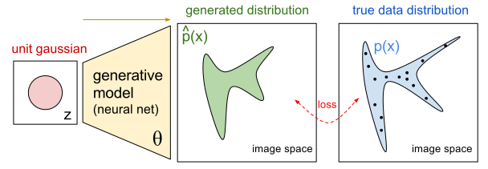
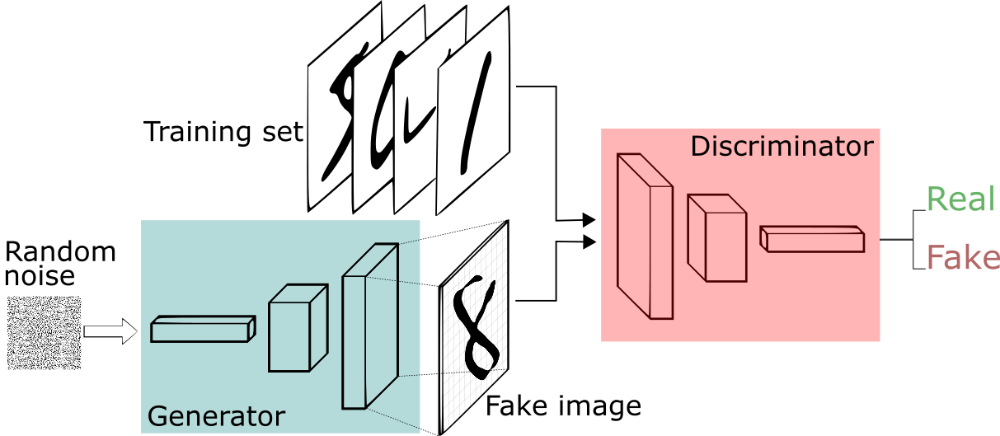
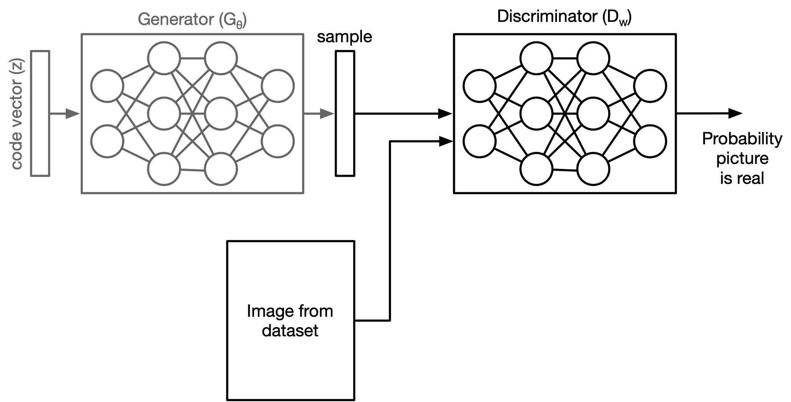

In this lecture:
- Getting to know theory behind generative adversarial networks
- Implementation of GAN
- The many uses of GANs
Unsupervised learning (continued)¶
So remember we talked about lots of unsupervised machine learning tasks including:
- Clustering
- Compression
- Data visualization
But there is another unsupervised task we haven't talked about yet: (generation). Think about what image/text generation is. It is the model's ability to generate something it has never seen before.

How do we train a model to create a new piece of data that has never been revealed before? This can't be supervised learning right? So what is it?
Implicit generative models¶
Implicit generative model implicitly defines a probability distribution.
You start by sampling a fixed, sample distribution and assigning this to be a code vector.
Then the generator network computes a differential function that maps a sample to a one of the piece of data in your data.
Visualizing the image space¶
Remember our PCA where we visualised datasets on a 2D pane
** quick reference back to Andrej Karpathy's data set visualization: https://cs.stanford.edu/people/karpathy/cnnembed/cnn_embed_6k.jpg
{kind=link}
We want to model generative model to recreate that image if fed a random distribution of inputs:

from [1]but how do we train such a network?
Generative Adversarial Networks¶
If we simply map some random inputs to some pieces of data in the dataset, all that will do is ask the network to replicate the images dataset exactly. We need to be able to tell the network
"This image you created looks [or does not look] like it came from the same dataset."
We need something to discriminate between images that can be part of the dataset, and images that are not part of the dataset.
Generative Adversarial Networks (GANs)¶
The idea behind GANs is to train two different networks at once:
- A generator model that tries to produce realistic looking samples
- A discriminator network tat tries to figure out whether an image came from the training set of the generator set.
GAN loss function¶
Let's look at what we're trying to optimize mathematically:
- Generator: $G_\theta(z)$
- Discriminator: $D_w(x) = p\left(y=1\vert x \right)$ ($x$ is a image from the target dataset)
How to choose the parameters for the discriminator ($w$):
$$ \mathcal{J}_D = -\Sigma_x \log D_w(x) - \Sigma_z \log\left(1-D_w(G_\theta(z))\right) $$We want to minimize $\mathcal{J}_D$.
On the otherhand, the cost function for the generator is the reverse:
$$ \begin{align} \mathcal{J}_G = const - \Sigma_z \log\left(1-D_w(G_\theta(z))\right) \end{align} $$when want to minimize $\mathcal{J}_D$ (maximize $\mathcal{J}_G$) because we want the generator to be really good at fooling the discriminator.
This is call minimax formulation. The generator and discriminator are playing a zero sum game against one another so you get a formulation of the form:
$$ \max_\theta\min_w \mathcal{J}_D $$Modified loss function¶
Want:
$$ \max_\theta\min_w \Sigma_x \log D_w(x) - \Sigma_z \log\left(1-D_w(G_\theta(z))\right) $$but looking at just the optimization of the generator:
$$ \max_\theta -\Sigma_z \log\left(1-D_w(G_\theta(z))\right) $$If the generator is good, then $D_w(G_\theta(z)) \rightarrow 1$, and $-\Sigma_z \log\left(1-D_w(G_\theta(z))\right) \rightarrow +\infty$ which is what we want. What if the discriminator is good but the generator is really bad? Then loss function will be near 0 which is correct, ... but it also means that the gradient is super small?
Remember with logistic regression how if the model was confidently wrong, then the gradient was small so we needed to do binary cross entropy to fix this issue? This is called the saturation problem.
Same thing here. Let's reformulate the loss function:
$$ \min_\theta - \Sigma_z \log\left(D_w(G_\theta(z))\right) $$Now lets do the same logic to make sure we are correct:
- If the generator is good, then it should fool the discriminator in producing a 1. Log of that is $=0$ so we want to minimize toward that.
- If the generator is bad but the discriminator is good, then we'd get something close to zero, log of that would be a huge number, want to minimize away from that.
Aside, getting deja-vu?¶
Remember Binary Cross-entropy loss?
$$ \mathcal{L}_{CE}(y, t) = -\,t \,\log y \;-\; (1 - t)\,\log\bigl(1 - y\bigr). $$Look at loss for discriminator ($\mathcal{D}$):
$$ \mathcal{J}_D = -\Sigma_x \log D_w(x) - \Sigma_z \log\left(1-D_w(G_\theta(z))\right) $$If $t=1$ for a real picture and $t=0$ for a fake picture, we got the same pattern as above.
Example: GAN on MNIST¶
Let's say we want to create more MNIST numerical digit images. How do we do it?

picture from [8]import torch
import torch.nn as nn
import torch.optim as optim
from torchvision import datasets, transforms
import matplotlib.pyplot as plt
# Set the computation device: GPU if available, else CPU.
device = torch.device("cuda" if torch.cuda.is_available() else "cpu")
# Generator model definition
class Generator(nn.Module):
def __init__(self, latent_dim):
super(Generator, self).__init__()
self.model = nn.Sequential(
nn.Linear(latent_dim, 128),
nn.ReLU(inplace=True),
nn.Linear(128, 256),
nn.BatchNorm1d(256, 0.8),
nn.ReLU(inplace=True),
nn.Linear(256, 512),
nn.BatchNorm1d(512, 0.8),
nn.ReLU(inplace=True),
nn.Linear(512, 28 * 28),
nn.Tanh() ### test with sigmoid
)
def forward(self, z):
img = self.model(z)
img = img.view(img.size(0), 1, 28, 28)
return img
# Discriminator model definition
class Discriminator(nn.Module):
def __init__(self):
super(Discriminator, self).__init__()
self.model = nn.Sequential(
nn.Linear(28 * 28, 512),
nn.LeakyReLU(0.2, inplace=True),
nn.Linear(512, 256),
nn.LeakyReLU(0.2, inplace=True),
nn.Linear(256, 1),
nn.Sigmoid()
)
def forward(self, img):
# Flatten the image from (batch, 1, 28, 28) to (batch, 784)
img_flat = img.view(img.size(0), -1)
validity = self.model(img_flat)
return validity
# Hyperparameters
latent_dim = 100
batch_size = 64
epochs = 300
# Initialize generator and discriminator and move to device.
generator = Generator(latent_dim).to(device)
discriminator = Discriminator().to(device)
# Optimizers and loss criterion
optimizer_G = optim.Adam(generator.parameters(), lr=0.0002, betas=(0.5, 0.999))
optimizer_D = optim.Adam(discriminator.parameters(), lr=0.0002, betas=(0.5, 0.999))
adversarial_loss = nn.BCELoss()
# DataLoader for the MNIST dataset.
dataloader = torch.utils.data.DataLoader(
datasets.MNIST(
"./data", train=True, download=True,
transform=transforms.Compose([
transforms.ToTensor(),
transforms.Normalize((0.5,), (0.5,))
])
),
batch_size=batch_size, shuffle=True
)
# For recording average loss per epoch.
epoch_d_losses = []
epoch_g_losses = []
# This list will store the 5-image samples from every 20th epoch.
sample_images_rows = []
How to Train a GAN?¶
We need to train the two models independently. So how do we do that?
- First we train the discriminator:

- Then we train the generator:
# Training loop.
for epoch in range(epochs):
epoch_d_loss = 0.0
epoch_g_loss = 0.0
for i, (imgs, _) in enumerate(dataloader):
# Transfer images to device.
imgs = imgs.to(device)
valid = torch.ones((imgs.size(0), 1), device=device)
fake = torch.zeros((imgs.size(0), 1), device=device)
# Train Generator.
optimizer_G.zero_grad()
z = torch.randn(imgs.size(0), latent_dim, device=device)
gen_imgs = generator(z)
g_loss = adversarial_loss(discriminator(gen_imgs), valid)
g_loss.backward()
optimizer_G.step()
# Train Discriminator.
optimizer_D.zero_grad()
real_loss = adversarial_loss(discriminator(imgs), valid)
fake_loss = adversarial_loss(discriminator(gen_imgs.detach()), fake) ## detach is important so we don't mess with the gradient in the generator
d_loss = (real_loss + fake_loss) / 2
d_loss.backward()
optimizer_D.step()
epoch_g_loss += g_loss.item()
epoch_d_loss += d_loss.item()
if i % 100 == 0:
print(f"[Epoch {epoch+1}/{epochs}] [Batch {i}/{len(dataloader)}] "
f"[D loss: {d_loss.item():.4f}] [G loss: {g_loss.item():.4f}]")
# Average losses for the epoch.
avg_d_loss = epoch_d_loss / len(dataloader)
avg_g_loss = epoch_g_loss / len(dataloader)
epoch_d_losses.append(avg_d_loss)
epoch_g_losses.append(avg_g_loss)
# Every 20th epoch, generate and store a sample of 5 images.
if (epoch + 1) % 20 == 0:
with torch.no_grad():
sample_z = torch.randn(5, latent_dim, device=device)
sample_imgs = generator(sample_z).detach().cpu()
sample_images_rows.append(sample_imgs)
print("Saved sample images for epoch", epoch+1)
[Epoch 1/300] [Batch 0/938] [D loss: 0.7180] [G loss: 0.6940] [Epoch 1/300] [Batch 100/938] [D loss: 0.3587] [G loss: 0.8368] [Epoch 1/300] [Batch 200/938] [D loss: 0.5674] [G loss: 0.5244] [Epoch 1/300] [Batch 300/938] [D loss: 0.3059] [G loss: 1.3184] [Epoch 1/300] [Batch 400/938] [D loss: 0.3602] [G loss: 2.4915] [Epoch 1/300] [Batch 500/938] [D loss: 0.1287] [G loss: 1.8459] [Epoch 1/300] [Batch 600/938] [D loss: 0.3489] [G loss: 1.0139] [Epoch 1/300] [Batch 700/938] [D loss: 0.1711] [G loss: 2.4436] [Epoch 1/300] [Batch 800/938] [D loss: 0.2077] [G loss: 1.8283] [Epoch 1/300] [Batch 900/938] [D loss: 0.1719] [G loss: 1.6677] [Epoch 2/300] [Batch 0/938] [D loss: 0.6652] [G loss: 3.5324] [Epoch 2/300] [Batch 100/938] [D loss: 0.2106] [G loss: 2.2703] [Epoch 2/300] [Batch 200/938] [D loss: 0.8497] [G loss: 0.2322] [Epoch 2/300] [Batch 300/938] [D loss: 0.4480] [G loss: 4.0808] [Epoch 2/300] [Batch 400/938] [D loss: 0.1591] [G loss: 1.7810] [Epoch 2/300] [Batch 500/938] [D loss: 0.2256] [G loss: 1.6744] [Epoch 2/300] [Batch 600/938] [D loss: 0.2200] [G loss: 3.1716] [Epoch 2/300] [Batch 700/938] [D loss: 0.2698] [G loss: 1.3519] [Epoch 2/300] [Batch 800/938] [D loss: 0.2621] [G loss: 1.5036] [Epoch 2/300] [Batch 900/938] [D loss: 0.2950] [G loss: 1.1941] [Epoch 3/300] [Batch 0/938] [D loss: 0.2468] [G loss: 1.2370] [Epoch 3/300] [Batch 100/938] [D loss: 0.2811] [G loss: 1.0293] [Epoch 3/300] [Batch 200/938] [D loss: 0.2245] [G loss: 1.9378] [Epoch 3/300] [Batch 300/938] [D loss: 0.7530] [G loss: 4.6119] [Epoch 3/300] [Batch 400/938] [D loss: 0.2691] [G loss: 3.1204] [Epoch 3/300] [Batch 500/938] [D loss: 0.3320] [G loss: 2.8892] [Epoch 3/300] [Batch 600/938] [D loss: 0.2104] [G loss: 1.7893] [Epoch 3/300] [Batch 700/938] [D loss: 0.4452] [G loss: 0.7842] [Epoch 3/300] [Batch 800/938] [D loss: 0.2766] [G loss: 1.8603] [Epoch 3/300] [Batch 900/938] [D loss: 0.3355] [G loss: 1.9882] [Epoch 4/300] [Batch 0/938] [D loss: 0.6194] [G loss: 3.9221] [Epoch 4/300] [Batch 100/938] [D loss: 0.2747] [G loss: 1.7755] [Epoch 4/300] [Batch 200/938] [D loss: 0.1991] [G loss: 2.2014] [Epoch 4/300] [Batch 300/938] [D loss: 0.3057] [G loss: 1.1950] [Epoch 4/300] [Batch 400/938] [D loss: 0.3529] [G loss: 2.9665] [Epoch 4/300] [Batch 500/938] [D loss: 0.2335] [G loss: 2.2485] [Epoch 4/300] [Batch 600/938] [D loss: 0.3564] [G loss: 1.0090] [Epoch 4/300] [Batch 700/938] [D loss: 0.2842] [G loss: 1.5536] [Epoch 4/300] [Batch 800/938] [D loss: 0.5100] [G loss: 0.6733] [Epoch 4/300] [Batch 900/938] [D loss: 0.4298] [G loss: 0.7216] [Epoch 5/300] [Batch 0/938] [D loss: 0.3224] [G loss: 1.2527] [Epoch 5/300] [Batch 100/938] [D loss: 0.4848] [G loss: 0.6625] [Epoch 5/300] [Batch 200/938] [D loss: 0.7659] [G loss: 0.3891] [Epoch 5/300] [Batch 300/938] [D loss: 0.2425] [G loss: 2.3162] [Epoch 5/300] [Batch 400/938] [D loss: 0.2683] [G loss: 1.9293] [Epoch 5/300] [Batch 500/938] [D loss: 0.3614] [G loss: 1.0565] [Epoch 5/300] [Batch 600/938] [D loss: 0.5529] [G loss: 3.1596] [Epoch 5/300] [Batch 700/938] [D loss: 0.2479] [G loss: 1.9893] [Epoch 5/300] [Batch 800/938] [D loss: 0.3711] [G loss: 2.7305] [Epoch 5/300] [Batch 900/938] [D loss: 0.2900] [G loss: 2.6004] [Epoch 6/300] [Batch 0/938] [D loss: 0.2976] [G loss: 1.1298] [Epoch 6/300] [Batch 100/938] [D loss: 0.4077] [G loss: 0.8476] [Epoch 6/300] [Batch 200/938] [D loss: 0.5153] [G loss: 0.7500] [Epoch 6/300] [Batch 300/938] [D loss: 0.3537] [G loss: 1.1522] [Epoch 6/300] [Batch 400/938] [D loss: 0.6399] [G loss: 3.7522] [Epoch 6/300] [Batch 500/938] [D loss: 0.2947] [G loss: 1.9233] [Epoch 6/300] [Batch 600/938] [D loss: 0.5563] [G loss: 0.6077] [Epoch 6/300] [Batch 700/938] [D loss: 0.3051] [G loss: 1.5623] [Epoch 6/300] [Batch 800/938] [D loss: 0.2919] [G loss: 1.3916] [Epoch 6/300] [Batch 900/938] [D loss: 0.6881] [G loss: 3.6431] [Epoch 7/300] [Batch 0/938] [D loss: 0.6826] [G loss: 3.8671] [Epoch 7/300] [Batch 100/938] [D loss: 0.3123] [G loss: 2.4276] [Epoch 7/300] [Batch 200/938] [D loss: 0.3852] [G loss: 1.7910] [Epoch 7/300] [Batch 300/938] [D loss: 0.3666] [G loss: 1.1083] [Epoch 7/300] [Batch 400/938] [D loss: 0.2727] [G loss: 1.7433] [Epoch 7/300] [Batch 500/938] [D loss: 0.3767] [G loss: 1.1465] [Epoch 7/300] [Batch 600/938] [D loss: 0.5884] [G loss: 0.5456] [Epoch 7/300] [Batch 700/938] [D loss: 0.2637] [G loss: 2.0804] [Epoch 7/300] [Batch 800/938] [D loss: 0.4473] [G loss: 0.8395] [Epoch 7/300] [Batch 900/938] [D loss: 0.4851] [G loss: 0.7487] [Epoch 8/300] [Batch 0/938] [D loss: 0.4324] [G loss: 1.0731] [Epoch 8/300] [Batch 100/938] [D loss: 0.4436] [G loss: 0.8978] [Epoch 8/300] [Batch 200/938] [D loss: 0.4307] [G loss: 2.5257] [Epoch 8/300] [Batch 300/938] [D loss: 0.7383] [G loss: 3.7666] [Epoch 8/300] [Batch 400/938] [D loss: 0.4543] [G loss: 2.2425] [Epoch 8/300] [Batch 500/938] [D loss: 0.2771] [G loss: 1.5905] [Epoch 8/300] [Batch 600/938] [D loss: 0.7853] [G loss: 0.3812] [Epoch 8/300] [Batch 700/938] [D loss: 0.3394] [G loss: 1.1272] [Epoch 8/300] [Batch 800/938] [D loss: 0.5385] [G loss: 0.6532] [Epoch 8/300] [Batch 900/938] [D loss: 0.2859] [G loss: 1.6537] [Epoch 9/300] [Batch 0/938] [D loss: 0.3880] [G loss: 0.9589] [Epoch 9/300] [Batch 100/938] [D loss: 0.5106] [G loss: 3.0041] [Epoch 9/300] [Batch 200/938] [D loss: 0.4543] [G loss: 2.4145] [Epoch 9/300] [Batch 300/938] [D loss: 0.4347] [G loss: 1.5139] [Epoch 9/300] [Batch 400/938] [D loss: 0.3517] [G loss: 1.7920] [Epoch 9/300] [Batch 500/938] [D loss: 0.3461] [G loss: 1.1253] [Epoch 9/300] [Batch 600/938] [D loss: 0.4243] [G loss: 1.6618] [Epoch 9/300] [Batch 700/938] [D loss: 0.4561] [G loss: 1.0050] [Epoch 9/300] [Batch 800/938] [D loss: 0.3198] [G loss: 1.5955] [Epoch 9/300] [Batch 900/938] [D loss: 0.4409] [G loss: 0.8964] [Epoch 10/300] [Batch 0/938] [D loss: 0.4355] [G loss: 0.9276] [Epoch 10/300] [Batch 100/938] [D loss: 0.4422] [G loss: 1.8732] [Epoch 10/300] [Batch 200/938] [D loss: 0.4182] [G loss: 1.9032] [Epoch 10/300] [Batch 300/938] [D loss: 0.3548] [G loss: 1.9798] [Epoch 10/300] [Batch 400/938] [D loss: 0.4616] [G loss: 1.0509] [Epoch 10/300] [Batch 500/938] [D loss: 0.3170] [G loss: 1.7258] [Epoch 10/300] [Batch 600/938] [D loss: 0.3796] [G loss: 1.8870] [Epoch 10/300] [Batch 700/938] [D loss: 0.4922] [G loss: 0.7391] [Epoch 10/300] [Batch 800/938] [D loss: 0.3955] [G loss: 0.9303] [Epoch 10/300] [Batch 900/938] [D loss: 0.4689] [G loss: 1.6072] [Epoch 11/300] [Batch 0/938] [D loss: 0.4768] [G loss: 2.1203] [Epoch 11/300] [Batch 100/938] [D loss: 0.3646] [G loss: 1.3991] [Epoch 11/300] [Batch 200/938] [D loss: 0.3156] [G loss: 2.0381] [Epoch 11/300] [Batch 300/938] [D loss: 0.3412] [G loss: 1.6052] [Epoch 11/300] [Batch 400/938] [D loss: 0.3994] [G loss: 1.0285] [Epoch 11/300] [Batch 500/938] [D loss: 0.3667] [G loss: 1.1219] [Epoch 11/300] [Batch 600/938] [D loss: 0.7484] [G loss: 0.4467] [Epoch 11/300] [Batch 700/938] [D loss: 0.4030] [G loss: 2.2491] [Epoch 11/300] [Batch 800/938] [D loss: 0.2584] [G loss: 1.5332] [Epoch 11/300] [Batch 900/938] [D loss: 0.3982] [G loss: 1.0457] [Epoch 12/300] [Batch 0/938] [D loss: 0.4220] [G loss: 2.3358] [Epoch 12/300] [Batch 100/938] [D loss: 0.4777] [G loss: 2.1494] [Epoch 12/300] [Batch 200/938] [D loss: 0.5334] [G loss: 2.6936] [Epoch 12/300] [Batch 300/938] [D loss: 0.7495] [G loss: 0.4055] [Epoch 12/300] [Batch 400/938] [D loss: 0.3800] [G loss: 1.2036] [Epoch 12/300] [Batch 500/938] [D loss: 0.3821] [G loss: 0.9881] [Epoch 12/300] [Batch 600/938] [D loss: 0.5286] [G loss: 2.8539] [Epoch 12/300] [Batch 700/938] [D loss: 0.3881] [G loss: 2.1436] [Epoch 12/300] [Batch 800/938] [D loss: 0.3961] [G loss: 1.6106] [Epoch 12/300] [Batch 900/938] [D loss: 0.4209] [G loss: 1.2322] [Epoch 13/300] [Batch 0/938] [D loss: 0.3657] [G loss: 1.1200] [Epoch 13/300] [Batch 100/938] [D loss: 0.4823] [G loss: 2.1296] [Epoch 13/300] [Batch 200/938] [D loss: 0.3712] [G loss: 1.6373] [Epoch 13/300] [Batch 300/938] [D loss: 0.4205] [G loss: 2.3861] [Epoch 13/300] [Batch 400/938] [D loss: 0.3940] [G loss: 1.6329] [Epoch 13/300] [Batch 500/938] [D loss: 0.4821] [G loss: 2.3500] [Epoch 13/300] [Batch 600/938] [D loss: 0.3742] [G loss: 1.2126] [Epoch 13/300] [Batch 700/938] [D loss: 0.3858] [G loss: 1.6834]
[Epoch 13/300] [Batch 800/938] [D loss: 0.5727] [G loss: 0.6286] [Epoch 13/300] [Batch 900/938] [D loss: 0.4567] [G loss: 0.8774] [Epoch 14/300] [Batch 0/938] [D loss: 0.3793] [G loss: 1.2554] [Epoch 14/300] [Batch 100/938] [D loss: 0.4008] [G loss: 2.3539] [Epoch 14/300] [Batch 200/938] [D loss: 0.4522] [G loss: 2.2810] [Epoch 14/300] [Batch 300/938] [D loss: 0.3501] [G loss: 1.2890] [Epoch 14/300] [Batch 400/938] [D loss: 0.4628] [G loss: 2.1145] [Epoch 14/300] [Batch 500/938] [D loss: 0.4549] [G loss: 1.7455] [Epoch 14/300] [Batch 600/938] [D loss: 0.4400] [G loss: 1.7027] [Epoch 14/300] [Batch 700/938] [D loss: 0.3969] [G loss: 1.1820] [Epoch 14/300] [Batch 800/938] [D loss: 0.3694] [G loss: 1.2847] [Epoch 14/300] [Batch 900/938] [D loss: 0.3933] [G loss: 1.0756] [Epoch 15/300] [Batch 0/938] [D loss: 0.5730] [G loss: 0.6182] [Epoch 15/300] [Batch 100/938] [D loss: 0.6036] [G loss: 3.1912] [Epoch 15/300] [Batch 200/938] [D loss: 0.3488] [G loss: 1.3117] [Epoch 15/300] [Batch 300/938] [D loss: 0.4388] [G loss: 1.2341] [Epoch 15/300] [Batch 400/938] [D loss: 0.5774] [G loss: 0.5295] [Epoch 15/300] [Batch 500/938] [D loss: 0.4187] [G loss: 1.1468] [Epoch 15/300] [Batch 600/938] [D loss: 0.3867] [G loss: 1.8022] [Epoch 15/300] [Batch 700/938] [D loss: 0.3731] [G loss: 1.1901] [Epoch 15/300] [Batch 800/938] [D loss: 0.4023] [G loss: 1.1709] [Epoch 15/300] [Batch 900/938] [D loss: 0.5353] [G loss: 0.6926] [Epoch 16/300] [Batch 0/938] [D loss: 0.4039] [G loss: 1.2562] [Epoch 16/300] [Batch 100/938] [D loss: 0.3719] [G loss: 1.3686] [Epoch 16/300] [Batch 200/938] [D loss: 0.3747] [G loss: 1.5930] [Epoch 16/300] [Batch 300/938] [D loss: 0.4370] [G loss: 0.9829] [Epoch 16/300] [Batch 400/938] [D loss: 0.5224] [G loss: 0.7009] [Epoch 16/300] [Batch 500/938] [D loss: 0.4201] [G loss: 1.4899] [Epoch 16/300] [Batch 600/938] [D loss: 0.4078] [G loss: 1.5612] [Epoch 16/300] [Batch 700/938] [D loss: 0.4402] [G loss: 1.0512] [Epoch 16/300] [Batch 800/938] [D loss: 0.4528] [G loss: 1.0168] [Epoch 16/300] [Batch 900/938] [D loss: 0.3961] [G loss: 1.5537] [Epoch 17/300] [Batch 0/938] [D loss: 0.3821] [G loss: 1.4913] [Epoch 17/300] [Batch 100/938] [D loss: 0.5841] [G loss: 2.5630] [Epoch 17/300] [Batch 200/938] [D loss: 0.3925] [G loss: 1.7122] [Epoch 17/300] [Batch 300/938] [D loss: 0.5071] [G loss: 2.2686] [Epoch 17/300] [Batch 400/938] [D loss: 0.3839] [G loss: 1.4406] [Epoch 17/300] [Batch 500/938] [D loss: 0.4049] [G loss: 1.4415] [Epoch 17/300] [Batch 600/938] [D loss: 0.3429] [G loss: 1.8668] [Epoch 17/300] [Batch 700/938] [D loss: 0.4811] [G loss: 0.9056] [Epoch 17/300] [Batch 800/938] [D loss: 0.3749] [G loss: 1.3909] [Epoch 17/300] [Batch 900/938] [D loss: 0.3624] [G loss: 1.6597] [Epoch 18/300] [Batch 0/938] [D loss: 0.3345] [G loss: 1.5018] [Epoch 18/300] [Batch 100/938] [D loss: 0.4045] [G loss: 1.2392] [Epoch 18/300] [Batch 200/938] [D loss: 0.4650] [G loss: 1.6478] [Epoch 18/300] [Batch 300/938] [D loss: 0.3353] [G loss: 1.4228] [Epoch 18/300] [Batch 400/938] [D loss: 0.4370] [G loss: 1.7692] [Epoch 18/300] [Batch 500/938] [D loss: 0.3413] [G loss: 1.2953] [Epoch 18/300] [Batch 600/938] [D loss: 0.4936] [G loss: 0.9811] [Epoch 18/300] [Batch 700/938] [D loss: 0.4554] [G loss: 0.8485] [Epoch 18/300] [Batch 800/938] [D loss: 0.4000] [G loss: 1.8271] [Epoch 18/300] [Batch 900/938] [D loss: 0.3660] [G loss: 1.6175] [Epoch 19/300] [Batch 0/938] [D loss: 0.4115] [G loss: 1.6262] [Epoch 19/300] [Batch 100/938] [D loss: 0.4843] [G loss: 1.4896] [Epoch 19/300] [Batch 200/938] [D loss: 0.5060] [G loss: 2.3933] [Epoch 19/300] [Batch 300/938] [D loss: 0.4354] [G loss: 1.5247] [Epoch 19/300] [Batch 400/938] [D loss: 0.4918] [G loss: 1.5746] [Epoch 19/300] [Batch 500/938] [D loss: 0.4576] [G loss: 1.0094] [Epoch 19/300] [Batch 600/938] [D loss: 0.4322] [G loss: 0.9708] [Epoch 19/300] [Batch 700/938] [D loss: 0.4496] [G loss: 1.0092] [Epoch 19/300] [Batch 800/938] [D loss: 0.4236] [G loss: 1.2291] [Epoch 19/300] [Batch 900/938] [D loss: 0.5260] [G loss: 2.4694] [Epoch 20/300] [Batch 0/938] [D loss: 0.4206] [G loss: 1.3860] [Epoch 20/300] [Batch 100/938] [D loss: 0.4136] [G loss: 1.4216] [Epoch 20/300] [Batch 200/938] [D loss: 0.5150] [G loss: 1.7450] [Epoch 20/300] [Batch 300/938] [D loss: 0.5732] [G loss: 2.4125] [Epoch 20/300] [Batch 400/938] [D loss: 0.5287] [G loss: 0.8010] [Epoch 20/300] [Batch 500/938] [D loss: 0.4313] [G loss: 1.2475] [Epoch 20/300] [Batch 600/938] [D loss: 0.4132] [G loss: 1.8877] [Epoch 20/300] [Batch 700/938] [D loss: 0.5051] [G loss: 0.8928] [Epoch 20/300] [Batch 800/938] [D loss: 0.4595] [G loss: 1.6932] [Epoch 20/300] [Batch 900/938] [D loss: 0.4887] [G loss: 0.9604] Saved sample images for epoch 20 [Epoch 21/300] [Batch 0/938] [D loss: 0.4046] [G loss: 1.4856] [Epoch 21/300] [Batch 100/938] [D loss: 0.4715] [G loss: 0.8735] [Epoch 21/300] [Batch 200/938] [D loss: 0.4538] [G loss: 1.8353] [Epoch 21/300] [Batch 300/938] [D loss: 0.4637] [G loss: 1.8839] [Epoch 21/300] [Batch 400/938] [D loss: 0.4190] [G loss: 1.4520] [Epoch 21/300] [Batch 500/938] [D loss: 0.4704] [G loss: 1.8380] [Epoch 21/300] [Batch 600/938] [D loss: 0.3944] [G loss: 1.0950] [Epoch 21/300] [Batch 700/938] [D loss: 0.5217] [G loss: 1.3201] [Epoch 21/300] [Batch 800/938] [D loss: 0.5645] [G loss: 0.6361] [Epoch 21/300] [Batch 900/938] [D loss: 0.4263] [G loss: 1.1472] [Epoch 22/300] [Batch 0/938] [D loss: 0.4320] [G loss: 1.1801] [Epoch 22/300] [Batch 100/938] [D loss: 0.4628] [G loss: 1.0641] [Epoch 22/300] [Batch 200/938] [D loss: 0.6696] [G loss: 2.5467] [Epoch 22/300] [Batch 300/938] [D loss: 0.5882] [G loss: 1.9518] [Epoch 22/300] [Batch 400/938] [D loss: 0.4935] [G loss: 1.2871] [Epoch 22/300] [Batch 500/938] [D loss: 0.5002] [G loss: 0.9630] [Epoch 22/300] [Batch 600/938] [D loss: 0.4626] [G loss: 1.0720] [Epoch 22/300] [Batch 700/938] [D loss: 0.3960] [G loss: 1.0411] [Epoch 22/300] [Batch 800/938] [D loss: 0.3866] [G loss: 1.4554] [Epoch 22/300] [Batch 900/938] [D loss: 0.3921] [G loss: 1.2291] [Epoch 23/300] [Batch 0/938] [D loss: 0.4986] [G loss: 1.7217] [Epoch 23/300] [Batch 100/938] [D loss: 0.4161] [G loss: 1.4628] [Epoch 23/300] [Batch 200/938] [D loss: 0.4562] [G loss: 1.5704] [Epoch 23/300] [Batch 300/938] [D loss: 0.5390] [G loss: 0.8114] [Epoch 23/300] [Batch 400/938] [D loss: 0.6553] [G loss: 0.5235] [Epoch 23/300] [Batch 500/938] [D loss: 0.4524] [G loss: 1.2872] [Epoch 23/300] [Batch 600/938] [D loss: 0.5044] [G loss: 0.8889] [Epoch 23/300] [Batch 700/938] [D loss: 0.4661] [G loss: 1.1690] [Epoch 23/300] [Batch 800/938] [D loss: 0.4809] [G loss: 1.2149] [Epoch 23/300] [Batch 900/938] [D loss: 0.4031] [G loss: 1.5018] [Epoch 24/300] [Batch 0/938] [D loss: 0.5334] [G loss: 0.7593] [Epoch 24/300] [Batch 100/938] [D loss: 0.5155] [G loss: 0.9867] [Epoch 24/300] [Batch 200/938] [D loss: 0.4470] [G loss: 0.9897] [Epoch 24/300] [Batch 300/938] [D loss: 0.5568] [G loss: 0.7515] [Epoch 24/300] [Batch 400/938] [D loss: 0.5046] [G loss: 1.5962] [Epoch 24/300] [Batch 500/938] [D loss: 0.4574] [G loss: 1.7334] [Epoch 24/300] [Batch 600/938] [D loss: 0.4384] [G loss: 1.0829] [Epoch 24/300] [Batch 700/938] [D loss: 0.4723] [G loss: 1.2239] [Epoch 24/300] [Batch 800/938] [D loss: 0.5477] [G loss: 2.2754] [Epoch 24/300] [Batch 900/938] [D loss: 0.4833] [G loss: 0.8741] [Epoch 25/300] [Batch 0/938] [D loss: 0.6646] [G loss: 0.4670] [Epoch 25/300] [Batch 100/938] [D loss: 0.4883] [G loss: 0.9331] [Epoch 25/300] [Batch 200/938] [D loss: 0.4306] [G loss: 0.9269] [Epoch 25/300] [Batch 300/938] [D loss: 0.4760] [G loss: 1.7308] [Epoch 25/300] [Batch 400/938] [D loss: 0.4923] [G loss: 1.4212] [Epoch 25/300] [Batch 500/938] [D loss: 0.4444] [G loss: 1.1829] [Epoch 25/300] [Batch 600/938] [D loss: 0.4546] [G loss: 1.5032] [Epoch 25/300] [Batch 700/938] [D loss: 0.5473] [G loss: 0.5950] [Epoch 25/300] [Batch 800/938] [D loss: 0.4530] [G loss: 0.9604] [Epoch 25/300] [Batch 900/938] [D loss: 0.4248] [G loss: 1.1751] [Epoch 26/300] [Batch 0/938] [D loss: 0.5204] [G loss: 1.8633] [Epoch 26/300] [Batch 100/938] [D loss: 0.4243] [G loss: 0.9953] [Epoch 26/300] [Batch 200/938] [D loss: 0.4220] [G loss: 1.1661] [Epoch 26/300] [Batch 300/938] [D loss: 0.4141] [G loss: 1.1751]
[Epoch 26/300] [Batch 400/938] [D loss: 0.4670] [G loss: 1.2536] [Epoch 26/300] [Batch 500/938] [D loss: 0.4641] [G loss: 0.9912] [Epoch 26/300] [Batch 600/938] [D loss: 0.4795] [G loss: 1.2419] [Epoch 26/300] [Batch 700/938] [D loss: 0.4280] [G loss: 1.4124] [Epoch 26/300] [Batch 800/938] [D loss: 0.6512] [G loss: 2.3885] [Epoch 26/300] [Batch 900/938] [D loss: 0.4277] [G loss: 1.3283] [Epoch 27/300] [Batch 0/938] [D loss: 0.4915] [G loss: 1.0746] [Epoch 27/300] [Batch 100/938] [D loss: 0.4266] [G loss: 1.2950] [Epoch 27/300] [Batch 200/938] [D loss: 0.4809] [G loss: 1.7731] [Epoch 27/300] [Batch 300/938] [D loss: 0.4341] [G loss: 1.1187] [Epoch 27/300] [Batch 400/938] [D loss: 0.4453] [G loss: 1.2581] [Epoch 27/300] [Batch 500/938] [D loss: 0.5641] [G loss: 1.5081] [Epoch 27/300] [Batch 600/938] [D loss: 0.4171] [G loss: 1.3061] [Epoch 27/300] [Batch 700/938] [D loss: 0.5972] [G loss: 0.7928] [Epoch 27/300] [Batch 800/938] [D loss: 0.4672] [G loss: 1.1932] [Epoch 27/300] [Batch 900/938] [D loss: 0.4290] [G loss: 1.0046] [Epoch 28/300] [Batch 0/938] [D loss: 0.6730] [G loss: 2.4109] [Epoch 28/300] [Batch 100/938] [D loss: 0.5466] [G loss: 0.9550] [Epoch 28/300] [Batch 200/938] [D loss: 0.5265] [G loss: 1.8188] [Epoch 28/300] [Batch 300/938] [D loss: 0.6213] [G loss: 0.6285] [Epoch 28/300] [Batch 400/938] [D loss: 0.5904] [G loss: 0.7313] [Epoch 28/300] [Batch 500/938] [D loss: 0.4453] [G loss: 1.6053] [Epoch 28/300] [Batch 600/938] [D loss: 0.4474] [G loss: 1.6339] [Epoch 28/300] [Batch 700/938] [D loss: 0.4329] [G loss: 1.4203] [Epoch 28/300] [Batch 800/938] [D loss: 0.4528] [G loss: 1.1418] [Epoch 28/300] [Batch 900/938] [D loss: 0.4594] [G loss: 1.0169] [Epoch 29/300] [Batch 0/938] [D loss: 0.4855] [G loss: 1.2773] [Epoch 29/300] [Batch 100/938] [D loss: 0.4370] [G loss: 1.2242] [Epoch 29/300] [Batch 200/938] [D loss: 0.4869] [G loss: 0.9701] [Epoch 29/300] [Batch 300/938] [D loss: 0.4712] [G loss: 1.0863] [Epoch 29/300] [Batch 400/938] [D loss: 0.4825] [G loss: 1.1159] [Epoch 29/300] [Batch 500/938] [D loss: 0.4946] [G loss: 1.2594] [Epoch 29/300] [Batch 600/938] [D loss: 0.4959] [G loss: 1.3545] [Epoch 29/300] [Batch 700/938] [D loss: 0.3742] [G loss: 1.5594] [Epoch 29/300] [Batch 800/938] [D loss: 0.4259] [G loss: 0.9815] [Epoch 29/300] [Batch 900/938] [D loss: 0.5513] [G loss: 1.6443] [Epoch 30/300] [Batch 0/938] [D loss: 0.4952] [G loss: 0.9513] [Epoch 30/300] [Batch 100/938] [D loss: 0.5235] [G loss: 1.3632] [Epoch 30/300] [Batch 200/938] [D loss: 0.5145] [G loss: 1.4563] [Epoch 30/300] [Batch 300/938] [D loss: 0.4540] [G loss: 1.4925] [Epoch 30/300] [Batch 400/938] [D loss: 0.5305] [G loss: 0.9391] [Epoch 30/300] [Batch 500/938] [D loss: 0.4689] [G loss: 0.9103] [Epoch 30/300] [Batch 600/938] [D loss: 0.6793] [G loss: 0.5194] [Epoch 30/300] [Batch 700/938] [D loss: 0.4480] [G loss: 1.2514] [Epoch 30/300] [Batch 800/938] [D loss: 0.4975] [G loss: 0.9753] [Epoch 30/300] [Batch 900/938] [D loss: 0.4616] [G loss: 1.6286] [Epoch 31/300] [Batch 0/938] [D loss: 0.4967] [G loss: 1.5538] [Epoch 31/300] [Batch 100/938] [D loss: 0.5365] [G loss: 0.7102] [Epoch 31/300] [Batch 200/938] [D loss: 0.4494] [G loss: 1.3476] [Epoch 31/300] [Batch 300/938] [D loss: 0.5737] [G loss: 0.7943] [Epoch 31/300] [Batch 400/938] [D loss: 0.6420] [G loss: 0.4653] [Epoch 31/300] [Batch 500/938] [D loss: 0.4885] [G loss: 1.4889] [Epoch 31/300] [Batch 600/938] [D loss: 0.4201] [G loss: 1.5269] [Epoch 31/300] [Batch 700/938] [D loss: 0.5203] [G loss: 0.7374] [Epoch 31/300] [Batch 800/938] [D loss: 0.4963] [G loss: 1.0133] [Epoch 31/300] [Batch 900/938] [D loss: 0.4487] [G loss: 1.2716] [Epoch 32/300] [Batch 0/938] [D loss: 0.4649] [G loss: 0.9154] [Epoch 32/300] [Batch 100/938] [D loss: 0.4783] [G loss: 0.9260] [Epoch 32/300] [Batch 200/938] [D loss: 0.4731] [G loss: 0.9174] [Epoch 32/300] [Batch 300/938] [D loss: 0.5145] [G loss: 0.9639] [Epoch 32/300] [Batch 400/938] [D loss: 0.4859] [G loss: 1.0866] [Epoch 32/300] [Batch 500/938] [D loss: 0.4741] [G loss: 1.1493] [Epoch 32/300] [Batch 600/938] [D loss: 0.5002] [G loss: 1.1063] [Epoch 32/300] [Batch 700/938] [D loss: 0.4848] [G loss: 0.9159] [Epoch 32/300] [Batch 800/938] [D loss: 0.4593] [G loss: 0.9873] [Epoch 32/300] [Batch 900/938] [D loss: 0.4600] [G loss: 1.0223] [Epoch 33/300] [Batch 0/938] [D loss: 0.4442] [G loss: 1.5730] [Epoch 33/300] [Batch 100/938] [D loss: 0.5619] [G loss: 1.8447] [Epoch 33/300] [Batch 200/938] [D loss: 0.5416] [G loss: 0.8943] [Epoch 33/300] [Batch 300/938] [D loss: 0.4831] [G loss: 0.9112] [Epoch 33/300] [Batch 400/938] [D loss: 0.5031] [G loss: 0.9427] [Epoch 33/300] [Batch 500/938] [D loss: 0.5572] [G loss: 0.7472] [Epoch 33/300] [Batch 600/938] [D loss: 0.4893] [G loss: 1.3653] [Epoch 33/300] [Batch 700/938] [D loss: 0.4513] [G loss: 1.2192] [Epoch 33/300] [Batch 800/938] [D loss: 0.5084] [G loss: 1.0317] [Epoch 33/300] [Batch 900/938] [D loss: 0.5092] [G loss: 0.9437] [Epoch 34/300] [Batch 0/938] [D loss: 0.4801] [G loss: 1.0770] [Epoch 34/300] [Batch 100/938] [D loss: 0.5021] [G loss: 2.0640] [Epoch 34/300] [Batch 200/938] [D loss: 0.5099] [G loss: 1.1579] [Epoch 34/300] [Batch 300/938] [D loss: 0.4696] [G loss: 1.7926] [Epoch 34/300] [Batch 400/938] [D loss: 0.5455] [G loss: 2.3461] [Epoch 34/300] [Batch 500/938] [D loss: 0.4910] [G loss: 0.7610] [Epoch 34/300] [Batch 600/938] [D loss: 0.4486] [G loss: 1.0672] [Epoch 34/300] [Batch 700/938] [D loss: 0.5118] [G loss: 1.0193] [Epoch 34/300] [Batch 800/938] [D loss: 0.4494] [G loss: 1.1054] [Epoch 34/300] [Batch 900/938] [D loss: 0.4768] [G loss: 1.1675] [Epoch 35/300] [Batch 0/938] [D loss: 0.4306] [G loss: 1.8025] [Epoch 35/300] [Batch 100/938] [D loss: 0.4806] [G loss: 1.0958] [Epoch 35/300] [Batch 200/938] [D loss: 0.4069] [G loss: 1.6051] [Epoch 35/300] [Batch 300/938] [D loss: 0.4494] [G loss: 1.1296] [Epoch 35/300] [Batch 400/938] [D loss: 0.6125] [G loss: 0.6709] [Epoch 35/300] [Batch 500/938] [D loss: 0.4802] [G loss: 0.9418] [Epoch 35/300] [Batch 600/938] [D loss: 0.5139] [G loss: 1.6590] [Epoch 35/300] [Batch 700/938] [D loss: 0.4351] [G loss: 1.6103] [Epoch 35/300] [Batch 800/938] [D loss: 0.5179] [G loss: 1.1646] [Epoch 35/300] [Batch 900/938] [D loss: 0.5159] [G loss: 1.4352] [Epoch 36/300] [Batch 0/938] [D loss: 0.4688] [G loss: 1.2959] [Epoch 36/300] [Batch 100/938] [D loss: 0.4936] [G loss: 0.9677] [Epoch 36/300] [Batch 200/938] [D loss: 0.4936] [G loss: 0.8797] [Epoch 36/300] [Batch 300/938] [D loss: 0.5154] [G loss: 0.9787] [Epoch 36/300] [Batch 400/938] [D loss: 0.5012] [G loss: 1.0470] [Epoch 36/300] [Batch 500/938] [D loss: 0.4131] [G loss: 1.8316] [Epoch 36/300] [Batch 600/938] [D loss: 0.5292] [G loss: 1.6852] [Epoch 36/300] [Batch 700/938] [D loss: 0.4531] [G loss: 1.0026] [Epoch 36/300] [Batch 800/938] [D loss: 0.5463] [G loss: 1.0036] [Epoch 36/300] [Batch 900/938] [D loss: 0.5278] [G loss: 1.7246] [Epoch 37/300] [Batch 0/938] [D loss: 0.4482] [G loss: 1.0437] [Epoch 37/300] [Batch 100/938] [D loss: 0.4980] [G loss: 0.9415] [Epoch 37/300] [Batch 200/938] [D loss: 0.5594] [G loss: 1.7688] [Epoch 37/300] [Batch 300/938] [D loss: 0.4828] [G loss: 1.6435] [Epoch 37/300] [Batch 400/938] [D loss: 0.5277] [G loss: 0.7312] [Epoch 37/300] [Batch 500/938] [D loss: 0.4387] [G loss: 1.4876] [Epoch 37/300] [Batch 600/938] [D loss: 0.5199] [G loss: 1.5410] [Epoch 37/300] [Batch 700/938] [D loss: 0.5448] [G loss: 0.8389] [Epoch 37/300] [Batch 800/938] [D loss: 0.5707] [G loss: 0.7885] [Epoch 37/300] [Batch 900/938] [D loss: 0.5993] [G loss: 0.8379] [Epoch 38/300] [Batch 0/938] [D loss: 0.5355] [G loss: 1.4494] [Epoch 38/300] [Batch 100/938] [D loss: 0.4705] [G loss: 1.6125] [Epoch 38/300] [Batch 200/938] [D loss: 0.5298] [G loss: 1.5427] [Epoch 38/300] [Batch 300/938] [D loss: 0.5032] [G loss: 1.4407] [Epoch 38/300] [Batch 400/938] [D loss: 0.4468] [G loss: 1.1219] [Epoch 38/300] [Batch 500/938] [D loss: 0.4752] [G loss: 0.8909] [Epoch 38/300] [Batch 600/938] [D loss: 0.5147] [G loss: 1.2481] [Epoch 38/300] [Batch 700/938] [D loss: 0.4896] [G loss: 1.7406] [Epoch 38/300] [Batch 800/938] [D loss: 0.4556] [G loss: 1.3084] [Epoch 38/300] [Batch 900/938] [D loss: 0.5204] [G loss: 1.5320] [Epoch 39/300] [Batch 0/938] [D loss: 0.5866] [G loss: 0.7887]
[Epoch 39/300] [Batch 100/938] [D loss: 0.4605] [G loss: 1.2707] [Epoch 39/300] [Batch 200/938] [D loss: 0.5412] [G loss: 1.4477] [Epoch 39/300] [Batch 300/938] [D loss: 0.5205] [G loss: 0.9280] [Epoch 39/300] [Batch 400/938] [D loss: 0.5058] [G loss: 1.3783] [Epoch 39/300] [Batch 500/938] [D loss: 0.5600] [G loss: 1.3747] [Epoch 39/300] [Batch 600/938] [D loss: 0.5599] [G loss: 1.7708] [Epoch 39/300] [Batch 700/938] [D loss: 0.5613] [G loss: 2.0464] [Epoch 39/300] [Batch 800/938] [D loss: 0.5095] [G loss: 1.0351] [Epoch 39/300] [Batch 900/938] [D loss: 0.5173] [G loss: 0.8976] [Epoch 40/300] [Batch 0/938] [D loss: 0.4629] [G loss: 1.0803] [Epoch 40/300] [Batch 100/938] [D loss: 0.4865] [G loss: 1.0394] [Epoch 40/300] [Batch 200/938] [D loss: 0.4554] [G loss: 1.6930] [Epoch 40/300] [Batch 300/938] [D loss: 0.4518] [G loss: 1.3448] [Epoch 40/300] [Batch 400/938] [D loss: 0.5062] [G loss: 1.9358] [Epoch 40/300] [Batch 500/938] [D loss: 0.5197] [G loss: 1.4749] [Epoch 40/300] [Batch 600/938] [D loss: 0.4383] [G loss: 1.6407] [Epoch 40/300] [Batch 700/938] [D loss: 0.4516] [G loss: 1.2622] [Epoch 40/300] [Batch 800/938] [D loss: 0.4783] [G loss: 1.2715] [Epoch 40/300] [Batch 900/938] [D loss: 0.4668] [G loss: 1.3456] Saved sample images for epoch 40 [Epoch 41/300] [Batch 0/938] [D loss: 0.4639] [G loss: 1.2152] [Epoch 41/300] [Batch 100/938] [D loss: 0.4852] [G loss: 1.2929] [Epoch 41/300] [Batch 200/938] [D loss: 0.4932] [G loss: 1.1201] [Epoch 41/300] [Batch 300/938] [D loss: 0.5285] [G loss: 1.4095] [Epoch 41/300] [Batch 400/938] [D loss: 0.4057] [G loss: 1.2238] [Epoch 41/300] [Batch 500/938] [D loss: 0.4807] [G loss: 1.6215] [Epoch 41/300] [Batch 600/938] [D loss: 0.4662] [G loss: 1.3892] [Epoch 41/300] [Batch 700/938] [D loss: 0.5159] [G loss: 1.1925] [Epoch 41/300] [Batch 800/938] [D loss: 0.5440] [G loss: 1.3193] [Epoch 41/300] [Batch 900/938] [D loss: 0.4434] [G loss: 1.3112] [Epoch 42/300] [Batch 0/938] [D loss: 0.5063] [G loss: 0.9706] [Epoch 42/300] [Batch 100/938] [D loss: 0.4566] [G loss: 0.9872] [Epoch 42/300] [Batch 200/938] [D loss: 0.5064] [G loss: 1.7085] [Epoch 42/300] [Batch 300/938] [D loss: 0.5792] [G loss: 1.4369] [Epoch 42/300] [Batch 400/938] [D loss: 0.5099] [G loss: 0.8665] [Epoch 42/300] [Batch 500/938] [D loss: 0.4595] [G loss: 1.1274] [Epoch 42/300] [Batch 600/938] [D loss: 0.4237] [G loss: 1.4669] [Epoch 42/300] [Batch 700/938] [D loss: 0.4970] [G loss: 1.6693] [Epoch 42/300] [Batch 800/938] [D loss: 0.5476] [G loss: 1.0510] [Epoch 42/300] [Batch 900/938] [D loss: 0.5152] [G loss: 1.0011] [Epoch 43/300] [Batch 0/938] [D loss: 0.5110] [G loss: 1.2965] [Epoch 43/300] [Batch 100/938] [D loss: 0.4691] [G loss: 1.5102] [Epoch 43/300] [Batch 200/938] [D loss: 0.4727] [G loss: 1.4334] [Epoch 43/300] [Batch 300/938] [D loss: 0.4066] [G loss: 1.2826] [Epoch 43/300] [Batch 400/938] [D loss: 0.5071] [G loss: 1.4282] [Epoch 43/300] [Batch 500/938] [D loss: 0.6459] [G loss: 1.8720] [Epoch 43/300] [Batch 600/938] [D loss: 0.5541] [G loss: 1.6751] [Epoch 43/300] [Batch 700/938] [D loss: 0.4912] [G loss: 1.3626] [Epoch 43/300] [Batch 800/938] [D loss: 0.4167] [G loss: 1.4539] [Epoch 43/300] [Batch 900/938] [D loss: 0.4950] [G loss: 0.9565] [Epoch 44/300] [Batch 0/938] [D loss: 0.4259] [G loss: 1.4108] [Epoch 44/300] [Batch 100/938] [D loss: 0.4674] [G loss: 1.2922] [Epoch 44/300] [Batch 200/938] [D loss: 0.5570] [G loss: 0.7249] [Epoch 44/300] [Batch 300/938] [D loss: 0.4909] [G loss: 1.4290] [Epoch 44/300] [Batch 400/938] [D loss: 0.4918] [G loss: 1.2246] [Epoch 44/300] [Batch 500/938] [D loss: 0.5311] [G loss: 0.7882] [Epoch 44/300] [Batch 600/938] [D loss: 0.5100] [G loss: 1.2986] [Epoch 44/300] [Batch 700/938] [D loss: 0.5331] [G loss: 1.2003] [Epoch 44/300] [Batch 800/938] [D loss: 0.5230] [G loss: 1.2065] [Epoch 44/300] [Batch 900/938] [D loss: 0.5034] [G loss: 0.9972] [Epoch 45/300] [Batch 0/938] [D loss: 0.4877] [G loss: 0.9861] [Epoch 45/300] [Batch 100/938] [D loss: 0.5017] [G loss: 0.9652] [Epoch 45/300] [Batch 200/938] [D loss: 0.5223] [G loss: 1.1202] [Epoch 45/300] [Batch 300/938] [D loss: 0.4608] [G loss: 1.2773] [Epoch 45/300] [Batch 400/938] [D loss: 0.5542] [G loss: 0.8161] [Epoch 45/300] [Batch 500/938] [D loss: 0.4571] [G loss: 1.2107] [Epoch 45/300] [Batch 600/938] [D loss: 0.4678] [G loss: 1.1873] [Epoch 45/300] [Batch 700/938] [D loss: 0.5305] [G loss: 1.4398] [Epoch 45/300] [Batch 800/938] [D loss: 0.4919] [G loss: 1.1846] [Epoch 45/300] [Batch 900/938] [D loss: 0.5031] [G loss: 0.9853] [Epoch 46/300] [Batch 0/938] [D loss: 0.4920] [G loss: 1.2729] [Epoch 46/300] [Batch 100/938] [D loss: 0.5500] [G loss: 0.9936] [Epoch 46/300] [Batch 200/938] [D loss: 0.5862] [G loss: 1.4308] [Epoch 46/300] [Batch 300/938] [D loss: 0.4662] [G loss: 0.9639] [Epoch 46/300] [Batch 400/938] [D loss: 0.5382] [G loss: 1.0694] [Epoch 46/300] [Batch 500/938] [D loss: 0.5536] [G loss: 1.2755] [Epoch 46/300] [Batch 600/938] [D loss: 0.5947] [G loss: 1.2489] [Epoch 46/300] [Batch 700/938] [D loss: 0.4717] [G loss: 1.7192] [Epoch 46/300] [Batch 800/938] [D loss: 0.4627] [G loss: 1.1289] [Epoch 46/300] [Batch 900/938] [D loss: 0.4676] [G loss: 1.1348] [Epoch 47/300] [Batch 0/938] [D loss: 0.4503] [G loss: 1.4897] [Epoch 47/300] [Batch 100/938] [D loss: 0.4502] [G loss: 1.3837] [Epoch 47/300] [Batch 200/938] [D loss: 0.4965] [G loss: 1.2388] [Epoch 47/300] [Batch 300/938] [D loss: 0.4529] [G loss: 1.6284] [Epoch 47/300] [Batch 400/938] [D loss: 0.5298] [G loss: 0.9057] [Epoch 47/300] [Batch 500/938] [D loss: 0.4775] [G loss: 1.6533] [Epoch 47/300] [Batch 600/938] [D loss: 0.4614] [G loss: 1.3247] [Epoch 47/300] [Batch 700/938] [D loss: 0.4178] [G loss: 1.2528] [Epoch 47/300] [Batch 800/938] [D loss: 0.4709] [G loss: 0.9873] [Epoch 47/300] [Batch 900/938] [D loss: 0.6139] [G loss: 0.8044] [Epoch 48/300] [Batch 0/938] [D loss: 0.5994] [G loss: 0.8892] [Epoch 48/300] [Batch 100/938] [D loss: 0.4411] [G loss: 1.5601] [Epoch 48/300] [Batch 200/938] [D loss: 0.5034] [G loss: 1.1939] [Epoch 48/300] [Batch 300/938] [D loss: 0.6183] [G loss: 0.6971] [Epoch 48/300] [Batch 400/938] [D loss: 0.5822] [G loss: 0.8241] [Epoch 48/300] [Batch 500/938] [D loss: 0.4804] [G loss: 1.2842] [Epoch 48/300] [Batch 600/938] [D loss: 0.4733] [G loss: 1.5302] [Epoch 48/300] [Batch 700/938] [D loss: 0.4839] [G loss: 1.3262] [Epoch 48/300] [Batch 800/938] [D loss: 0.5199] [G loss: 1.2691] [Epoch 48/300] [Batch 900/938] [D loss: 0.5600] [G loss: 0.8276] [Epoch 49/300] [Batch 0/938] [D loss: 0.5380] [G loss: 0.9294] [Epoch 49/300] [Batch 100/938] [D loss: 0.4869] [G loss: 1.1326] [Epoch 49/300] [Batch 200/938] [D loss: 0.5419] [G loss: 0.8302] [Epoch 49/300] [Batch 300/938] [D loss: 0.4703] [G loss: 1.5395] [Epoch 49/300] [Batch 400/938] [D loss: 0.4465] [G loss: 1.1519] [Epoch 49/300] [Batch 500/938] [D loss: 0.5356] [G loss: 0.8503] [Epoch 49/300] [Batch 600/938] [D loss: 0.4312] [G loss: 1.2437] [Epoch 49/300] [Batch 700/938] [D loss: 0.4697] [G loss: 1.1939] [Epoch 49/300] [Batch 800/938] [D loss: 0.4444] [G loss: 1.2936] [Epoch 49/300] [Batch 900/938] [D loss: 0.5324] [G loss: 1.1922] [Epoch 50/300] [Batch 0/938] [D loss: 0.4414] [G loss: 1.5323] [Epoch 50/300] [Batch 100/938] [D loss: 0.5285] [G loss: 0.9722] [Epoch 50/300] [Batch 200/938] [D loss: 0.4658] [G loss: 1.1231] [Epoch 50/300] [Batch 300/938] [D loss: 0.5246] [G loss: 0.9900] [Epoch 50/300] [Batch 400/938] [D loss: 0.5025] [G loss: 1.4965] [Epoch 50/300] [Batch 500/938] [D loss: 0.4991] [G loss: 1.3488] [Epoch 50/300] [Batch 600/938] [D loss: 0.4465] [G loss: 1.2404] [Epoch 50/300] [Batch 700/938] [D loss: 0.4875] [G loss: 1.0246] [Epoch 50/300] [Batch 800/938] [D loss: 0.5178] [G loss: 1.5993] [Epoch 50/300] [Batch 900/938] [D loss: 0.4917] [G loss: 1.3400] [Epoch 51/300] [Batch 0/938] [D loss: 0.4799] [G loss: 1.2248] [Epoch 51/300] [Batch 100/938] [D loss: 0.5832] [G loss: 1.5989] [Epoch 51/300] [Batch 200/938] [D loss: 0.5253] [G loss: 1.5309] [Epoch 51/300] [Batch 300/938] [D loss: 0.4293] [G loss: 1.2814] [Epoch 51/300] [Batch 400/938] [D loss: 0.4715] [G loss: 1.0454] [Epoch 51/300] [Batch 500/938] [D loss: 0.4786] [G loss: 1.5463] [Epoch 51/300] [Batch 600/938] [D loss: 0.5578] [G loss: 1.6986]
[Epoch 51/300] [Batch 700/938] [D loss: 0.4958] [G loss: 1.2740] [Epoch 51/300] [Batch 800/938] [D loss: 0.5590] [G loss: 0.9002] [Epoch 51/300] [Batch 900/938] [D loss: 0.4749] [G loss: 1.3348] [Epoch 52/300] [Batch 0/938] [D loss: 0.4963] [G loss: 1.0544] [Epoch 52/300] [Batch 100/938] [D loss: 0.4576] [G loss: 1.0913] [Epoch 52/300] [Batch 200/938] [D loss: 0.5581] [G loss: 1.2740] [Epoch 52/300] [Batch 300/938] [D loss: 0.5206] [G loss: 0.8833] [Epoch 52/300] [Batch 400/938] [D loss: 0.5291] [G loss: 1.1886] [Epoch 52/300] [Batch 500/938] [D loss: 0.5234] [G loss: 1.4609] [Epoch 52/300] [Batch 600/938] [D loss: 0.5140] [G loss: 1.0899] [Epoch 52/300] [Batch 700/938] [D loss: 0.4737] [G loss: 1.5880] [Epoch 52/300] [Batch 800/938] [D loss: 0.6315] [G loss: 1.8273] [Epoch 52/300] [Batch 900/938] [D loss: 0.4505] [G loss: 1.1907] [Epoch 53/300] [Batch 0/938] [D loss: 0.5607] [G loss: 0.8806] [Epoch 53/300] [Batch 100/938] [D loss: 0.4621] [G loss: 1.3946] [Epoch 53/300] [Batch 200/938] [D loss: 0.4756] [G loss: 1.1415] [Epoch 53/300] [Batch 300/938] [D loss: 0.4976] [G loss: 1.2802] [Epoch 53/300] [Batch 400/938] [D loss: 0.5401] [G loss: 1.4014] [Epoch 53/300] [Batch 500/938] [D loss: 0.4620] [G loss: 1.1229] [Epoch 53/300] [Batch 600/938] [D loss: 0.4451] [G loss: 1.3821] [Epoch 53/300] [Batch 700/938] [D loss: 0.5139] [G loss: 1.1197] [Epoch 53/300] [Batch 800/938] [D loss: 0.5231] [G loss: 1.0419] [Epoch 53/300] [Batch 900/938] [D loss: 0.5189] [G loss: 1.0461] [Epoch 54/300] [Batch 0/938] [D loss: 0.4900] [G loss: 1.0145] [Epoch 54/300] [Batch 100/938] [D loss: 0.4999] [G loss: 1.2243] [Epoch 54/300] [Batch 200/938] [D loss: 0.4609] [G loss: 1.1864] [Epoch 54/300] [Batch 300/938] [D loss: 0.5080] [G loss: 0.8476] [Epoch 54/300] [Batch 400/938] [D loss: 0.4596] [G loss: 1.2857] [Epoch 54/300] [Batch 500/938] [D loss: 0.4695] [G loss: 1.1334] [Epoch 54/300] [Batch 600/938] [D loss: 0.5122] [G loss: 1.5421] [Epoch 54/300] [Batch 700/938] [D loss: 0.4864] [G loss: 1.6785] [Epoch 54/300] [Batch 800/938] [D loss: 0.5181] [G loss: 1.0705] [Epoch 54/300] [Batch 900/938] [D loss: 0.4734] [G loss: 1.0837] [Epoch 55/300] [Batch 0/938] [D loss: 0.7775] [G loss: 2.4706] [Epoch 55/300] [Batch 100/938] [D loss: 0.5214] [G loss: 1.4159] [Epoch 55/300] [Batch 200/938] [D loss: 0.5178] [G loss: 0.8341] [Epoch 55/300] [Batch 300/938] [D loss: 0.4646] [G loss: 1.1786] [Epoch 55/300] [Batch 400/938] [D loss: 0.5405] [G loss: 1.0881] [Epoch 55/300] [Batch 500/938] [D loss: 0.5314] [G loss: 1.0738] [Epoch 55/300] [Batch 600/938] [D loss: 0.4843] [G loss: 1.1775] [Epoch 55/300] [Batch 700/938] [D loss: 0.5298] [G loss: 0.9616] [Epoch 55/300] [Batch 800/938] [D loss: 0.4995] [G loss: 1.4135] [Epoch 55/300] [Batch 900/938] [D loss: 0.5206] [G loss: 1.0940] [Epoch 56/300] [Batch 0/938] [D loss: 0.4686] [G loss: 1.2678] [Epoch 56/300] [Batch 100/938] [D loss: 0.4464] [G loss: 1.5698] [Epoch 56/300] [Batch 200/938] [D loss: 0.4941] [G loss: 1.1389] [Epoch 56/300] [Batch 300/938] [D loss: 0.5595] [G loss: 1.1130] [Epoch 56/300] [Batch 400/938] [D loss: 0.4655] [G loss: 1.3970] [Epoch 56/300] [Batch 500/938] [D loss: 0.4703] [G loss: 1.1520] [Epoch 56/300] [Batch 600/938] [D loss: 0.4166] [G loss: 1.3749] [Epoch 56/300] [Batch 700/938] [D loss: 0.4849] [G loss: 1.2409] [Epoch 56/300] [Batch 800/938] [D loss: 0.4573] [G loss: 1.4604] [Epoch 56/300] [Batch 900/938] [D loss: 0.4225] [G loss: 1.4075] [Epoch 57/300] [Batch 0/938] [D loss: 0.4465] [G loss: 1.1953] [Epoch 57/300] [Batch 100/938] [D loss: 0.5089] [G loss: 1.4829] [Epoch 57/300] [Batch 200/938] [D loss: 0.5825] [G loss: 1.2538] [Epoch 57/300] [Batch 300/938] [D loss: 0.4859] [G loss: 1.2069] [Epoch 57/300] [Batch 400/938] [D loss: 0.5083] [G loss: 1.0771] [Epoch 57/300] [Batch 500/938] [D loss: 0.5376] [G loss: 1.0109] [Epoch 57/300] [Batch 600/938] [D loss: 0.4697] [G loss: 1.1130] [Epoch 57/300] [Batch 700/938] [D loss: 0.4656] [G loss: 1.4552] [Epoch 57/300] [Batch 800/938] [D loss: 0.4929] [G loss: 1.3683] [Epoch 57/300] [Batch 900/938] [D loss: 0.4800] [G loss: 1.1330] [Epoch 58/300] [Batch 0/938] [D loss: 0.4131] [G loss: 1.6806] [Epoch 58/300] [Batch 100/938] [D loss: 0.4677] [G loss: 1.3243] [Epoch 58/300] [Batch 200/938] [D loss: 0.4642] [G loss: 1.4401] [Epoch 58/300] [Batch 300/938] [D loss: 0.4280] [G loss: 1.3146] [Epoch 58/300] [Batch 400/938] [D loss: 0.4789] [G loss: 1.2143] [Epoch 58/300] [Batch 500/938] [D loss: 0.5073] [G loss: 1.2457] [Epoch 58/300] [Batch 600/938] [D loss: 0.4838] [G loss: 1.3082] [Epoch 58/300] [Batch 700/938] [D loss: 0.4223] [G loss: 1.6587] [Epoch 58/300] [Batch 800/938] [D loss: 0.5013] [G loss: 1.5348] [Epoch 58/300] [Batch 900/938] [D loss: 0.4328] [G loss: 1.1074] [Epoch 59/300] [Batch 0/938] [D loss: 0.4863] [G loss: 1.4318] [Epoch 59/300] [Batch 100/938] [D loss: 0.4517] [G loss: 1.1050] [Epoch 59/300] [Batch 200/938] [D loss: 0.4624] [G loss: 1.4075] [Epoch 59/300] [Batch 300/938] [D loss: 0.5172] [G loss: 1.1804] [Epoch 59/300] [Batch 400/938] [D loss: 0.5511] [G loss: 0.9024] [Epoch 59/300] [Batch 500/938] [D loss: 0.4683] [G loss: 1.2573] [Epoch 59/300] [Batch 600/938] [D loss: 0.4572] [G loss: 1.2978] [Epoch 59/300] [Batch 700/938] [D loss: 0.4587] [G loss: 1.2391] [Epoch 59/300] [Batch 800/938] [D loss: 0.5093] [G loss: 1.2085] [Epoch 59/300] [Batch 900/938] [D loss: 0.5374] [G loss: 1.3512] [Epoch 60/300] [Batch 0/938] [D loss: 0.5283] [G loss: 1.3021] [Epoch 60/300] [Batch 100/938] [D loss: 0.4803] [G loss: 1.5956] [Epoch 60/300] [Batch 200/938] [D loss: 0.5295] [G loss: 1.3636] [Epoch 60/300] [Batch 300/938] [D loss: 0.3953] [G loss: 1.1780] [Epoch 60/300] [Batch 400/938] [D loss: 0.5457] [G loss: 1.1123] [Epoch 60/300] [Batch 500/938] [D loss: 0.5308] [G loss: 0.9151] [Epoch 60/300] [Batch 600/938] [D loss: 0.5017] [G loss: 1.4431] [Epoch 60/300] [Batch 700/938] [D loss: 0.5460] [G loss: 1.5531] [Epoch 60/300] [Batch 800/938] [D loss: 0.5814] [G loss: 1.4640] [Epoch 60/300] [Batch 900/938] [D loss: 0.5000] [G loss: 0.9772] Saved sample images for epoch 60 [Epoch 61/300] [Batch 0/938] [D loss: 0.5430] [G loss: 1.1619] [Epoch 61/300] [Batch 100/938] [D loss: 0.4638] [G loss: 1.3139] [Epoch 61/300] [Batch 200/938] [D loss: 0.6234] [G loss: 1.5345] [Epoch 61/300] [Batch 300/938] [D loss: 0.5193] [G loss: 1.3403] [Epoch 61/300] [Batch 400/938] [D loss: 0.4933] [G loss: 1.2698] [Epoch 61/300] [Batch 500/938] [D loss: 0.5288] [G loss: 1.7651] [Epoch 61/300] [Batch 600/938] [D loss: 0.5125] [G loss: 1.2793] [Epoch 61/300] [Batch 700/938] [D loss: 0.4026] [G loss: 1.5747] [Epoch 61/300] [Batch 800/938] [D loss: 0.5555] [G loss: 0.7973] [Epoch 61/300] [Batch 900/938] [D loss: 0.4449] [G loss: 1.4112] [Epoch 62/300] [Batch 0/938] [D loss: 0.5580] [G loss: 1.3250] [Epoch 62/300] [Batch 100/938] [D loss: 0.5359] [G loss: 0.9671] [Epoch 62/300] [Batch 200/938] [D loss: 0.4770] [G loss: 1.4274] [Epoch 62/300] [Batch 300/938] [D loss: 0.5034] [G loss: 1.2749] [Epoch 62/300] [Batch 400/938] [D loss: 0.4611] [G loss: 1.4248] [Epoch 62/300] [Batch 500/938] [D loss: 0.5065] [G loss: 1.1217] [Epoch 62/300] [Batch 600/938] [D loss: 0.5056] [G loss: 1.7056] [Epoch 62/300] [Batch 700/938] [D loss: 0.5275] [G loss: 1.1749] [Epoch 62/300] [Batch 800/938] [D loss: 0.5461] [G loss: 1.1226] [Epoch 62/300] [Batch 900/938] [D loss: 0.5184] [G loss: 1.0796] [Epoch 63/300] [Batch 0/938] [D loss: 0.4850] [G loss: 1.3197] [Epoch 63/300] [Batch 100/938] [D loss: 0.5036] [G loss: 1.2690] [Epoch 63/300] [Batch 200/938] [D loss: 0.5105] [G loss: 1.2216] [Epoch 63/300] [Batch 300/938] [D loss: 0.5371] [G loss: 1.7991] [Epoch 63/300] [Batch 400/938] [D loss: 0.5499] [G loss: 0.8998] [Epoch 63/300] [Batch 500/938] [D loss: 0.5066] [G loss: 1.2586] [Epoch 63/300] [Batch 600/938] [D loss: 0.5059] [G loss: 1.5149] [Epoch 63/300] [Batch 700/938] [D loss: 0.6188] [G loss: 0.6941] [Epoch 63/300] [Batch 800/938] [D loss: 0.5165] [G loss: 1.2890] [Epoch 63/300] [Batch 900/938] [D loss: 0.4624] [G loss: 1.5106] [Epoch 64/300] [Batch 0/938] [D loss: 0.4462] [G loss: 1.1182] [Epoch 64/300] [Batch 100/938] [D loss: 0.4774] [G loss: 1.0872] [Epoch 64/300] [Batch 200/938] [D loss: 0.5035] [G loss: 1.5775]
[Epoch 64/300] [Batch 300/938] [D loss: 0.4785] [G loss: 0.9951] [Epoch 64/300] [Batch 400/938] [D loss: 0.4459] [G loss: 1.3772] [Epoch 64/300] [Batch 500/938] [D loss: 0.4591] [G loss: 1.6280] [Epoch 64/300] [Batch 600/938] [D loss: 0.4218] [G loss: 1.4834] [Epoch 64/300] [Batch 700/938] [D loss: 0.5708] [G loss: 1.0141] [Epoch 64/300] [Batch 800/938] [D loss: 0.5268] [G loss: 1.3186] [Epoch 64/300] [Batch 900/938] [D loss: 0.5113] [G loss: 1.4275] [Epoch 65/300] [Batch 0/938] [D loss: 0.5238] [G loss: 1.5739] [Epoch 65/300] [Batch 100/938] [D loss: 0.5127] [G loss: 1.0041] [Epoch 65/300] [Batch 200/938] [D loss: 0.4654] [G loss: 1.3486] [Epoch 65/300] [Batch 300/938] [D loss: 0.4838] [G loss: 1.2593] [Epoch 65/300] [Batch 400/938] [D loss: 0.4709] [G loss: 1.0260] [Epoch 65/300] [Batch 500/938] [D loss: 0.4765] [G loss: 1.2092] [Epoch 65/300] [Batch 600/938] [D loss: 0.5948] [G loss: 1.8995] [Epoch 65/300] [Batch 700/938] [D loss: 0.5711] [G loss: 1.8367] [Epoch 65/300] [Batch 800/938] [D loss: 0.4202] [G loss: 1.2525] [Epoch 65/300] [Batch 900/938] [D loss: 0.5139] [G loss: 1.3564] [Epoch 66/300] [Batch 0/938] [D loss: 0.4887] [G loss: 1.3658] [Epoch 66/300] [Batch 100/938] [D loss: 0.4999] [G loss: 1.0897] [Epoch 66/300] [Batch 200/938] [D loss: 0.4469] [G loss: 1.2909] [Epoch 66/300] [Batch 300/938] [D loss: 0.5276] [G loss: 1.5850] [Epoch 66/300] [Batch 400/938] [D loss: 0.5743] [G loss: 1.2359] [Epoch 66/300] [Batch 500/938] [D loss: 0.5169] [G loss: 0.8036] [Epoch 66/300] [Batch 600/938] [D loss: 0.4498] [G loss: 1.5667] [Epoch 66/300] [Batch 700/938] [D loss: 0.5347] [G loss: 1.4003] [Epoch 66/300] [Batch 800/938] [D loss: 0.4522] [G loss: 1.1754] [Epoch 66/300] [Batch 900/938] [D loss: 0.5454] [G loss: 0.9628] [Epoch 67/300] [Batch 0/938] [D loss: 0.5397] [G loss: 0.9214] [Epoch 67/300] [Batch 100/938] [D loss: 0.4793] [G loss: 1.2040] [Epoch 67/300] [Batch 200/938] [D loss: 0.5086] [G loss: 1.5323] [Epoch 67/300] [Batch 300/938] [D loss: 0.5298] [G loss: 1.1205] [Epoch 67/300] [Batch 400/938] [D loss: 0.5094] [G loss: 1.2007] [Epoch 67/300] [Batch 500/938] [D loss: 0.5335] [G loss: 1.0854] [Epoch 67/300] [Batch 600/938] [D loss: 0.4484] [G loss: 1.2273] [Epoch 67/300] [Batch 700/938] [D loss: 0.5021] [G loss: 1.3329] [Epoch 67/300] [Batch 800/938] [D loss: 0.4689] [G loss: 1.2843] [Epoch 67/300] [Batch 900/938] [D loss: 0.5405] [G loss: 1.4253] [Epoch 68/300] [Batch 0/938] [D loss: 0.5024] [G loss: 1.0505] [Epoch 68/300] [Batch 100/938] [D loss: 0.4908] [G loss: 1.4195] [Epoch 68/300] [Batch 200/938] [D loss: 0.4668] [G loss: 1.4757] [Epoch 68/300] [Batch 300/938] [D loss: 0.5118] [G loss: 1.5209] [Epoch 68/300] [Batch 400/938] [D loss: 0.5258] [G loss: 1.6472] [Epoch 68/300] [Batch 500/938] [D loss: 0.5576] [G loss: 1.4457] [Epoch 68/300] [Batch 600/938] [D loss: 0.4493] [G loss: 1.4807] [Epoch 68/300] [Batch 700/938] [D loss: 0.4936] [G loss: 1.3174] [Epoch 68/300] [Batch 800/938] [D loss: 0.4983] [G loss: 1.5973] [Epoch 68/300] [Batch 900/938] [D loss: 0.5094] [G loss: 1.4889] [Epoch 69/300] [Batch 0/938] [D loss: 0.5589] [G loss: 0.9074] [Epoch 69/300] [Batch 100/938] [D loss: 0.4981] [G loss: 0.9986] [Epoch 69/300] [Batch 200/938] [D loss: 0.4664] [G loss: 1.6943] [Epoch 69/300] [Batch 300/938] [D loss: 0.5319] [G loss: 1.1691] [Epoch 69/300] [Batch 400/938] [D loss: 0.4581] [G loss: 1.7195] [Epoch 69/300] [Batch 500/938] [D loss: 0.5940] [G loss: 1.1186] [Epoch 69/300] [Batch 600/938] [D loss: 0.4559] [G loss: 1.2174] [Epoch 69/300] [Batch 700/938] [D loss: 0.5109] [G loss: 1.4859] [Epoch 69/300] [Batch 800/938] [D loss: 0.4842] [G loss: 1.3623] [Epoch 69/300] [Batch 900/938] [D loss: 0.4274] [G loss: 1.2998] [Epoch 70/300] [Batch 0/938] [D loss: 0.5694] [G loss: 1.2428] [Epoch 70/300] [Batch 100/938] [D loss: 0.5691] [G loss: 1.2108] [Epoch 70/300] [Batch 200/938] [D loss: 0.5385] [G loss: 0.9793] [Epoch 70/300] [Batch 300/938] [D loss: 0.4408] [G loss: 1.3773] [Epoch 70/300] [Batch 400/938] [D loss: 0.4115] [G loss: 1.6282] [Epoch 70/300] [Batch 500/938] [D loss: 0.5503] [G loss: 0.9394] [Epoch 70/300] [Batch 600/938] [D loss: 0.5619] [G loss: 1.0175] [Epoch 70/300] [Batch 700/938] [D loss: 0.5311] [G loss: 1.2542] [Epoch 70/300] [Batch 800/938] [D loss: 0.5473] [G loss: 1.1486] [Epoch 70/300] [Batch 900/938] [D loss: 0.5114] [G loss: 0.9347] [Epoch 71/300] [Batch 0/938] [D loss: 0.4978] [G loss: 1.1264] [Epoch 71/300] [Batch 100/938] [D loss: 0.5210] [G loss: 1.0227] [Epoch 71/300] [Batch 200/938] [D loss: 0.5021] [G loss: 1.1858] [Epoch 71/300] [Batch 300/938] [D loss: 0.4813] [G loss: 1.2714] [Epoch 71/300] [Batch 400/938] [D loss: 0.4777] [G loss: 1.1770] [Epoch 71/300] [Batch 500/938] [D loss: 0.4904] [G loss: 1.4253] [Epoch 71/300] [Batch 600/938] [D loss: 0.5182] [G loss: 1.3593] [Epoch 71/300] [Batch 700/938] [D loss: 0.4897] [G loss: 1.0871] [Epoch 71/300] [Batch 800/938] [D loss: 0.4862] [G loss: 1.2200] [Epoch 71/300] [Batch 900/938] [D loss: 0.4622] [G loss: 1.1301] [Epoch 72/300] [Batch 0/938] [D loss: 0.5159] [G loss: 1.3437] [Epoch 72/300] [Batch 100/938] [D loss: 0.4437] [G loss: 1.3948] [Epoch 72/300] [Batch 200/938] [D loss: 0.6001] [G loss: 0.8726] [Epoch 72/300] [Batch 300/938] [D loss: 0.4946] [G loss: 1.3600] [Epoch 72/300] [Batch 400/938] [D loss: 0.4808] [G loss: 1.5247] [Epoch 72/300] [Batch 500/938] [D loss: 0.7547] [G loss: 0.4130] [Epoch 72/300] [Batch 600/938] [D loss: 0.4843] [G loss: 1.6011] [Epoch 72/300] [Batch 700/938] [D loss: 0.5741] [G loss: 0.9170] [Epoch 72/300] [Batch 800/938] [D loss: 0.4489] [G loss: 1.2392] [Epoch 72/300] [Batch 900/938] [D loss: 0.4649] [G loss: 1.4339] [Epoch 73/300] [Batch 0/938] [D loss: 0.4814] [G loss: 1.0649] [Epoch 73/300] [Batch 100/938] [D loss: 0.4670] [G loss: 0.9913] [Epoch 73/300] [Batch 200/938] [D loss: 0.4794] [G loss: 1.4903] [Epoch 73/300] [Batch 300/938] [D loss: 0.5838] [G loss: 0.8747] [Epoch 73/300] [Batch 400/938] [D loss: 0.5004] [G loss: 1.2371] [Epoch 73/300] [Batch 500/938] [D loss: 0.4469] [G loss: 1.2602] [Epoch 73/300] [Batch 600/938] [D loss: 0.4725] [G loss: 1.4231] [Epoch 73/300] [Batch 700/938] [D loss: 0.4688] [G loss: 0.9677] [Epoch 73/300] [Batch 800/938] [D loss: 0.4934] [G loss: 1.7390] [Epoch 73/300] [Batch 900/938] [D loss: 0.5568] [G loss: 1.6914] [Epoch 74/300] [Batch 0/938] [D loss: 0.4846] [G loss: 1.1701] [Epoch 74/300] [Batch 100/938] [D loss: 0.5131] [G loss: 1.0694] [Epoch 74/300] [Batch 200/938] [D loss: 0.4691] [G loss: 1.4106] [Epoch 74/300] [Batch 300/938] [D loss: 0.4048] [G loss: 1.2251] [Epoch 74/300] [Batch 400/938] [D loss: 0.4697] [G loss: 1.2987] [Epoch 74/300] [Batch 500/938] [D loss: 0.5135] [G loss: 1.4335] [Epoch 74/300] [Batch 600/938] [D loss: 0.5178] [G loss: 1.0157] [Epoch 74/300] [Batch 700/938] [D loss: 0.4740] [G loss: 1.4201] [Epoch 74/300] [Batch 800/938] [D loss: 0.4449] [G loss: 1.1737] [Epoch 74/300] [Batch 900/938] [D loss: 0.5214] [G loss: 0.9885] [Epoch 75/300] [Batch 0/938] [D loss: 0.4529] [G loss: 1.3678] [Epoch 75/300] [Batch 100/938] [D loss: 0.4986] [G loss: 1.3844] [Epoch 75/300] [Batch 200/938] [D loss: 0.5328] [G loss: 1.4307] [Epoch 75/300] [Batch 300/938] [D loss: 0.4814] [G loss: 1.3747] [Epoch 75/300] [Batch 400/938] [D loss: 0.4781] [G loss: 1.6688] [Epoch 75/300] [Batch 500/938] [D loss: 0.4790] [G loss: 1.2110] [Epoch 75/300] [Batch 600/938] [D loss: 0.5061] [G loss: 1.6985] [Epoch 75/300] [Batch 700/938] [D loss: 0.5284] [G loss: 1.2732] [Epoch 75/300] [Batch 800/938] [D loss: 0.4186] [G loss: 1.4736] [Epoch 75/300] [Batch 900/938] [D loss: 0.5190] [G loss: 1.0096] [Epoch 76/300] [Batch 0/938] [D loss: 0.4606] [G loss: 1.3623] [Epoch 76/300] [Batch 100/938] [D loss: 0.4949] [G loss: 1.1876] [Epoch 76/300] [Batch 200/938] [D loss: 0.5223] [G loss: 1.4961] [Epoch 76/300] [Batch 300/938] [D loss: 0.4413] [G loss: 1.1981] [Epoch 76/300] [Batch 400/938] [D loss: 0.4797] [G loss: 1.1362] [Epoch 76/300] [Batch 500/938] [D loss: 0.5094] [G loss: 1.0737] [Epoch 76/300] [Batch 600/938] [D loss: 0.5506] [G loss: 0.9152] [Epoch 76/300] [Batch 700/938] [D loss: 0.4419] [G loss: 1.4400] [Epoch 76/300] [Batch 800/938] [D loss: 0.5150] [G loss: 1.3837] [Epoch 76/300] [Batch 900/938] [D loss: 0.5771] [G loss: 1.4035]
[Epoch 77/300] [Batch 0/938] [D loss: 0.4867] [G loss: 1.2875] [Epoch 77/300] [Batch 100/938] [D loss: 0.5953] [G loss: 0.7805] [Epoch 77/300] [Batch 200/938] [D loss: 0.5311] [G loss: 1.1262] [Epoch 77/300] [Batch 300/938] [D loss: 0.4580] [G loss: 1.5729] [Epoch 77/300] [Batch 400/938] [D loss: 0.5455] [G loss: 1.9086] [Epoch 77/300] [Batch 500/938] [D loss: 0.5475] [G loss: 1.4547] [Epoch 77/300] [Batch 600/938] [D loss: 0.4447] [G loss: 1.2491] [Epoch 77/300] [Batch 700/938] [D loss: 0.4924] [G loss: 1.8551] [Epoch 77/300] [Batch 800/938] [D loss: 0.4546] [G loss: 1.1071] [Epoch 77/300] [Batch 900/938] [D loss: 0.4840] [G loss: 1.3051] [Epoch 78/300] [Batch 0/938] [D loss: 0.5714] [G loss: 0.9500] [Epoch 78/300] [Batch 100/938] [D loss: 0.5429] [G loss: 1.9831] [Epoch 78/300] [Batch 200/938] [D loss: 0.4525] [G loss: 1.1521] [Epoch 78/300] [Batch 300/938] [D loss: 0.5377] [G loss: 1.3409] [Epoch 78/300] [Batch 400/938] [D loss: 0.4576] [G loss: 1.1935] [Epoch 78/300] [Batch 500/938] [D loss: 0.5070] [G loss: 1.1245] [Epoch 78/300] [Batch 600/938] [D loss: 0.4569] [G loss: 1.2967] [Epoch 78/300] [Batch 700/938] [D loss: 0.5074] [G loss: 1.5994] [Epoch 78/300] [Batch 800/938] [D loss: 0.4708] [G loss: 1.2759] [Epoch 78/300] [Batch 900/938] [D loss: 0.5206] [G loss: 1.4054] [Epoch 79/300] [Batch 0/938] [D loss: 0.4642] [G loss: 1.4549] [Epoch 79/300] [Batch 100/938] [D loss: 0.5861] [G loss: 0.9540] [Epoch 79/300] [Batch 200/938] [D loss: 0.5769] [G loss: 0.9292] [Epoch 79/300] [Batch 300/938] [D loss: 0.4721] [G loss: 1.4916] [Epoch 79/300] [Batch 400/938] [D loss: 0.5235] [G loss: 1.3737] [Epoch 79/300] [Batch 500/938] [D loss: 0.5713] [G loss: 0.8379] [Epoch 79/300] [Batch 600/938] [D loss: 0.5150] [G loss: 1.0728] [Epoch 79/300] [Batch 700/938] [D loss: 0.5197] [G loss: 1.3278] [Epoch 79/300] [Batch 800/938] [D loss: 0.4553] [G loss: 1.5209] [Epoch 79/300] [Batch 900/938] [D loss: 0.5951] [G loss: 0.8061] [Epoch 80/300] [Batch 0/938] [D loss: 0.4539] [G loss: 0.9059] [Epoch 80/300] [Batch 100/938] [D loss: 0.5689] [G loss: 1.6723] [Epoch 80/300] [Batch 200/938] [D loss: 0.5439] [G loss: 1.6391] [Epoch 80/300] [Batch 300/938] [D loss: 0.5289] [G loss: 1.3678] [Epoch 80/300] [Batch 400/938] [D loss: 0.4863] [G loss: 1.6756] [Epoch 80/300] [Batch 500/938] [D loss: 0.4907] [G loss: 1.2522] [Epoch 80/300] [Batch 600/938] [D loss: 0.5311] [G loss: 1.3090] [Epoch 80/300] [Batch 700/938] [D loss: 0.4637] [G loss: 1.3639] [Epoch 80/300] [Batch 800/938] [D loss: 0.4803] [G loss: 1.0953] [Epoch 80/300] [Batch 900/938] [D loss: 0.5646] [G loss: 1.1787] Saved sample images for epoch 80 [Epoch 81/300] [Batch 0/938] [D loss: 0.5208] [G loss: 1.6200] [Epoch 81/300] [Batch 100/938] [D loss: 0.5232] [G loss: 0.9853] [Epoch 81/300] [Batch 200/938] [D loss: 0.5082] [G loss: 1.3163] [Epoch 81/300] [Batch 300/938] [D loss: 0.4932] [G loss: 1.4277] [Epoch 81/300] [Batch 400/938] [D loss: 0.4939] [G loss: 1.1709] [Epoch 81/300] [Batch 500/938] [D loss: 0.4307] [G loss: 1.5359] [Epoch 81/300] [Batch 600/938] [D loss: 0.4808] [G loss: 1.4479] [Epoch 81/300] [Batch 700/938] [D loss: 0.4796] [G loss: 1.5152] [Epoch 81/300] [Batch 800/938] [D loss: 0.5062] [G loss: 0.9713] [Epoch 81/300] [Batch 900/938] [D loss: 0.4988] [G loss: 1.4657] [Epoch 82/300] [Batch 0/938] [D loss: 0.4524] [G loss: 1.2998] [Epoch 82/300] [Batch 100/938] [D loss: 0.5581] [G loss: 0.6553] [Epoch 82/300] [Batch 200/938] [D loss: 0.5780] [G loss: 1.1016] [Epoch 82/300] [Batch 300/938] [D loss: 0.5403] [G loss: 1.1664] [Epoch 82/300] [Batch 400/938] [D loss: 0.4634] [G loss: 1.7339] [Epoch 82/300] [Batch 500/938] [D loss: 0.4881] [G loss: 1.4020] [Epoch 82/300] [Batch 600/938] [D loss: 0.4143] [G loss: 1.2602] [Epoch 82/300] [Batch 700/938] [D loss: 0.5028] [G loss: 1.5931] [Epoch 82/300] [Batch 800/938] [D loss: 0.4577] [G loss: 1.4034] [Epoch 82/300] [Batch 900/938] [D loss: 0.4727] [G loss: 1.4805] [Epoch 83/300] [Batch 0/938] [D loss: 0.5349] [G loss: 1.6061] [Epoch 83/300] [Batch 100/938] [D loss: 0.5538] [G loss: 1.4614] [Epoch 83/300] [Batch 200/938] [D loss: 0.5032] [G loss: 1.2410] [Epoch 83/300] [Batch 300/938] [D loss: 0.4999] [G loss: 0.9335] [Epoch 83/300] [Batch 400/938] [D loss: 0.4739] [G loss: 1.6230] [Epoch 83/300] [Batch 500/938] [D loss: 0.5507] [G loss: 1.5493] [Epoch 83/300] [Batch 600/938] [D loss: 0.4687] [G loss: 1.4422] [Epoch 83/300] [Batch 700/938] [D loss: 0.4802] [G loss: 1.3579] [Epoch 83/300] [Batch 800/938] [D loss: 0.4923] [G loss: 1.0853] [Epoch 83/300] [Batch 900/938] [D loss: 0.4974] [G loss: 1.2369] [Epoch 84/300] [Batch 0/938] [D loss: 0.5084] [G loss: 1.2517] [Epoch 84/300] [Batch 100/938] [D loss: 0.4823] [G loss: 1.2457] [Epoch 84/300] [Batch 200/938] [D loss: 0.4038] [G loss: 1.8266] [Epoch 84/300] [Batch 300/938] [D loss: 0.4356] [G loss: 1.5128] [Epoch 84/300] [Batch 400/938] [D loss: 0.5735] [G loss: 0.9977] [Epoch 84/300] [Batch 500/938] [D loss: 0.4941] [G loss: 1.7078] [Epoch 84/300] [Batch 600/938] [D loss: 0.4811] [G loss: 1.4121] [Epoch 84/300] [Batch 700/938] [D loss: 0.5582] [G loss: 1.2265] [Epoch 84/300] [Batch 800/938] [D loss: 0.4788] [G loss: 1.3925] [Epoch 84/300] [Batch 900/938] [D loss: 0.4426] [G loss: 1.6184] [Epoch 85/300] [Batch 0/938] [D loss: 0.4469] [G loss: 1.3948] [Epoch 85/300] [Batch 100/938] [D loss: 0.4311] [G loss: 1.2607] [Epoch 85/300] [Batch 200/938] [D loss: 0.4965] [G loss: 1.6173] [Epoch 85/300] [Batch 300/938] [D loss: 0.5658] [G loss: 1.1789] [Epoch 85/300] [Batch 400/938] [D loss: 0.4947] [G loss: 1.0182] [Epoch 85/300] [Batch 500/938] [D loss: 0.5348] [G loss: 1.4835] [Epoch 85/300] [Batch 600/938] [D loss: 0.4942] [G loss: 1.2146] [Epoch 85/300] [Batch 700/938] [D loss: 0.5484] [G loss: 0.9185] [Epoch 85/300] [Batch 800/938] [D loss: 0.5600] [G loss: 1.1457] [Epoch 85/300] [Batch 900/938] [D loss: 0.4487] [G loss: 1.2665] [Epoch 86/300] [Batch 0/938] [D loss: 0.4943] [G loss: 1.2149] [Epoch 86/300] [Batch 100/938] [D loss: 0.4567] [G loss: 1.2115] [Epoch 86/300] [Batch 200/938] [D loss: 0.4708] [G loss: 1.1318] [Epoch 86/300] [Batch 300/938] [D loss: 0.5750] [G loss: 1.3854] [Epoch 86/300] [Batch 400/938] [D loss: 0.5127] [G loss: 1.5910] [Epoch 86/300] [Batch 500/938] [D loss: 0.4484] [G loss: 1.6056] [Epoch 86/300] [Batch 600/938] [D loss: 0.5493] [G loss: 1.0997] [Epoch 86/300] [Batch 700/938] [D loss: 0.4705] [G loss: 1.4826] [Epoch 86/300] [Batch 800/938] [D loss: 0.4986] [G loss: 0.9245] [Epoch 86/300] [Batch 900/938] [D loss: 0.4592] [G loss: 1.1551] [Epoch 87/300] [Batch 0/938] [D loss: 0.4983] [G loss: 1.3853] [Epoch 87/300] [Batch 100/938] [D loss: 0.4517] [G loss: 1.3878] [Epoch 87/300] [Batch 200/938] [D loss: 0.4866] [G loss: 1.1485] [Epoch 87/300] [Batch 300/938] [D loss: 0.4638] [G loss: 1.2395] [Epoch 87/300] [Batch 400/938] [D loss: 0.4938] [G loss: 1.3314] [Epoch 87/300] [Batch 500/938] [D loss: 0.4721] [G loss: 1.2296] [Epoch 87/300] [Batch 600/938] [D loss: 0.4680] [G loss: 0.9992] [Epoch 87/300] [Batch 700/938] [D loss: 0.5263] [G loss: 0.8774] [Epoch 87/300] [Batch 800/938] [D loss: 0.5477] [G loss: 1.0597] [Epoch 87/300] [Batch 900/938] [D loss: 0.5982] [G loss: 1.5759] [Epoch 88/300] [Batch 0/938] [D loss: 0.4741] [G loss: 1.1233] [Epoch 88/300] [Batch 100/938] [D loss: 0.4222] [G loss: 1.6777] [Epoch 88/300] [Batch 200/938] [D loss: 0.5103] [G loss: 0.9052] [Epoch 88/300] [Batch 300/938] [D loss: 0.4283] [G loss: 1.3161] [Epoch 88/300] [Batch 400/938] [D loss: 0.5013] [G loss: 1.2086] [Epoch 88/300] [Batch 500/938] [D loss: 0.5051] [G loss: 1.4432] [Epoch 88/300] [Batch 600/938] [D loss: 0.5271] [G loss: 1.3511] [Epoch 88/300] [Batch 700/938] [D loss: 0.5146] [G loss: 1.4756] [Epoch 88/300] [Batch 800/938] [D loss: 0.4667] [G loss: 1.2970] [Epoch 88/300] [Batch 900/938] [D loss: 0.4956] [G loss: 0.9021] [Epoch 89/300] [Batch 0/938] [D loss: 0.5383] [G loss: 1.7583] [Epoch 89/300] [Batch 100/938] [D loss: 0.5149] [G loss: 1.3586] [Epoch 89/300] [Batch 200/938] [D loss: 0.4560] [G loss: 1.2037] [Epoch 89/300] [Batch 300/938] [D loss: 0.4175] [G loss: 1.2851] [Epoch 89/300] [Batch 400/938] [D loss: 0.5076] [G loss: 1.7074] [Epoch 89/300] [Batch 500/938] [D loss: 0.5466] [G loss: 1.6700]
[Epoch 89/300] [Batch 600/938] [D loss: 0.4554] [G loss: 1.2066] [Epoch 89/300] [Batch 700/938] [D loss: 0.5080] [G loss: 1.2510] [Epoch 89/300] [Batch 800/938] [D loss: 0.5731] [G loss: 1.6762] [Epoch 89/300] [Batch 900/938] [D loss: 0.4884] [G loss: 0.8246] [Epoch 90/300] [Batch 0/938] [D loss: 0.5832] [G loss: 1.6554] [Epoch 90/300] [Batch 100/938] [D loss: 0.5101] [G loss: 1.3165] [Epoch 90/300] [Batch 200/938] [D loss: 0.5149] [G loss: 1.2129] [Epoch 90/300] [Batch 300/938] [D loss: 0.5329] [G loss: 1.2838] [Epoch 90/300] [Batch 400/938] [D loss: 0.4682] [G loss: 1.1465] [Epoch 90/300] [Batch 500/938] [D loss: 0.4616] [G loss: 1.1263] [Epoch 90/300] [Batch 600/938] [D loss: 0.5213] [G loss: 1.4997] [Epoch 90/300] [Batch 700/938] [D loss: 0.4647] [G loss: 1.4711] [Epoch 90/300] [Batch 800/938] [D loss: 0.4354] [G loss: 1.4057] [Epoch 90/300] [Batch 900/938] [D loss: 0.5319] [G loss: 1.3305] [Epoch 91/300] [Batch 0/938] [D loss: 0.4966] [G loss: 1.0390] [Epoch 91/300] [Batch 100/938] [D loss: 0.5277] [G loss: 1.1099] [Epoch 91/300] [Batch 200/938] [D loss: 0.5169] [G loss: 1.5679] [Epoch 91/300] [Batch 300/938] [D loss: 0.4435] [G loss: 1.7232] [Epoch 91/300] [Batch 400/938] [D loss: 0.5290] [G loss: 1.5811] [Epoch 91/300] [Batch 500/938] [D loss: 0.5274] [G loss: 0.9037] [Epoch 91/300] [Batch 600/938] [D loss: 0.5527] [G loss: 1.2995] [Epoch 91/300] [Batch 700/938] [D loss: 0.5102] [G loss: 1.6084] [Epoch 91/300] [Batch 800/938] [D loss: 0.4848] [G loss: 1.3021] [Epoch 91/300] [Batch 900/938] [D loss: 0.4374] [G loss: 1.1170] [Epoch 92/300] [Batch 0/938] [D loss: 0.4827] [G loss: 1.3759] [Epoch 92/300] [Batch 100/938] [D loss: 0.4773] [G loss: 1.1043] [Epoch 92/300] [Batch 200/938] [D loss: 0.4162] [G loss: 1.2815] [Epoch 92/300] [Batch 300/938] [D loss: 0.4541] [G loss: 1.5178] [Epoch 92/300] [Batch 400/938] [D loss: 0.4760] [G loss: 1.2993] [Epoch 92/300] [Batch 500/938] [D loss: 0.4481] [G loss: 1.2371] [Epoch 92/300] [Batch 600/938] [D loss: 0.4844] [G loss: 1.2493] [Epoch 92/300] [Batch 700/938] [D loss: 0.4940] [G loss: 1.1018] [Epoch 92/300] [Batch 800/938] [D loss: 0.4744] [G loss: 1.5986] [Epoch 92/300] [Batch 900/938] [D loss: 0.4855] [G loss: 1.8423] [Epoch 93/300] [Batch 0/938] [D loss: 0.4544] [G loss: 1.4123] [Epoch 93/300] [Batch 100/938] [D loss: 0.4305] [G loss: 1.6443] [Epoch 93/300] [Batch 200/938] [D loss: 0.4722] [G loss: 1.6159] [Epoch 93/300] [Batch 300/938] [D loss: 0.4842] [G loss: 0.9999] [Epoch 93/300] [Batch 400/938] [D loss: 0.4745] [G loss: 1.0664] [Epoch 93/300] [Batch 500/938] [D loss: 0.4703] [G loss: 1.3020] [Epoch 93/300] [Batch 600/938] [D loss: 0.5138] [G loss: 1.3628] [Epoch 93/300] [Batch 700/938] [D loss: 0.4228] [G loss: 1.3309] [Epoch 93/300] [Batch 800/938] [D loss: 0.4548] [G loss: 1.3430] [Epoch 93/300] [Batch 900/938] [D loss: 0.5023] [G loss: 1.1963] [Epoch 94/300] [Batch 0/938] [D loss: 0.4277] [G loss: 1.1449] [Epoch 94/300] [Batch 100/938] [D loss: 0.4761] [G loss: 0.9702] [Epoch 94/300] [Batch 200/938] [D loss: 0.4626] [G loss: 1.2056] [Epoch 94/300] [Batch 300/938] [D loss: 0.5229] [G loss: 1.9511] [Epoch 94/300] [Batch 400/938] [D loss: 0.5248] [G loss: 2.0781] [Epoch 94/300] [Batch 500/938] [D loss: 0.5524] [G loss: 1.3846] [Epoch 94/300] [Batch 600/938] [D loss: 0.5074] [G loss: 1.0505] [Epoch 94/300] [Batch 700/938] [D loss: 0.4576] [G loss: 1.0717] [Epoch 94/300] [Batch 800/938] [D loss: 0.4737] [G loss: 1.5771] [Epoch 94/300] [Batch 900/938] [D loss: 0.4479] [G loss: 1.5002] [Epoch 95/300] [Batch 0/938] [D loss: 0.4745] [G loss: 1.4989] [Epoch 95/300] [Batch 100/938] [D loss: 0.5969] [G loss: 2.0100] [Epoch 95/300] [Batch 200/938] [D loss: 0.5724] [G loss: 1.3509] [Epoch 95/300] [Batch 300/938] [D loss: 0.5483] [G loss: 1.3813] [Epoch 95/300] [Batch 400/938] [D loss: 0.5371] [G loss: 1.2145] [Epoch 95/300] [Batch 500/938] [D loss: 0.5129] [G loss: 1.4324] [Epoch 95/300] [Batch 600/938] [D loss: 0.5005] [G loss: 1.5347] [Epoch 95/300] [Batch 700/938] [D loss: 0.5351] [G loss: 1.2417] [Epoch 95/300] [Batch 800/938] [D loss: 0.5323] [G loss: 1.1046] [Epoch 95/300] [Batch 900/938] [D loss: 0.4831] [G loss: 1.3211] [Epoch 96/300] [Batch 0/938] [D loss: 0.4539] [G loss: 1.3743] [Epoch 96/300] [Batch 100/938] [D loss: 0.4473] [G loss: 1.3339] [Epoch 96/300] [Batch 200/938] [D loss: 0.5117] [G loss: 1.0351] [Epoch 96/300] [Batch 300/938] [D loss: 0.4763] [G loss: 2.0239] [Epoch 96/300] [Batch 400/938] [D loss: 0.4306] [G loss: 1.7251] [Epoch 96/300] [Batch 500/938] [D loss: 0.5949] [G loss: 1.6379] [Epoch 96/300] [Batch 600/938] [D loss: 0.5330] [G loss: 1.4236] [Epoch 96/300] [Batch 700/938] [D loss: 0.4875] [G loss: 1.5757] [Epoch 96/300] [Batch 800/938] [D loss: 0.4620] [G loss: 1.3511] [Epoch 96/300] [Batch 900/938] [D loss: 0.4876] [G loss: 1.1417] [Epoch 97/300] [Batch 0/938] [D loss: 0.5079] [G loss: 1.3112] [Epoch 97/300] [Batch 100/938] [D loss: 0.5048] [G loss: 1.1887] [Epoch 97/300] [Batch 200/938] [D loss: 0.4975] [G loss: 1.0194] [Epoch 97/300] [Batch 300/938] [D loss: 0.5135] [G loss: 1.0563] [Epoch 97/300] [Batch 400/938] [D loss: 0.5932] [G loss: 0.9873] [Epoch 97/300] [Batch 500/938] [D loss: 0.4307] [G loss: 1.4150] [Epoch 97/300] [Batch 600/938] [D loss: 0.5167] [G loss: 1.4746] [Epoch 97/300] [Batch 700/938] [D loss: 0.5466] [G loss: 1.4315] [Epoch 97/300] [Batch 800/938] [D loss: 0.4799] [G loss: 1.8813] [Epoch 97/300] [Batch 900/938] [D loss: 0.4974] [G loss: 1.4166] [Epoch 98/300] [Batch 0/938] [D loss: 0.5772] [G loss: 0.7028] [Epoch 98/300] [Batch 100/938] [D loss: 0.4525] [G loss: 1.1347] [Epoch 98/300] [Batch 200/938] [D loss: 0.5095] [G loss: 1.2863] [Epoch 98/300] [Batch 300/938] [D loss: 0.4947] [G loss: 1.3258] [Epoch 98/300] [Batch 400/938] [D loss: 0.4492] [G loss: 1.0129] [Epoch 98/300] [Batch 500/938] [D loss: 0.4117] [G loss: 1.7917] [Epoch 98/300] [Batch 600/938] [D loss: 0.4752] [G loss: 1.7271] [Epoch 98/300] [Batch 700/938] [D loss: 0.4251] [G loss: 1.5296] [Epoch 98/300] [Batch 800/938] [D loss: 0.4652] [G loss: 1.6412] [Epoch 98/300] [Batch 900/938] [D loss: 0.4595] [G loss: 1.3409] [Epoch 99/300] [Batch 0/938] [D loss: 0.4978] [G loss: 1.3670] [Epoch 99/300] [Batch 100/938] [D loss: 0.3997] [G loss: 1.2497] [Epoch 99/300] [Batch 200/938] [D loss: 0.4302] [G loss: 1.1903] [Epoch 99/300] [Batch 300/938] [D loss: 0.5219] [G loss: 1.1119] [Epoch 99/300] [Batch 400/938] [D loss: 0.4603] [G loss: 1.1071] [Epoch 99/300] [Batch 500/938] [D loss: 0.5094] [G loss: 0.9507] [Epoch 99/300] [Batch 600/938] [D loss: 0.4996] [G loss: 1.1847] [Epoch 99/300] [Batch 700/938] [D loss: 0.5384] [G loss: 1.0678] [Epoch 99/300] [Batch 800/938] [D loss: 0.5273] [G loss: 0.9988] [Epoch 99/300] [Batch 900/938] [D loss: 0.5148] [G loss: 1.1840] [Epoch 100/300] [Batch 0/938] [D loss: 0.5399] [G loss: 1.7713] [Epoch 100/300] [Batch 100/938] [D loss: 0.4544] [G loss: 1.3223] [Epoch 100/300] [Batch 200/938] [D loss: 0.4681] [G loss: 1.2066] [Epoch 100/300] [Batch 300/938] [D loss: 0.4791] [G loss: 1.7267] [Epoch 100/300] [Batch 400/938] [D loss: 0.4745] [G loss: 1.6486] [Epoch 100/300] [Batch 500/938] [D loss: 0.5115] [G loss: 1.5939] [Epoch 100/300] [Batch 600/938] [D loss: 0.4867] [G loss: 1.4076] [Epoch 100/300] [Batch 700/938] [D loss: 0.4955] [G loss: 1.6383] [Epoch 100/300] [Batch 800/938] [D loss: 0.4968] [G loss: 1.7095] [Epoch 100/300] [Batch 900/938] [D loss: 0.5068] [G loss: 0.9817] Saved sample images for epoch 100 [Epoch 101/300] [Batch 0/938] [D loss: 0.5097] [G loss: 0.8611] [Epoch 101/300] [Batch 100/938] [D loss: 0.4886] [G loss: 1.1373] [Epoch 101/300] [Batch 200/938] [D loss: 0.4841] [G loss: 1.4486] [Epoch 101/300] [Batch 300/938] [D loss: 0.4884] [G loss: 1.2603] [Epoch 101/300] [Batch 400/938] [D loss: 0.5456] [G loss: 1.0245] [Epoch 101/300] [Batch 500/938] [D loss: 0.4395] [G loss: 1.4831] [Epoch 101/300] [Batch 600/938] [D loss: 0.4460] [G loss: 1.6747] [Epoch 101/300] [Batch 700/938] [D loss: 0.5287] [G loss: 1.1735] [Epoch 101/300] [Batch 800/938] [D loss: 0.5464] [G loss: 0.9276] [Epoch 101/300] [Batch 900/938] [D loss: 0.4679] [G loss: 1.4055] [Epoch 102/300] [Batch 0/938] [D loss: 0.5605] [G loss: 1.5840] [Epoch 102/300] [Batch 100/938] [D loss: 0.5394] [G loss: 1.7693]
[Epoch 102/300] [Batch 200/938] [D loss: 0.5090] [G loss: 1.2757] [Epoch 102/300] [Batch 300/938] [D loss: 0.4653] [G loss: 1.5365] [Epoch 102/300] [Batch 400/938] [D loss: 0.4621] [G loss: 1.0576] [Epoch 102/300] [Batch 500/938] [D loss: 0.5084] [G loss: 1.1948] [Epoch 102/300] [Batch 600/938] [D loss: 0.5154] [G loss: 1.6982] [Epoch 102/300] [Batch 700/938] [D loss: 0.5218] [G loss: 1.1370] [Epoch 102/300] [Batch 800/938] [D loss: 0.5003] [G loss: 1.2296] [Epoch 102/300] [Batch 900/938] [D loss: 0.4782] [G loss: 1.4652] [Epoch 103/300] [Batch 0/938] [D loss: 0.4766] [G loss: 1.2815] [Epoch 103/300] [Batch 100/938] [D loss: 0.5159] [G loss: 1.1703] [Epoch 103/300] [Batch 200/938] [D loss: 0.5038] [G loss: 1.2348] [Epoch 103/300] [Batch 300/938] [D loss: 0.5482] [G loss: 1.2749] [Epoch 103/300] [Batch 400/938] [D loss: 0.4897] [G loss: 0.8857] [Epoch 103/300] [Batch 500/938] [D loss: 0.5841] [G loss: 1.5687] [Epoch 103/300] [Batch 600/938] [D loss: 0.5205] [G loss: 1.8321] [Epoch 103/300] [Batch 700/938] [D loss: 0.5606] [G loss: 1.3204] [Epoch 103/300] [Batch 800/938] [D loss: 0.4643] [G loss: 1.1030] [Epoch 103/300] [Batch 900/938] [D loss: 0.5141] [G loss: 1.8968] [Epoch 104/300] [Batch 0/938] [D loss: 0.4612] [G loss: 1.3099] [Epoch 104/300] [Batch 100/938] [D loss: 0.3788] [G loss: 1.2897] [Epoch 104/300] [Batch 200/938] [D loss: 0.4802] [G loss: 0.9032] [Epoch 104/300] [Batch 300/938] [D loss: 0.4831] [G loss: 1.3525] [Epoch 104/300] [Batch 400/938] [D loss: 0.5304] [G loss: 1.2876] [Epoch 104/300] [Batch 500/938] [D loss: 0.5745] [G loss: 1.9625] [Epoch 104/300] [Batch 600/938] [D loss: 0.5209] [G loss: 0.9396] [Epoch 104/300] [Batch 700/938] [D loss: 0.4797] [G loss: 1.5923] [Epoch 104/300] [Batch 800/938] [D loss: 0.4883] [G loss: 1.4763] [Epoch 104/300] [Batch 900/938] [D loss: 0.4986] [G loss: 1.2395] [Epoch 105/300] [Batch 0/938] [D loss: 0.5379] [G loss: 1.0775] [Epoch 105/300] [Batch 100/938] [D loss: 0.4742] [G loss: 1.2558] [Epoch 105/300] [Batch 200/938] [D loss: 0.4269] [G loss: 1.6947] [Epoch 105/300] [Batch 300/938] [D loss: 0.5059] [G loss: 1.6295] [Epoch 105/300] [Batch 400/938] [D loss: 0.5496] [G loss: 1.7124] [Epoch 105/300] [Batch 500/938] [D loss: 0.5030] [G loss: 1.2834] [Epoch 105/300] [Batch 600/938] [D loss: 0.5560] [G loss: 0.9057] [Epoch 105/300] [Batch 700/938] [D loss: 0.4904] [G loss: 1.0262] [Epoch 105/300] [Batch 800/938] [D loss: 0.6083] [G loss: 1.2739] [Epoch 105/300] [Batch 900/938] [D loss: 0.5032] [G loss: 1.4026] [Epoch 106/300] [Batch 0/938] [D loss: 0.4625] [G loss: 1.3957] [Epoch 106/300] [Batch 100/938] [D loss: 0.4124] [G loss: 1.5102] [Epoch 106/300] [Batch 200/938] [D loss: 0.5932] [G loss: 1.4820] [Epoch 106/300] [Batch 300/938] [D loss: 0.4666] [G loss: 1.3238] [Epoch 106/300] [Batch 400/938] [D loss: 0.4839] [G loss: 1.5570] [Epoch 106/300] [Batch 500/938] [D loss: 0.5130] [G loss: 1.7864] [Epoch 106/300] [Batch 600/938] [D loss: 0.4343] [G loss: 1.4889] [Epoch 106/300] [Batch 700/938] [D loss: 0.4813] [G loss: 1.9298] [Epoch 106/300] [Batch 800/938] [D loss: 0.5202] [G loss: 1.0245] [Epoch 106/300] [Batch 900/938] [D loss: 0.5333] [G loss: 0.9514] [Epoch 107/300] [Batch 0/938] [D loss: 0.5211] [G loss: 1.4020] [Epoch 107/300] [Batch 100/938] [D loss: 0.4908] [G loss: 1.1649] [Epoch 107/300] [Batch 200/938] [D loss: 0.4748] [G loss: 1.2716] [Epoch 107/300] [Batch 300/938] [D loss: 0.5518] [G loss: 1.2070] [Epoch 107/300] [Batch 400/938] [D loss: 0.5103] [G loss: 1.3216] [Epoch 107/300] [Batch 500/938] [D loss: 0.4915] [G loss: 1.2824] [Epoch 107/300] [Batch 600/938] [D loss: 0.4444] [G loss: 1.3733] [Epoch 107/300] [Batch 700/938] [D loss: 0.4298] [G loss: 1.2407] [Epoch 107/300] [Batch 800/938] [D loss: 0.4701] [G loss: 1.1779] [Epoch 107/300] [Batch 900/938] [D loss: 0.4696] [G loss: 1.4375] [Epoch 108/300] [Batch 0/938] [D loss: 0.5901] [G loss: 0.7561] [Epoch 108/300] [Batch 100/938] [D loss: 0.4562] [G loss: 1.3609] [Epoch 108/300] [Batch 200/938] [D loss: 0.4710] [G loss: 1.4340] [Epoch 108/300] [Batch 300/938] [D loss: 0.4845] [G loss: 1.7250] [Epoch 108/300] [Batch 400/938] [D loss: 0.4762] [G loss: 0.9860] [Epoch 108/300] [Batch 500/938] [D loss: 0.4594] [G loss: 1.1839] [Epoch 108/300] [Batch 600/938] [D loss: 0.5277] [G loss: 1.4619] [Epoch 108/300] [Batch 700/938] [D loss: 0.4563] [G loss: 1.2682] [Epoch 108/300] [Batch 800/938] [D loss: 0.4968] [G loss: 1.4882] [Epoch 108/300] [Batch 900/938] [D loss: 0.4621] [G loss: 1.1559] [Epoch 109/300] [Batch 0/938] [D loss: 0.5088] [G loss: 1.1701] [Epoch 109/300] [Batch 100/938] [D loss: 0.5079] [G loss: 1.9508] [Epoch 109/300] [Batch 200/938] [D loss: 0.5124] [G loss: 1.2100] [Epoch 109/300] [Batch 300/938] [D loss: 0.5322] [G loss: 1.6383] [Epoch 109/300] [Batch 400/938] [D loss: 0.5147] [G loss: 1.6550] [Epoch 109/300] [Batch 500/938] [D loss: 0.5036] [G loss: 1.0003] [Epoch 109/300] [Batch 600/938] [D loss: 0.5094] [G loss: 1.3732] [Epoch 109/300] [Batch 700/938] [D loss: 0.5199] [G loss: 1.2342] [Epoch 109/300] [Batch 800/938] [D loss: 0.4768] [G loss: 1.5218] [Epoch 109/300] [Batch 900/938] [D loss: 0.4849] [G loss: 1.7796] [Epoch 110/300] [Batch 0/938] [D loss: 0.3801] [G loss: 1.5909] [Epoch 110/300] [Batch 100/938] [D loss: 0.5381] [G loss: 1.4432] [Epoch 110/300] [Batch 200/938] [D loss: 0.5774] [G loss: 0.8306] [Epoch 110/300] [Batch 300/938] [D loss: 0.4743] [G loss: 1.5034] [Epoch 110/300] [Batch 400/938] [D loss: 0.5301] [G loss: 1.6160] [Epoch 110/300] [Batch 500/938] [D loss: 0.4445] [G loss: 1.4383] [Epoch 110/300] [Batch 600/938] [D loss: 0.4957] [G loss: 1.3042] [Epoch 110/300] [Batch 700/938] [D loss: 0.4727] [G loss: 1.0124] [Epoch 110/300] [Batch 800/938] [D loss: 0.4807] [G loss: 1.3367] [Epoch 110/300] [Batch 900/938] [D loss: 0.5404] [G loss: 1.7280] [Epoch 111/300] [Batch 0/938] [D loss: 0.5308] [G loss: 1.0053] [Epoch 111/300] [Batch 100/938] [D loss: 0.4686] [G loss: 1.4888] [Epoch 111/300] [Batch 200/938] [D loss: 0.5032] [G loss: 1.5817] [Epoch 111/300] [Batch 300/938] [D loss: 0.5244] [G loss: 1.2357] [Epoch 111/300] [Batch 400/938] [D loss: 0.4755] [G loss: 1.9476] [Epoch 111/300] [Batch 500/938] [D loss: 0.4868] [G loss: 1.2917] [Epoch 111/300] [Batch 600/938] [D loss: 0.4020] [G loss: 1.3791] [Epoch 111/300] [Batch 700/938] [D loss: 0.5108] [G loss: 1.7602] [Epoch 111/300] [Batch 800/938] [D loss: 0.4840] [G loss: 1.1521] [Epoch 111/300] [Batch 900/938] [D loss: 0.4513] [G loss: 1.2895] [Epoch 112/300] [Batch 0/938] [D loss: 0.4529] [G loss: 1.7727] [Epoch 112/300] [Batch 100/938] [D loss: 0.4182] [G loss: 1.4797] [Epoch 112/300] [Batch 200/938] [D loss: 0.4715] [G loss: 1.3789] [Epoch 112/300] [Batch 300/938] [D loss: 0.5473] [G loss: 1.5344] [Epoch 112/300] [Batch 400/938] [D loss: 0.4890] [G loss: 1.2242] [Epoch 112/300] [Batch 500/938] [D loss: 0.4591] [G loss: 1.6673] [Epoch 112/300] [Batch 600/938] [D loss: 0.4206] [G loss: 1.5063] [Epoch 112/300] [Batch 700/938] [D loss: 0.4229] [G loss: 1.4147] [Epoch 112/300] [Batch 800/938] [D loss: 0.5277] [G loss: 1.1995] [Epoch 112/300] [Batch 900/938] [D loss: 0.5086] [G loss: 0.9877] [Epoch 113/300] [Batch 0/938] [D loss: 0.4804] [G loss: 1.4012] [Epoch 113/300] [Batch 100/938] [D loss: 0.4584] [G loss: 1.5129] [Epoch 113/300] [Batch 200/938] [D loss: 0.3902] [G loss: 1.4639] [Epoch 113/300] [Batch 300/938] [D loss: 0.4679] [G loss: 1.2149] [Epoch 113/300] [Batch 400/938] [D loss: 0.6050] [G loss: 0.7613] [Epoch 113/300] [Batch 500/938] [D loss: 0.4810] [G loss: 1.2068] [Epoch 113/300] [Batch 600/938] [D loss: 0.5201] [G loss: 1.0827] [Epoch 113/300] [Batch 700/938] [D loss: 0.4633] [G loss: 1.0218] [Epoch 113/300] [Batch 800/938] [D loss: 0.4887] [G loss: 1.5579] [Epoch 113/300] [Batch 900/938] [D loss: 0.5191] [G loss: 1.6083] [Epoch 114/300] [Batch 0/938] [D loss: 0.4821] [G loss: 1.7444] [Epoch 114/300] [Batch 100/938] [D loss: 0.4266] [G loss: 1.3979] [Epoch 114/300] [Batch 200/938] [D loss: 0.4388] [G loss: 1.3654] [Epoch 114/300] [Batch 300/938] [D loss: 0.4714] [G loss: 1.6889] [Epoch 114/300] [Batch 400/938] [D loss: 0.4499] [G loss: 1.3088] [Epoch 114/300] [Batch 500/938] [D loss: 0.5077] [G loss: 1.4232] [Epoch 114/300] [Batch 600/938] [D loss: 0.4746] [G loss: 1.2422]
[Epoch 114/300] [Batch 700/938] [D loss: 0.5301] [G loss: 0.9405] [Epoch 114/300] [Batch 800/938] [D loss: 0.4893] [G loss: 1.2867] [Epoch 114/300] [Batch 900/938] [D loss: 0.5319] [G loss: 1.4335] [Epoch 115/300] [Batch 0/938] [D loss: 0.3880] [G loss: 1.6105] [Epoch 115/300] [Batch 100/938] [D loss: 0.4756] [G loss: 1.4276] [Epoch 115/300] [Batch 200/938] [D loss: 0.5514] [G loss: 1.5980] [Epoch 115/300] [Batch 300/938] [D loss: 0.4835] [G loss: 0.9134] [Epoch 115/300] [Batch 400/938] [D loss: 0.4524] [G loss: 1.2140] [Epoch 115/300] [Batch 500/938] [D loss: 0.5054] [G loss: 1.1719] [Epoch 115/300] [Batch 600/938] [D loss: 0.4632] [G loss: 1.3873] [Epoch 115/300] [Batch 700/938] [D loss: 0.5495] [G loss: 1.9293] [Epoch 115/300] [Batch 800/938] [D loss: 0.4482] [G loss: 1.3074] [Epoch 115/300] [Batch 900/938] [D loss: 0.5647] [G loss: 1.8837] [Epoch 116/300] [Batch 0/938] [D loss: 0.5164] [G loss: 1.3317] [Epoch 116/300] [Batch 100/938] [D loss: 0.5869] [G loss: 1.8665] [Epoch 116/300] [Batch 200/938] [D loss: 0.4956] [G loss: 1.3114] [Epoch 116/300] [Batch 300/938] [D loss: 0.4500] [G loss: 1.5481] [Epoch 116/300] [Batch 400/938] [D loss: 0.4200] [G loss: 1.4489] [Epoch 116/300] [Batch 500/938] [D loss: 0.4605] [G loss: 1.1658] [Epoch 116/300] [Batch 600/938] [D loss: 0.4209] [G loss: 1.7098] [Epoch 116/300] [Batch 700/938] [D loss: 0.5366] [G loss: 1.8344] [Epoch 116/300] [Batch 800/938] [D loss: 0.5408] [G loss: 1.3802] [Epoch 116/300] [Batch 900/938] [D loss: 0.4852] [G loss: 1.5047] [Epoch 117/300] [Batch 0/938] [D loss: 0.4951] [G loss: 1.1006] [Epoch 117/300] [Batch 100/938] [D loss: 0.4668] [G loss: 1.3158] [Epoch 117/300] [Batch 200/938] [D loss: 0.5402] [G loss: 1.3348] [Epoch 117/300] [Batch 300/938] [D loss: 0.4971] [G loss: 1.7833] [Epoch 117/300] [Batch 400/938] [D loss: 0.4201] [G loss: 1.2028] [Epoch 117/300] [Batch 500/938] [D loss: 0.4660] [G loss: 1.1792] [Epoch 117/300] [Batch 600/938] [D loss: 0.4315] [G loss: 1.6924] [Epoch 117/300] [Batch 700/938] [D loss: 0.5177] [G loss: 1.1264] [Epoch 117/300] [Batch 800/938] [D loss: 0.5110] [G loss: 1.3515] [Epoch 117/300] [Batch 900/938] [D loss: 0.5167] [G loss: 1.5572] [Epoch 118/300] [Batch 0/938] [D loss: 0.4996] [G loss: 1.7068] [Epoch 118/300] [Batch 100/938] [D loss: 0.5144] [G loss: 1.0259] [Epoch 118/300] [Batch 200/938] [D loss: 0.4463] [G loss: 1.7344] [Epoch 118/300] [Batch 300/938] [D loss: 0.3727] [G loss: 1.5053] [Epoch 118/300] [Batch 400/938] [D loss: 0.4793] [G loss: 1.6092] [Epoch 118/300] [Batch 500/938] [D loss: 0.5188] [G loss: 1.5629] [Epoch 118/300] [Batch 600/938] [D loss: 0.4762] [G loss: 1.6844] [Epoch 118/300] [Batch 700/938] [D loss: 0.4293] [G loss: 1.2840] [Epoch 118/300] [Batch 800/938] [D loss: 0.4637] [G loss: 0.9609] [Epoch 118/300] [Batch 900/938] [D loss: 0.4999] [G loss: 1.1909] [Epoch 119/300] [Batch 0/938] [D loss: 0.5490] [G loss: 2.0922] [Epoch 119/300] [Batch 100/938] [D loss: 0.5650] [G loss: 1.8141] [Epoch 119/300] [Batch 200/938] [D loss: 0.4507] [G loss: 1.1212] [Epoch 119/300] [Batch 300/938] [D loss: 0.5124] [G loss: 0.9773] [Epoch 119/300] [Batch 400/938] [D loss: 0.4658] [G loss: 1.1732] [Epoch 119/300] [Batch 500/938] [D loss: 0.5613] [G loss: 0.8867] [Epoch 119/300] [Batch 600/938] [D loss: 0.5684] [G loss: 1.6888] [Epoch 119/300] [Batch 700/938] [D loss: 0.4845] [G loss: 1.3573] [Epoch 119/300] [Batch 800/938] [D loss: 0.4531] [G loss: 1.2333] [Epoch 119/300] [Batch 900/938] [D loss: 0.4303] [G loss: 1.2797] [Epoch 120/300] [Batch 0/938] [D loss: 0.4739] [G loss: 1.2329] [Epoch 120/300] [Batch 100/938] [D loss: 0.4642] [G loss: 1.2501] [Epoch 120/300] [Batch 200/938] [D loss: 0.4142] [G loss: 1.3135] [Epoch 120/300] [Batch 300/938] [D loss: 0.4995] [G loss: 1.3008] [Epoch 120/300] [Batch 400/938] [D loss: 0.4408] [G loss: 1.6283] [Epoch 120/300] [Batch 500/938] [D loss: 0.4432] [G loss: 1.3806] [Epoch 120/300] [Batch 600/938] [D loss: 0.4344] [G loss: 1.6161] [Epoch 120/300] [Batch 700/938] [D loss: 0.4920] [G loss: 1.4262] [Epoch 120/300] [Batch 800/938] [D loss: 0.4857] [G loss: 1.4146] [Epoch 120/300] [Batch 900/938] [D loss: 0.5148] [G loss: 1.2479] Saved sample images for epoch 120 [Epoch 121/300] [Batch 0/938] [D loss: 0.5405] [G loss: 1.3006] [Epoch 121/300] [Batch 100/938] [D loss: 0.4879] [G loss: 1.5061] [Epoch 121/300] [Batch 200/938] [D loss: 0.5299] [G loss: 1.2269] [Epoch 121/300] [Batch 300/938] [D loss: 0.5137] [G loss: 1.5176] [Epoch 121/300] [Batch 400/938] [D loss: 0.5660] [G loss: 1.1453] [Epoch 121/300] [Batch 500/938] [D loss: 0.4431] [G loss: 1.5309] [Epoch 121/300] [Batch 600/938] [D loss: 0.4562] [G loss: 1.7504] [Epoch 121/300] [Batch 700/938] [D loss: 0.4179] [G loss: 1.7533] [Epoch 121/300] [Batch 800/938] [D loss: 0.5067] [G loss: 1.2749] [Epoch 121/300] [Batch 900/938] [D loss: 0.4968] [G loss: 1.2861] [Epoch 122/300] [Batch 0/938] [D loss: 0.4823] [G loss: 1.5268] [Epoch 122/300] [Batch 100/938] [D loss: 0.4389] [G loss: 1.2630] [Epoch 122/300] [Batch 200/938] [D loss: 0.4892] [G loss: 1.6992] [Epoch 122/300] [Batch 300/938] [D loss: 0.5041] [G loss: 1.1213] [Epoch 122/300] [Batch 400/938] [D loss: 0.4295] [G loss: 1.0590] [Epoch 122/300] [Batch 500/938] [D loss: 0.5197] [G loss: 1.3170] [Epoch 122/300] [Batch 600/938] [D loss: 0.4591] [G loss: 1.2298] [Epoch 122/300] [Batch 700/938] [D loss: 0.4951] [G loss: 1.6952] [Epoch 122/300] [Batch 800/938] [D loss: 0.5554] [G loss: 1.4497] [Epoch 122/300] [Batch 900/938] [D loss: 0.5011] [G loss: 1.0508] [Epoch 123/300] [Batch 0/938] [D loss: 0.4900] [G loss: 1.3801] [Epoch 123/300] [Batch 100/938] [D loss: 0.5351] [G loss: 1.7145] [Epoch 123/300] [Batch 200/938] [D loss: 0.4542] [G loss: 1.5498] [Epoch 123/300] [Batch 300/938] [D loss: 0.4768] [G loss: 1.4557] [Epoch 123/300] [Batch 400/938] [D loss: 0.4387] [G loss: 1.2863] [Epoch 123/300] [Batch 500/938] [D loss: 0.5242] [G loss: 0.8566] [Epoch 123/300] [Batch 600/938] [D loss: 0.4674] [G loss: 1.5181] [Epoch 123/300] [Batch 700/938] [D loss: 0.4135] [G loss: 1.6207] [Epoch 123/300] [Batch 800/938] [D loss: 0.4899] [G loss: 1.2027] [Epoch 123/300] [Batch 900/938] [D loss: 0.4309] [G loss: 1.4356] [Epoch 124/300] [Batch 0/938] [D loss: 0.5384] [G loss: 1.6998] [Epoch 124/300] [Batch 100/938] [D loss: 0.4843] [G loss: 1.3161] [Epoch 124/300] [Batch 200/938] [D loss: 0.4712] [G loss: 1.2863] [Epoch 124/300] [Batch 300/938] [D loss: 0.4730] [G loss: 1.7519] [Epoch 124/300] [Batch 400/938] [D loss: 0.4687] [G loss: 1.5225] [Epoch 124/300] [Batch 500/938] [D loss: 0.4876] [G loss: 1.3358] [Epoch 124/300] [Batch 600/938] [D loss: 0.4854] [G loss: 1.1497] [Epoch 124/300] [Batch 700/938] [D loss: 0.4818] [G loss: 1.3152] [Epoch 124/300] [Batch 800/938] [D loss: 0.4929] [G loss: 1.3219] [Epoch 124/300] [Batch 900/938] [D loss: 0.4949] [G loss: 0.9829] [Epoch 125/300] [Batch 0/938] [D loss: 0.5194] [G loss: 1.5072] [Epoch 125/300] [Batch 100/938] [D loss: 0.4546] [G loss: 1.2198] [Epoch 125/300] [Batch 200/938] [D loss: 0.4781] [G loss: 1.8515] [Epoch 125/300] [Batch 300/938] [D loss: 0.4683] [G loss: 1.2481] [Epoch 125/300] [Batch 400/938] [D loss: 0.5316] [G loss: 1.0339] [Epoch 125/300] [Batch 500/938] [D loss: 0.5074] [G loss: 1.2565] [Epoch 125/300] [Batch 600/938] [D loss: 0.5256] [G loss: 1.4374] [Epoch 125/300] [Batch 700/938] [D loss: 0.5431] [G loss: 0.8761] [Epoch 125/300] [Batch 800/938] [D loss: 0.5364] [G loss: 1.6172] [Epoch 125/300] [Batch 900/938] [D loss: 0.4387] [G loss: 1.3562] [Epoch 126/300] [Batch 0/938] [D loss: 0.5071] [G loss: 1.0807] [Epoch 126/300] [Batch 100/938] [D loss: 0.4825] [G loss: 1.8911] [Epoch 126/300] [Batch 200/938] [D loss: 0.5006] [G loss: 1.2173] [Epoch 126/300] [Batch 300/938] [D loss: 0.4615] [G loss: 1.6317] [Epoch 126/300] [Batch 400/938] [D loss: 0.4538] [G loss: 1.5507] [Epoch 126/300] [Batch 500/938] [D loss: 0.5341] [G loss: 1.5232] [Epoch 126/300] [Batch 600/938] [D loss: 0.5224] [G loss: 1.1869] [Epoch 126/300] [Batch 700/938] [D loss: 0.4789] [G loss: 1.2953] [Epoch 126/300] [Batch 800/938] [D loss: 0.4395] [G loss: 1.3567] [Epoch 126/300] [Batch 900/938] [D loss: 0.4414] [G loss: 1.2088] [Epoch 127/300] [Batch 0/938] [D loss: 0.5301] [G loss: 1.0902] [Epoch 127/300] [Batch 100/938] [D loss: 0.4223] [G loss: 1.5512]
[Epoch 127/300] [Batch 200/938] [D loss: 0.4590] [G loss: 1.3517] [Epoch 127/300] [Batch 300/938] [D loss: 0.5437] [G loss: 1.2966] [Epoch 127/300] [Batch 400/938] [D loss: 0.4628] [G loss: 1.1675] [Epoch 127/300] [Batch 500/938] [D loss: 0.4629] [G loss: 1.2117] [Epoch 127/300] [Batch 600/938] [D loss: 0.4647] [G loss: 1.5700] [Epoch 127/300] [Batch 700/938] [D loss: 0.4171] [G loss: 1.6000] [Epoch 127/300] [Batch 800/938] [D loss: 0.4387] [G loss: 1.2185] [Epoch 127/300] [Batch 900/938] [D loss: 0.4370] [G loss: 1.3870] [Epoch 128/300] [Batch 0/938] [D loss: 0.4610] [G loss: 1.2700] [Epoch 128/300] [Batch 100/938] [D loss: 0.5165] [G loss: 1.9541] [Epoch 128/300] [Batch 200/938] [D loss: 0.4925] [G loss: 1.5412] [Epoch 128/300] [Batch 300/938] [D loss: 0.4744] [G loss: 1.1731] [Epoch 128/300] [Batch 400/938] [D loss: 0.5740] [G loss: 1.3312] [Epoch 128/300] [Batch 500/938] [D loss: 0.4935] [G loss: 1.6841] [Epoch 128/300] [Batch 600/938] [D loss: 0.5341] [G loss: 1.0961] [Epoch 128/300] [Batch 700/938] [D loss: 0.5271] [G loss: 1.0467] [Epoch 128/300] [Batch 800/938] [D loss: 0.4559] [G loss: 1.4712] [Epoch 128/300] [Batch 900/938] [D loss: 0.5489] [G loss: 1.0740] [Epoch 129/300] [Batch 0/938] [D loss: 0.5046] [G loss: 0.9657] [Epoch 129/300] [Batch 100/938] [D loss: 0.3786] [G loss: 1.4995] [Epoch 129/300] [Batch 200/938] [D loss: 0.4376] [G loss: 1.3724] [Epoch 129/300] [Batch 300/938] [D loss: 0.4477] [G loss: 1.3080] [Epoch 129/300] [Batch 400/938] [D loss: 0.4849] [G loss: 1.4698] [Epoch 129/300] [Batch 500/938] [D loss: 0.4670] [G loss: 1.4235] [Epoch 129/300] [Batch 600/938] [D loss: 0.4275] [G loss: 1.5476] [Epoch 129/300] [Batch 700/938] [D loss: 0.4487] [G loss: 1.2351] [Epoch 129/300] [Batch 800/938] [D loss: 0.4878] [G loss: 1.1906] [Epoch 129/300] [Batch 900/938] [D loss: 0.4250] [G loss: 1.5151] [Epoch 130/300] [Batch 0/938] [D loss: 0.4728] [G loss: 1.3672] [Epoch 130/300] [Batch 100/938] [D loss: 0.3717] [G loss: 1.3754] [Epoch 130/300] [Batch 200/938] [D loss: 0.4248] [G loss: 1.6508] [Epoch 130/300] [Batch 300/938] [D loss: 0.3973] [G loss: 1.7431] [Epoch 130/300] [Batch 400/938] [D loss: 0.4869] [G loss: 1.1063] [Epoch 130/300] [Batch 500/938] [D loss: 0.4059] [G loss: 1.0394] [Epoch 130/300] [Batch 600/938] [D loss: 0.5061] [G loss: 1.2406] [Epoch 130/300] [Batch 700/938] [D loss: 0.4558] [G loss: 1.2855] [Epoch 130/300] [Batch 800/938] [D loss: 0.4468] [G loss: 1.2605] [Epoch 130/300] [Batch 900/938] [D loss: 0.5007] [G loss: 1.2778] [Epoch 131/300] [Batch 0/938] [D loss: 0.4941] [G loss: 1.4875] [Epoch 131/300] [Batch 100/938] [D loss: 0.4769] [G loss: 1.3880] [Epoch 131/300] [Batch 200/938] [D loss: 0.5691] [G loss: 1.6540] [Epoch 131/300] [Batch 300/938] [D loss: 0.4383] [G loss: 1.5486] [Epoch 131/300] [Batch 400/938] [D loss: 0.3890] [G loss: 1.4001] [Epoch 131/300] [Batch 500/938] [D loss: 0.3496] [G loss: 1.7112] [Epoch 131/300] [Batch 600/938] [D loss: 0.5444] [G loss: 1.4149] [Epoch 131/300] [Batch 700/938] [D loss: 0.4743] [G loss: 1.1458] [Epoch 131/300] [Batch 800/938] [D loss: 0.4710] [G loss: 1.2532] [Epoch 131/300] [Batch 900/938] [D loss: 0.4303] [G loss: 1.2293] [Epoch 132/300] [Batch 0/938] [D loss: 0.6063] [G loss: 0.8479] [Epoch 132/300] [Batch 100/938] [D loss: 0.4675] [G loss: 1.4697] [Epoch 132/300] [Batch 200/938] [D loss: 0.4355] [G loss: 1.2038] [Epoch 132/300] [Batch 300/938] [D loss: 0.4730] [G loss: 1.1260] [Epoch 132/300] [Batch 400/938] [D loss: 0.4992] [G loss: 1.7695] [Epoch 132/300] [Batch 500/938] [D loss: 0.5979] [G loss: 0.9726] [Epoch 132/300] [Batch 600/938] [D loss: 0.5301] [G loss: 1.0217] [Epoch 132/300] [Batch 700/938] [D loss: 0.4524] [G loss: 1.7275] [Epoch 132/300] [Batch 800/938] [D loss: 0.4735] [G loss: 1.3815] [Epoch 132/300] [Batch 900/938] [D loss: 0.4878] [G loss: 1.1674] [Epoch 133/300] [Batch 0/938] [D loss: 0.5257] [G loss: 1.0412] [Epoch 133/300] [Batch 100/938] [D loss: 0.5104] [G loss: 1.6839] [Epoch 133/300] [Batch 200/938] [D loss: 0.4586] [G loss: 1.6668] [Epoch 133/300] [Batch 300/938] [D loss: 0.4577] [G loss: 1.6096] [Epoch 133/300] [Batch 400/938] [D loss: 0.4635] [G loss: 1.1230] [Epoch 133/300] [Batch 500/938] [D loss: 0.4976] [G loss: 1.4388] [Epoch 133/300] [Batch 600/938] [D loss: 0.4709] [G loss: 1.3782] [Epoch 133/300] [Batch 700/938] [D loss: 0.5247] [G loss: 1.3449] [Epoch 133/300] [Batch 800/938] [D loss: 0.4852] [G loss: 1.7713] [Epoch 133/300] [Batch 900/938] [D loss: 0.5479] [G loss: 1.4393] [Epoch 134/300] [Batch 0/938] [D loss: 0.5180] [G loss: 1.2373] [Epoch 134/300] [Batch 100/938] [D loss: 0.4760] [G loss: 1.3909] [Epoch 134/300] [Batch 200/938] [D loss: 0.4177] [G loss: 1.5607] [Epoch 134/300] [Batch 300/938] [D loss: 0.4513] [G loss: 1.3766] [Epoch 134/300] [Batch 400/938] [D loss: 0.4528] [G loss: 1.1989] [Epoch 134/300] [Batch 500/938] [D loss: 0.4744] [G loss: 1.5607] [Epoch 134/300] [Batch 600/938] [D loss: 0.4390] [G loss: 1.4092] [Epoch 134/300] [Batch 700/938] [D loss: 0.4586] [G loss: 1.5282] [Epoch 134/300] [Batch 800/938] [D loss: 0.4876] [G loss: 1.0206] [Epoch 134/300] [Batch 900/938] [D loss: 0.4827] [G loss: 1.4870] [Epoch 135/300] [Batch 0/938] [D loss: 0.3821] [G loss: 1.3295] [Epoch 135/300] [Batch 100/938] [D loss: 0.5181] [G loss: 0.8980] [Epoch 135/300] [Batch 200/938] [D loss: 0.4034] [G loss: 1.6894] [Epoch 135/300] [Batch 300/938] [D loss: 0.5024] [G loss: 1.8822] [Epoch 135/300] [Batch 400/938] [D loss: 0.4844] [G loss: 1.3703] [Epoch 135/300] [Batch 500/938] [D loss: 0.4300] [G loss: 1.3378] [Epoch 135/300] [Batch 600/938] [D loss: 0.4146] [G loss: 1.1417] [Epoch 135/300] [Batch 700/938] [D loss: 0.4342] [G loss: 1.6017] [Epoch 135/300] [Batch 800/938] [D loss: 0.5993] [G loss: 1.0113] [Epoch 135/300] [Batch 900/938] [D loss: 0.5112] [G loss: 1.3286] [Epoch 136/300] [Batch 0/938] [D loss: 0.4864] [G loss: 1.3806] [Epoch 136/300] [Batch 100/938] [D loss: 0.4890] [G loss: 1.8205] [Epoch 136/300] [Batch 200/938] [D loss: 0.4356] [G loss: 1.3918] [Epoch 136/300] [Batch 300/938] [D loss: 0.4216] [G loss: 1.4053] [Epoch 136/300] [Batch 400/938] [D loss: 0.5251] [G loss: 1.5843] [Epoch 136/300] [Batch 500/938] [D loss: 0.4099] [G loss: 1.3098] [Epoch 136/300] [Batch 600/938] [D loss: 0.4654] [G loss: 1.2637] [Epoch 136/300] [Batch 700/938] [D loss: 0.4314] [G loss: 1.7199] [Epoch 136/300] [Batch 800/938] [D loss: 0.5132] [G loss: 0.9652] [Epoch 136/300] [Batch 900/938] [D loss: 0.4969] [G loss: 1.8384] [Epoch 137/300] [Batch 0/938] [D loss: 0.4859] [G loss: 1.4409] [Epoch 137/300] [Batch 100/938] [D loss: 0.3808] [G loss: 1.5148] [Epoch 137/300] [Batch 200/938] [D loss: 0.5126] [G loss: 1.4534] [Epoch 137/300] [Batch 300/938] [D loss: 0.4993] [G loss: 1.5843] [Epoch 137/300] [Batch 400/938] [D loss: 0.4934] [G loss: 1.8517] [Epoch 137/300] [Batch 500/938] [D loss: 0.4617] [G loss: 1.4776] [Epoch 137/300] [Batch 600/938] [D loss: 0.4279] [G loss: 1.5487] [Epoch 137/300] [Batch 700/938] [D loss: 0.4423] [G loss: 1.3217] [Epoch 137/300] [Batch 800/938] [D loss: 0.4573] [G loss: 1.2269] [Epoch 137/300] [Batch 900/938] [D loss: 0.4055] [G loss: 1.4440] [Epoch 138/300] [Batch 0/938] [D loss: 0.5561] [G loss: 1.9512] [Epoch 138/300] [Batch 100/938] [D loss: 0.5801] [G loss: 0.9130] [Epoch 138/300] [Batch 200/938] [D loss: 0.5278] [G loss: 1.4772] [Epoch 138/300] [Batch 300/938] [D loss: 0.4377] [G loss: 1.5082] [Epoch 138/300] [Batch 400/938] [D loss: 0.5139] [G loss: 1.4928] [Epoch 138/300] [Batch 500/938] [D loss: 0.4108] [G loss: 1.5106] [Epoch 138/300] [Batch 600/938] [D loss: 0.4017] [G loss: 1.3571] [Epoch 138/300] [Batch 700/938] [D loss: 0.5349] [G loss: 1.6967] [Epoch 138/300] [Batch 800/938] [D loss: 0.4359] [G loss: 1.4023] [Epoch 138/300] [Batch 900/938] [D loss: 0.4993] [G loss: 1.0341] [Epoch 139/300] [Batch 0/938] [D loss: 0.4954] [G loss: 1.5794] [Epoch 139/300] [Batch 100/938] [D loss: 0.4577] [G loss: 1.6513] [Epoch 139/300] [Batch 200/938] [D loss: 0.5483] [G loss: 1.3157] [Epoch 139/300] [Batch 300/938] [D loss: 0.5316] [G loss: 1.3550] [Epoch 139/300] [Batch 400/938] [D loss: 0.4688] [G loss: 1.4947] [Epoch 139/300] [Batch 500/938] [D loss: 0.4551] [G loss: 1.7872] [Epoch 139/300] [Batch 600/938] [D loss: 0.4697] [G loss: 1.9632]
[Epoch 139/300] [Batch 700/938] [D loss: 0.4776] [G loss: 1.7606] [Epoch 139/300] [Batch 800/938] [D loss: 0.4516] [G loss: 1.0678] [Epoch 139/300] [Batch 900/938] [D loss: 0.6129] [G loss: 1.7089] [Epoch 140/300] [Batch 0/938] [D loss: 0.4098] [G loss: 1.2963] [Epoch 140/300] [Batch 100/938] [D loss: 0.4063] [G loss: 1.7717] [Epoch 140/300] [Batch 200/938] [D loss: 0.4985] [G loss: 1.4595] [Epoch 140/300] [Batch 300/938] [D loss: 0.4062] [G loss: 1.7392] [Epoch 140/300] [Batch 400/938] [D loss: 0.4794] [G loss: 1.6200] [Epoch 140/300] [Batch 500/938] [D loss: 0.4416] [G loss: 1.2086] [Epoch 140/300] [Batch 600/938] [D loss: 0.4755] [G loss: 1.3270] [Epoch 140/300] [Batch 700/938] [D loss: 0.4529] [G loss: 1.7633] [Epoch 140/300] [Batch 800/938] [D loss: 0.3780] [G loss: 1.5147] [Epoch 140/300] [Batch 900/938] [D loss: 0.4542] [G loss: 1.2718] Saved sample images for epoch 140 [Epoch 141/300] [Batch 0/938] [D loss: 0.4085] [G loss: 1.8996] [Epoch 141/300] [Batch 100/938] [D loss: 0.4661] [G loss: 1.0581] [Epoch 141/300] [Batch 200/938] [D loss: 0.4105] [G loss: 1.6301] [Epoch 141/300] [Batch 300/938] [D loss: 0.5194] [G loss: 0.9091] [Epoch 141/300] [Batch 400/938] [D loss: 0.4288] [G loss: 1.0976] [Epoch 141/300] [Batch 500/938] [D loss: 0.4000] [G loss: 1.3451] [Epoch 141/300] [Batch 600/938] [D loss: 0.4618] [G loss: 1.3119] [Epoch 141/300] [Batch 700/938] [D loss: 0.6092] [G loss: 1.6036] [Epoch 141/300] [Batch 800/938] [D loss: 0.3616] [G loss: 1.5640] [Epoch 141/300] [Batch 900/938] [D loss: 0.4817] [G loss: 1.2041] [Epoch 142/300] [Batch 0/938] [D loss: 0.3815] [G loss: 1.3189] [Epoch 142/300] [Batch 100/938] [D loss: 0.4437] [G loss: 1.6786] [Epoch 142/300] [Batch 200/938] [D loss: 0.4717] [G loss: 1.3868] [Epoch 142/300] [Batch 300/938] [D loss: 0.4311] [G loss: 1.5737] [Epoch 142/300] [Batch 400/938] [D loss: 0.3887] [G loss: 2.1791] [Epoch 142/300] [Batch 500/938] [D loss: 0.4563] [G loss: 1.3345] [Epoch 142/300] [Batch 600/938] [D loss: 0.5013] [G loss: 1.3363] [Epoch 142/300] [Batch 700/938] [D loss: 0.4682] [G loss: 1.4048] [Epoch 142/300] [Batch 800/938] [D loss: 0.5159] [G loss: 1.1512] [Epoch 142/300] [Batch 900/938] [D loss: 0.4678] [G loss: 1.2443] [Epoch 143/300] [Batch 0/938] [D loss: 0.4543] [G loss: 1.2919] [Epoch 143/300] [Batch 100/938] [D loss: 0.5075] [G loss: 1.2587] [Epoch 143/300] [Batch 200/938] [D loss: 0.4106] [G loss: 1.2785] [Epoch 143/300] [Batch 300/938] [D loss: 0.4522] [G loss: 1.2655] [Epoch 143/300] [Batch 400/938] [D loss: 0.4671] [G loss: 1.5413] [Epoch 143/300] [Batch 500/938] [D loss: 0.5515] [G loss: 1.0244] [Epoch 143/300] [Batch 600/938] [D loss: 0.4966] [G loss: 1.5171] [Epoch 143/300] [Batch 700/938] [D loss: 0.5040] [G loss: 1.0275] [Epoch 143/300] [Batch 800/938] [D loss: 0.4281] [G loss: 1.3632] [Epoch 143/300] [Batch 900/938] [D loss: 0.5446] [G loss: 1.0733] [Epoch 144/300] [Batch 0/938] [D loss: 0.5076] [G loss: 1.0011] [Epoch 144/300] [Batch 100/938] [D loss: 0.4933] [G loss: 0.9419] [Epoch 144/300] [Batch 200/938] [D loss: 0.4688] [G loss: 1.2846] [Epoch 144/300] [Batch 300/938] [D loss: 0.4516] [G loss: 1.5031] [Epoch 144/300] [Batch 400/938] [D loss: 0.3924] [G loss: 1.4498] [Epoch 144/300] [Batch 500/938] [D loss: 0.4874] [G loss: 1.2800] [Epoch 144/300] [Batch 600/938] [D loss: 0.3991] [G loss: 1.9377] [Epoch 144/300] [Batch 700/938] [D loss: 0.5157] [G loss: 1.6082] [Epoch 144/300] [Batch 800/938] [D loss: 0.4571] [G loss: 1.6339] [Epoch 144/300] [Batch 900/938] [D loss: 0.4513] [G loss: 1.5799] [Epoch 145/300] [Batch 0/938] [D loss: 0.4433] [G loss: 1.1158] [Epoch 145/300] [Batch 100/938] [D loss: 0.3713] [G loss: 1.7537] [Epoch 145/300] [Batch 200/938] [D loss: 0.5303] [G loss: 2.1362] [Epoch 145/300] [Batch 300/938] [D loss: 0.4646] [G loss: 1.4256] [Epoch 145/300] [Batch 400/938] [D loss: 0.4326] [G loss: 1.4892] [Epoch 145/300] [Batch 500/938] [D loss: 0.5795] [G loss: 1.6100] [Epoch 145/300] [Batch 600/938] [D loss: 0.4414] [G loss: 1.7070] [Epoch 145/300] [Batch 700/938] [D loss: 0.4644] [G loss: 1.5289] [Epoch 145/300] [Batch 800/938] [D loss: 0.3846] [G loss: 1.6466] [Epoch 145/300] [Batch 900/938] [D loss: 0.4378] [G loss: 1.6045] [Epoch 146/300] [Batch 0/938] [D loss: 0.4106] [G loss: 1.2608] [Epoch 146/300] [Batch 100/938] [D loss: 0.5076] [G loss: 1.7178] [Epoch 146/300] [Batch 200/938] [D loss: 0.4729] [G loss: 1.0290] [Epoch 146/300] [Batch 300/938] [D loss: 0.4690] [G loss: 1.2507] [Epoch 146/300] [Batch 400/938] [D loss: 0.5341] [G loss: 0.8907] [Epoch 146/300] [Batch 500/938] [D loss: 0.3982] [G loss: 1.5654] [Epoch 146/300] [Batch 600/938] [D loss: 0.4855] [G loss: 1.1838] [Epoch 146/300] [Batch 700/938] [D loss: 0.5460] [G loss: 1.4339] [Epoch 146/300] [Batch 800/938] [D loss: 0.4674] [G loss: 1.5286] [Epoch 146/300] [Batch 900/938] [D loss: 0.5175] [G loss: 1.4925] [Epoch 147/300] [Batch 0/938] [D loss: 0.4625] [G loss: 1.6250] [Epoch 147/300] [Batch 100/938] [D loss: 0.4339] [G loss: 1.1953] [Epoch 147/300] [Batch 200/938] [D loss: 0.4892] [G loss: 1.2494] [Epoch 147/300] [Batch 300/938] [D loss: 0.5311] [G loss: 1.6596] [Epoch 147/300] [Batch 400/938] [D loss: 0.3929] [G loss: 1.5999] [Epoch 147/300] [Batch 500/938] [D loss: 0.4530] [G loss: 1.2005] [Epoch 147/300] [Batch 600/938] [D loss: 0.4503] [G loss: 1.4598] [Epoch 147/300] [Batch 700/938] [D loss: 0.4574] [G loss: 1.7979] [Epoch 147/300] [Batch 800/938] [D loss: 0.5248] [G loss: 1.0830] [Epoch 147/300] [Batch 900/938] [D loss: 0.4439] [G loss: 1.3209] [Epoch 148/300] [Batch 0/938] [D loss: 0.4318] [G loss: 1.6004] [Epoch 148/300] [Batch 100/938] [D loss: 0.4773] [G loss: 1.3167] [Epoch 148/300] [Batch 200/938] [D loss: 0.4768] [G loss: 1.4041] [Epoch 148/300] [Batch 300/938] [D loss: 0.4389] [G loss: 1.7732] [Epoch 148/300] [Batch 400/938] [D loss: 0.5295] [G loss: 1.0531] [Epoch 148/300] [Batch 500/938] [D loss: 0.4545] [G loss: 1.1546] [Epoch 148/300] [Batch 600/938] [D loss: 0.5285] [G loss: 1.2851] [Epoch 148/300] [Batch 700/938] [D loss: 0.5111] [G loss: 1.6717] [Epoch 148/300] [Batch 800/938] [D loss: 0.4194] [G loss: 1.3996] [Epoch 148/300] [Batch 900/938] [D loss: 0.5885] [G loss: 1.2278] [Epoch 149/300] [Batch 0/938] [D loss: 0.4899] [G loss: 1.6020] [Epoch 149/300] [Batch 100/938] [D loss: 0.4934] [G loss: 1.9726] [Epoch 149/300] [Batch 200/938] [D loss: 0.4865] [G loss: 0.9881] [Epoch 149/300] [Batch 300/938] [D loss: 0.5217] [G loss: 1.3846] [Epoch 149/300] [Batch 400/938] [D loss: 0.4393] [G loss: 1.4611] [Epoch 149/300] [Batch 500/938] [D loss: 0.4470] [G loss: 1.1855] [Epoch 149/300] [Batch 600/938] [D loss: 0.4713] [G loss: 1.0582] [Epoch 149/300] [Batch 700/938] [D loss: 0.4331] [G loss: 1.7176] [Epoch 149/300] [Batch 800/938] [D loss: 0.4478] [G loss: 1.3502] [Epoch 149/300] [Batch 900/938] [D loss: 0.5157] [G loss: 1.3780] [Epoch 150/300] [Batch 0/938] [D loss: 0.4862] [G loss: 1.8039] [Epoch 150/300] [Batch 100/938] [D loss: 0.5402] [G loss: 1.7739] [Epoch 150/300] [Batch 200/938] [D loss: 0.4539] [G loss: 1.2723] [Epoch 150/300] [Batch 300/938] [D loss: 0.4401] [G loss: 1.4555] [Epoch 150/300] [Batch 400/938] [D loss: 0.5093] [G loss: 1.7259] [Epoch 150/300] [Batch 500/938] [D loss: 0.4923] [G loss: 1.6648] [Epoch 150/300] [Batch 600/938] [D loss: 0.4205] [G loss: 1.3056] [Epoch 150/300] [Batch 700/938] [D loss: 0.5103] [G loss: 1.4075] [Epoch 150/300] [Batch 800/938] [D loss: 0.5188] [G loss: 1.8657] [Epoch 150/300] [Batch 900/938] [D loss: 0.5257] [G loss: 1.1087] [Epoch 151/300] [Batch 0/938] [D loss: 0.4410] [G loss: 1.8057] [Epoch 151/300] [Batch 100/938] [D loss: 0.4101] [G loss: 1.7659] [Epoch 151/300] [Batch 200/938] [D loss: 0.4226] [G loss: 1.7757] [Epoch 151/300] [Batch 300/938] [D loss: 0.5156] [G loss: 1.0864] [Epoch 151/300] [Batch 400/938] [D loss: 0.4861] [G loss: 1.4305] [Epoch 151/300] [Batch 500/938] [D loss: 0.3944] [G loss: 1.5644] [Epoch 151/300] [Batch 600/938] [D loss: 0.5117] [G loss: 1.6685] [Epoch 151/300] [Batch 700/938] [D loss: 0.4563] [G loss: 1.3002] [Epoch 151/300] [Batch 800/938] [D loss: 0.4365] [G loss: 1.3615] [Epoch 151/300] [Batch 900/938] [D loss: 0.3986] [G loss: 1.3291] [Epoch 152/300] [Batch 0/938] [D loss: 0.5655] [G loss: 0.9321] [Epoch 152/300] [Batch 100/938] [D loss: 0.4174] [G loss: 1.3976]
[Epoch 152/300] [Batch 200/938] [D loss: 0.4009] [G loss: 1.5246] [Epoch 152/300] [Batch 300/938] [D loss: 0.4032] [G loss: 1.2030] [Epoch 152/300] [Batch 400/938] [D loss: 0.5239] [G loss: 1.5657] [Epoch 152/300] [Batch 500/938] [D loss: 0.4972] [G loss: 1.3693] [Epoch 152/300] [Batch 600/938] [D loss: 0.3835] [G loss: 1.5608] [Epoch 152/300] [Batch 700/938] [D loss: 0.4982] [G loss: 1.5198] [Epoch 152/300] [Batch 800/938] [D loss: 0.5074] [G loss: 1.5675] [Epoch 152/300] [Batch 900/938] [D loss: 0.5225] [G loss: 1.3859] [Epoch 153/300] [Batch 0/938] [D loss: 0.4629] [G loss: 1.7317] [Epoch 153/300] [Batch 100/938] [D loss: 0.3850] [G loss: 1.4790] [Epoch 153/300] [Batch 200/938] [D loss: 0.5045] [G loss: 2.2779] [Epoch 153/300] [Batch 300/938] [D loss: 0.4844] [G loss: 1.3647] [Epoch 153/300] [Batch 400/938] [D loss: 0.5013] [G loss: 1.3684] [Epoch 153/300] [Batch 500/938] [D loss: 0.4614] [G loss: 1.1235] [Epoch 153/300] [Batch 600/938] [D loss: 0.4479] [G loss: 1.5288] [Epoch 153/300] [Batch 700/938] [D loss: 0.3793] [G loss: 1.2803] [Epoch 153/300] [Batch 800/938] [D loss: 0.4874] [G loss: 1.6298] [Epoch 153/300] [Batch 900/938] [D loss: 0.4291] [G loss: 1.5224] [Epoch 154/300] [Batch 0/938] [D loss: 0.5576] [G loss: 1.1787] [Epoch 154/300] [Batch 100/938] [D loss: 0.4603] [G loss: 1.0332] [Epoch 154/300] [Batch 200/938] [D loss: 0.5157] [G loss: 1.8098] [Epoch 154/300] [Batch 300/938] [D loss: 0.4585] [G loss: 1.5440] [Epoch 154/300] [Batch 400/938] [D loss: 0.5711] [G loss: 0.9190] [Epoch 154/300] [Batch 500/938] [D loss: 0.5776] [G loss: 0.9879] [Epoch 154/300] [Batch 600/938] [D loss: 0.4340] [G loss: 1.2450] [Epoch 154/300] [Batch 700/938] [D loss: 0.5361] [G loss: 1.4801] [Epoch 154/300] [Batch 800/938] [D loss: 0.5309] [G loss: 1.1216] [Epoch 154/300] [Batch 900/938] [D loss: 0.4991] [G loss: 1.7657] [Epoch 155/300] [Batch 0/938] [D loss: 0.4881] [G loss: 1.8458] [Epoch 155/300] [Batch 100/938] [D loss: 0.4451] [G loss: 1.5157] [Epoch 155/300] [Batch 200/938] [D loss: 0.4401] [G loss: 1.2272] [Epoch 155/300] [Batch 300/938] [D loss: 0.4129] [G loss: 1.6323] [Epoch 155/300] [Batch 400/938] [D loss: 0.5051] [G loss: 1.7460] [Epoch 155/300] [Batch 500/938] [D loss: 0.5017] [G loss: 1.3476] [Epoch 155/300] [Batch 600/938] [D loss: 0.4854] [G loss: 1.1393] [Epoch 155/300] [Batch 700/938] [D loss: 0.5687] [G loss: 0.9580] [Epoch 155/300] [Batch 800/938] [D loss: 0.4936] [G loss: 1.2073] [Epoch 155/300] [Batch 900/938] [D loss: 0.4216] [G loss: 1.5896] [Epoch 156/300] [Batch 0/938] [D loss: 0.4559] [G loss: 1.4044] [Epoch 156/300] [Batch 100/938] [D loss: 0.4391] [G loss: 1.4327] [Epoch 156/300] [Batch 200/938] [D loss: 0.4722] [G loss: 1.5095] [Epoch 156/300] [Batch 300/938] [D loss: 0.4167] [G loss: 1.7691] [Epoch 156/300] [Batch 400/938] [D loss: 0.4433] [G loss: 1.6246] [Epoch 156/300] [Batch 500/938] [D loss: 0.4783] [G loss: 1.2546] [Epoch 156/300] [Batch 600/938] [D loss: 0.3836] [G loss: 1.4081] [Epoch 156/300] [Batch 700/938] [D loss: 0.4340] [G loss: 1.5281] [Epoch 156/300] [Batch 800/938] [D loss: 0.4229] [G loss: 1.4160] [Epoch 156/300] [Batch 900/938] [D loss: 0.4627] [G loss: 1.2930] [Epoch 157/300] [Batch 0/938] [D loss: 0.4303] [G loss: 1.2722] [Epoch 157/300] [Batch 100/938] [D loss: 0.4735] [G loss: 1.3366] [Epoch 157/300] [Batch 200/938] [D loss: 0.4961] [G loss: 1.5513] [Epoch 157/300] [Batch 300/938] [D loss: 0.4768] [G loss: 1.2847] [Epoch 157/300] [Batch 400/938] [D loss: 0.4271] [G loss: 1.7917] [Epoch 157/300] [Batch 500/938] [D loss: 0.4839] [G loss: 1.9549] [Epoch 157/300] [Batch 600/938] [D loss: 0.5158] [G loss: 1.2048] [Epoch 157/300] [Batch 700/938] [D loss: 0.4693] [G loss: 1.5626] [Epoch 157/300] [Batch 800/938] [D loss: 0.4794] [G loss: 1.2775] [Epoch 157/300] [Batch 900/938] [D loss: 0.4835] [G loss: 1.4108] [Epoch 158/300] [Batch 0/938] [D loss: 0.4323] [G loss: 1.3633] [Epoch 158/300] [Batch 100/938] [D loss: 0.4917] [G loss: 1.0422] [Epoch 158/300] [Batch 200/938] [D loss: 0.4064] [G loss: 1.5493] [Epoch 158/300] [Batch 300/938] [D loss: 0.4829] [G loss: 0.9182] [Epoch 158/300] [Batch 400/938] [D loss: 0.4063] [G loss: 1.9200] [Epoch 158/300] [Batch 500/938] [D loss: 0.4616] [G loss: 1.4850] [Epoch 158/300] [Batch 600/938] [D loss: 0.4435] [G loss: 1.6734] [Epoch 158/300] [Batch 700/938] [D loss: 0.4491] [G loss: 1.3611] [Epoch 158/300] [Batch 800/938] [D loss: 0.5009] [G loss: 1.2310] [Epoch 158/300] [Batch 900/938] [D loss: 0.5264] [G loss: 1.6571] [Epoch 159/300] [Batch 0/938] [D loss: 0.6184] [G loss: 0.8357] [Epoch 159/300] [Batch 100/938] [D loss: 0.3963] [G loss: 1.9195] [Epoch 159/300] [Batch 200/938] [D loss: 0.5264] [G loss: 1.1652] [Epoch 159/300] [Batch 300/938] [D loss: 0.4978] [G loss: 1.8180] [Epoch 159/300] [Batch 400/938] [D loss: 0.4514] [G loss: 1.1415] [Epoch 159/300] [Batch 500/938] [D loss: 0.4863] [G loss: 1.1176] [Epoch 159/300] [Batch 600/938] [D loss: 0.4263] [G loss: 1.5765] [Epoch 159/300] [Batch 700/938] [D loss: 0.4528] [G loss: 1.0993] [Epoch 159/300] [Batch 800/938] [D loss: 0.4901] [G loss: 1.8686] [Epoch 159/300] [Batch 900/938] [D loss: 0.4612] [G loss: 1.5668] [Epoch 160/300] [Batch 0/938] [D loss: 0.4729] [G loss: 1.9569] [Epoch 160/300] [Batch 100/938] [D loss: 0.4378] [G loss: 1.6797] [Epoch 160/300] [Batch 200/938] [D loss: 0.4911] [G loss: 1.1610] [Epoch 160/300] [Batch 300/938] [D loss: 0.4979] [G loss: 2.0007] [Epoch 160/300] [Batch 400/938] [D loss: 0.4061] [G loss: 1.6514] [Epoch 160/300] [Batch 500/938] [D loss: 0.4540] [G loss: 1.1550] [Epoch 160/300] [Batch 600/938] [D loss: 0.4741] [G loss: 1.2817] [Epoch 160/300] [Batch 700/938] [D loss: 0.4175] [G loss: 1.3474] [Epoch 160/300] [Batch 800/938] [D loss: 0.4402] [G loss: 1.2161] [Epoch 160/300] [Batch 900/938] [D loss: 0.4895] [G loss: 1.6827] Saved sample images for epoch 160 [Epoch 161/300] [Batch 0/938] [D loss: 0.4972] [G loss: 1.6671] [Epoch 161/300] [Batch 100/938] [D loss: 0.3891] [G loss: 1.3753] [Epoch 161/300] [Batch 200/938] [D loss: 0.4914] [G loss: 1.0542] [Epoch 161/300] [Batch 300/938] [D loss: 0.3933] [G loss: 1.6366] [Epoch 161/300] [Batch 400/938] [D loss: 0.4583] [G loss: 1.3648] [Epoch 161/300] [Batch 500/938] [D loss: 0.4478] [G loss: 1.4421] [Epoch 161/300] [Batch 600/938] [D loss: 0.4831] [G loss: 1.8305] [Epoch 161/300] [Batch 700/938] [D loss: 0.4880] [G loss: 1.3032] [Epoch 161/300] [Batch 800/938] [D loss: 0.4604] [G loss: 1.3582] [Epoch 161/300] [Batch 900/938] [D loss: 0.5228] [G loss: 1.2900] [Epoch 162/300] [Batch 0/938] [D loss: 0.4220] [G loss: 1.1658] [Epoch 162/300] [Batch 100/938] [D loss: 0.4262] [G loss: 1.1200] [Epoch 162/300] [Batch 200/938] [D loss: 0.4296] [G loss: 1.5183] [Epoch 162/300] [Batch 300/938] [D loss: 0.4547] [G loss: 1.3612] [Epoch 162/300] [Batch 400/938] [D loss: 0.4534] [G loss: 1.4106] [Epoch 162/300] [Batch 500/938] [D loss: 0.4667] [G loss: 1.6080] [Epoch 162/300] [Batch 600/938] [D loss: 0.4952] [G loss: 1.2072] [Epoch 162/300] [Batch 700/938] [D loss: 0.4637] [G loss: 1.4653] [Epoch 162/300] [Batch 800/938] [D loss: 0.5507] [G loss: 1.7735] [Epoch 162/300] [Batch 900/938] [D loss: 0.4178] [G loss: 1.4625] [Epoch 163/300] [Batch 0/938] [D loss: 0.4242] [G loss: 1.2799] [Epoch 163/300] [Batch 100/938] [D loss: 0.4600] [G loss: 1.0344] [Epoch 163/300] [Batch 200/938] [D loss: 0.3673] [G loss: 1.3267] [Epoch 163/300] [Batch 300/938] [D loss: 0.5302] [G loss: 1.4711] [Epoch 163/300] [Batch 400/938] [D loss: 0.4516] [G loss: 1.2687] [Epoch 163/300] [Batch 500/938] [D loss: 0.4520] [G loss: 1.3983] [Epoch 163/300] [Batch 600/938] [D loss: 0.5338] [G loss: 1.7511] [Epoch 163/300] [Batch 700/938] [D loss: 0.4893] [G loss: 1.2023] [Epoch 163/300] [Batch 800/938] [D loss: 0.4409] [G loss: 1.5383] [Epoch 163/300] [Batch 900/938] [D loss: 0.4953] [G loss: 1.5822] [Epoch 164/300] [Batch 0/938] [D loss: 0.4328] [G loss: 1.3732] [Epoch 164/300] [Batch 100/938] [D loss: 0.5060] [G loss: 1.5852] [Epoch 164/300] [Batch 200/938] [D loss: 0.4540] [G loss: 1.7069] [Epoch 164/300] [Batch 300/938] [D loss: 0.4691] [G loss: 1.6595] [Epoch 164/300] [Batch 400/938] [D loss: 0.4693] [G loss: 1.5207] [Epoch 164/300] [Batch 500/938] [D loss: 0.5977] [G loss: 0.9288]
[Epoch 164/300] [Batch 600/938] [D loss: 0.4432] [G loss: 1.7484] [Epoch 164/300] [Batch 700/938] [D loss: 0.4663] [G loss: 1.4690] [Epoch 164/300] [Batch 800/938] [D loss: 0.4584] [G loss: 1.7198] [Epoch 164/300] [Batch 900/938] [D loss: 0.5117] [G loss: 2.0169] [Epoch 165/300] [Batch 0/938] [D loss: 0.3776] [G loss: 1.5060] [Epoch 165/300] [Batch 100/938] [D loss: 0.4571] [G loss: 1.1089] [Epoch 165/300] [Batch 200/938] [D loss: 0.4366] [G loss: 1.4181] [Epoch 165/300] [Batch 300/938] [D loss: 0.4634] [G loss: 1.5254] [Epoch 165/300] [Batch 400/938] [D loss: 0.4956] [G loss: 1.7271] [Epoch 165/300] [Batch 500/938] [D loss: 0.4581] [G loss: 1.3686] [Epoch 165/300] [Batch 600/938] [D loss: 0.4394] [G loss: 1.5018] [Epoch 165/300] [Batch 700/938] [D loss: 0.4160] [G loss: 1.5778] [Epoch 165/300] [Batch 800/938] [D loss: 0.5113] [G loss: 1.2167] [Epoch 165/300] [Batch 900/938] [D loss: 0.4810] [G loss: 1.6138] [Epoch 166/300] [Batch 0/938] [D loss: 0.4357] [G loss: 1.0530] [Epoch 166/300] [Batch 100/938] [D loss: 0.4052] [G loss: 1.6673] [Epoch 166/300] [Batch 200/938] [D loss: 0.4524] [G loss: 1.4244] [Epoch 166/300] [Batch 300/938] [D loss: 0.5112] [G loss: 1.2175] [Epoch 166/300] [Batch 400/938] [D loss: 0.4362] [G loss: 1.5743] [Epoch 166/300] [Batch 500/938] [D loss: 0.4433] [G loss: 1.5393] [Epoch 166/300] [Batch 600/938] [D loss: 0.5052] [G loss: 1.2263] [Epoch 166/300] [Batch 700/938] [D loss: 0.4765] [G loss: 1.3752] [Epoch 166/300] [Batch 800/938] [D loss: 0.4765] [G loss: 1.2136] [Epoch 166/300] [Batch 900/938] [D loss: 0.4749] [G loss: 1.5223] [Epoch 167/300] [Batch 0/938] [D loss: 0.4110] [G loss: 1.7538] [Epoch 167/300] [Batch 100/938] [D loss: 0.4262] [G loss: 1.2471] [Epoch 167/300] [Batch 200/938] [D loss: 0.4656] [G loss: 1.3455] [Epoch 167/300] [Batch 300/938] [D loss: 0.4715] [G loss: 1.3506] [Epoch 167/300] [Batch 400/938] [D loss: 0.4648] [G loss: 1.1990] [Epoch 167/300] [Batch 500/938] [D loss: 0.3115] [G loss: 1.5268] [Epoch 167/300] [Batch 600/938] [D loss: 0.5423] [G loss: 1.3363] [Epoch 167/300] [Batch 700/938] [D loss: 0.4095] [G loss: 1.4511] [Epoch 167/300] [Batch 800/938] [D loss: 0.5011] [G loss: 1.4304] [Epoch 167/300] [Batch 900/938] [D loss: 0.4544] [G loss: 1.3695] [Epoch 168/300] [Batch 0/938] [D loss: 0.7144] [G loss: 0.6009] [Epoch 168/300] [Batch 100/938] [D loss: 0.4300] [G loss: 1.4811] [Epoch 168/300] [Batch 200/938] [D loss: 0.4230] [G loss: 1.5361] [Epoch 168/300] [Batch 300/938] [D loss: 0.4967] [G loss: 1.4326] [Epoch 168/300] [Batch 400/938] [D loss: 0.4420] [G loss: 1.3006] [Epoch 168/300] [Batch 500/938] [D loss: 0.4423] [G loss: 1.1130] [Epoch 168/300] [Batch 600/938] [D loss: 0.3815] [G loss: 1.5083] [Epoch 168/300] [Batch 700/938] [D loss: 0.3932] [G loss: 1.4073] [Epoch 168/300] [Batch 800/938] [D loss: 0.4851] [G loss: 1.3556] [Epoch 168/300] [Batch 900/938] [D loss: 0.4440] [G loss: 1.5444] [Epoch 169/300] [Batch 0/938] [D loss: 0.4427] [G loss: 1.1918] [Epoch 169/300] [Batch 100/938] [D loss: 0.5472] [G loss: 0.8999] [Epoch 169/300] [Batch 200/938] [D loss: 0.3931] [G loss: 1.6218] [Epoch 169/300] [Batch 300/938] [D loss: 0.4507] [G loss: 1.3076] [Epoch 169/300] [Batch 400/938] [D loss: 0.5159] [G loss: 2.0189] [Epoch 169/300] [Batch 500/938] [D loss: 0.5002] [G loss: 1.3814] [Epoch 169/300] [Batch 600/938] [D loss: 0.5181] [G loss: 1.4386] [Epoch 169/300] [Batch 700/938] [D loss: 0.4695] [G loss: 1.2616] [Epoch 169/300] [Batch 800/938] [D loss: 0.4844] [G loss: 1.4349] [Epoch 169/300] [Batch 900/938] [D loss: 0.4269] [G loss: 1.1638] [Epoch 170/300] [Batch 0/938] [D loss: 0.3886] [G loss: 1.2543] [Epoch 170/300] [Batch 100/938] [D loss: 0.4614] [G loss: 1.5413] [Epoch 170/300] [Batch 200/938] [D loss: 0.4804] [G loss: 1.3062] [Epoch 170/300] [Batch 300/938] [D loss: 0.4277] [G loss: 1.3951] [Epoch 170/300] [Batch 400/938] [D loss: 0.5432] [G loss: 1.3374] [Epoch 170/300] [Batch 500/938] [D loss: 0.4820] [G loss: 1.6406] [Epoch 170/300] [Batch 600/938] [D loss: 0.4862] [G loss: 1.1625] [Epoch 170/300] [Batch 700/938] [D loss: 0.4855] [G loss: 1.5483] [Epoch 170/300] [Batch 800/938] [D loss: 0.4235] [G loss: 1.2402] [Epoch 170/300] [Batch 900/938] [D loss: 0.4010] [G loss: 1.4481] [Epoch 171/300] [Batch 0/938] [D loss: 0.3567] [G loss: 1.5453] [Epoch 171/300] [Batch 100/938] [D loss: 0.4826] [G loss: 1.0572] [Epoch 171/300] [Batch 200/938] [D loss: 0.4625] [G loss: 1.1567] [Epoch 171/300] [Batch 300/938] [D loss: 0.4251] [G loss: 1.5596] [Epoch 171/300] [Batch 400/938] [D loss: 0.4246] [G loss: 1.2746] [Epoch 171/300] [Batch 500/938] [D loss: 0.4882] [G loss: 1.8811] [Epoch 171/300] [Batch 600/938] [D loss: 0.5282] [G loss: 2.1159] [Epoch 171/300] [Batch 700/938] [D loss: 0.4594] [G loss: 1.5768] [Epoch 171/300] [Batch 800/938] [D loss: 0.4303] [G loss: 1.3764] [Epoch 171/300] [Batch 900/938] [D loss: 0.5238] [G loss: 1.5023] [Epoch 172/300] [Batch 0/938] [D loss: 0.4419] [G loss: 1.7789] [Epoch 172/300] [Batch 100/938] [D loss: 0.4678] [G loss: 2.0979] [Epoch 172/300] [Batch 200/938] [D loss: 0.4886] [G loss: 1.1525] [Epoch 172/300] [Batch 300/938] [D loss: 0.4894] [G loss: 1.3511] [Epoch 172/300] [Batch 400/938] [D loss: 0.4920] [G loss: 1.4468] [Epoch 172/300] [Batch 500/938] [D loss: 0.4552] [G loss: 1.6140] [Epoch 172/300] [Batch 600/938] [D loss: 0.4097] [G loss: 1.2414] [Epoch 172/300] [Batch 700/938] [D loss: 0.4251] [G loss: 1.4945] [Epoch 172/300] [Batch 800/938] [D loss: 0.4724] [G loss: 2.0210] [Epoch 172/300] [Batch 900/938] [D loss: 0.4628] [G loss: 1.3475] [Epoch 173/300] [Batch 0/938] [D loss: 0.5770] [G loss: 2.3027] [Epoch 173/300] [Batch 100/938] [D loss: 0.4148] [G loss: 1.3984] [Epoch 173/300] [Batch 200/938] [D loss: 0.4352] [G loss: 1.7082] [Epoch 173/300] [Batch 300/938] [D loss: 0.4026] [G loss: 1.6016] [Epoch 173/300] [Batch 400/938] [D loss: 0.4675] [G loss: 1.2726] [Epoch 173/300] [Batch 500/938] [D loss: 0.4708] [G loss: 2.0774] [Epoch 173/300] [Batch 600/938] [D loss: 0.4411] [G loss: 1.1267] [Epoch 173/300] [Batch 700/938] [D loss: 0.4298] [G loss: 1.2783] [Epoch 173/300] [Batch 800/938] [D loss: 0.4882] [G loss: 1.9282] [Epoch 173/300] [Batch 900/938] [D loss: 0.4066] [G loss: 1.4283] [Epoch 174/300] [Batch 0/938] [D loss: 0.3724] [G loss: 1.3884] [Epoch 174/300] [Batch 100/938] [D loss: 0.4005] [G loss: 1.8340] [Epoch 174/300] [Batch 200/938] [D loss: 0.3657] [G loss: 1.5666] [Epoch 174/300] [Batch 300/938] [D loss: 0.5393] [G loss: 1.6780] [Epoch 174/300] [Batch 400/938] [D loss: 0.4080] [G loss: 1.2887] [Epoch 174/300] [Batch 500/938] [D loss: 0.4362] [G loss: 1.4387] [Epoch 174/300] [Batch 600/938] [D loss: 0.4055] [G loss: 1.7429] [Epoch 174/300] [Batch 700/938] [D loss: 0.4335] [G loss: 1.1811] [Epoch 174/300] [Batch 800/938] [D loss: 0.3948] [G loss: 1.6479] [Epoch 174/300] [Batch 900/938] [D loss: 0.4781] [G loss: 1.5847] [Epoch 175/300] [Batch 0/938] [D loss: 0.5572] [G loss: 1.0837] [Epoch 175/300] [Batch 100/938] [D loss: 0.4068] [G loss: 1.6402] [Epoch 175/300] [Batch 200/938] [D loss: 0.4731] [G loss: 1.1451] [Epoch 175/300] [Batch 300/938] [D loss: 0.6683] [G loss: 0.6742] [Epoch 175/300] [Batch 400/938] [D loss: 0.4682] [G loss: 1.7077] [Epoch 175/300] [Batch 500/938] [D loss: 0.4210] [G loss: 1.3168] [Epoch 175/300] [Batch 600/938] [D loss: 0.5110] [G loss: 1.4334] [Epoch 175/300] [Batch 700/938] [D loss: 0.5088] [G loss: 2.1218] [Epoch 175/300] [Batch 800/938] [D loss: 0.5463] [G loss: 1.8574] [Epoch 175/300] [Batch 900/938] [D loss: 0.4714] [G loss: 1.5746] [Epoch 176/300] [Batch 0/938] [D loss: 0.4318] [G loss: 1.4097] [Epoch 176/300] [Batch 100/938] [D loss: 0.5338] [G loss: 1.3436] [Epoch 176/300] [Batch 200/938] [D loss: 0.4270] [G loss: 1.5617] [Epoch 176/300] [Batch 300/938] [D loss: 0.4377] [G loss: 1.4271] [Epoch 176/300] [Batch 400/938] [D loss: 0.4464] [G loss: 1.3183] [Epoch 176/300] [Batch 500/938] [D loss: 0.4672] [G loss: 1.7861] [Epoch 176/300] [Batch 600/938] [D loss: 0.4033] [G loss: 1.4796] [Epoch 176/300] [Batch 700/938] [D loss: 0.4630] [G loss: 1.1073] [Epoch 176/300] [Batch 800/938] [D loss: 0.4352] [G loss: 1.2342] [Epoch 176/300] [Batch 900/938] [D loss: 0.4269] [G loss: 1.3203] [Epoch 177/300] [Batch 0/938] [D loss: 0.4920] [G loss: 2.0957]
[Epoch 177/300] [Batch 100/938] [D loss: 0.4042] [G loss: 1.5993] [Epoch 177/300] [Batch 200/938] [D loss: 0.4342] [G loss: 1.5267] [Epoch 177/300] [Batch 300/938] [D loss: 0.4248] [G loss: 1.5324] [Epoch 177/300] [Batch 400/938] [D loss: 0.4752] [G loss: 1.7629] [Epoch 177/300] [Batch 500/938] [D loss: 0.3885] [G loss: 1.6363] [Epoch 177/300] [Batch 600/938] [D loss: 0.4626] [G loss: 1.8439] [Epoch 177/300] [Batch 700/938] [D loss: 0.5351] [G loss: 2.0371] [Epoch 177/300] [Batch 800/938] [D loss: 0.4978] [G loss: 1.7382] [Epoch 177/300] [Batch 900/938] [D loss: 0.4789] [G loss: 2.2183] [Epoch 178/300] [Batch 0/938] [D loss: 0.4258] [G loss: 1.5133] [Epoch 178/300] [Batch 100/938] [D loss: 0.4887] [G loss: 1.6267] [Epoch 178/300] [Batch 200/938] [D loss: 0.4118] [G loss: 1.4182] [Epoch 178/300] [Batch 300/938] [D loss: 0.5566] [G loss: 1.6601] [Epoch 178/300] [Batch 400/938] [D loss: 0.4720] [G loss: 1.8865] [Epoch 178/300] [Batch 500/938] [D loss: 0.4308] [G loss: 1.7127] [Epoch 178/300] [Batch 600/938] [D loss: 0.4855] [G loss: 1.6641] [Epoch 178/300] [Batch 700/938] [D loss: 0.4525] [G loss: 1.6538] [Epoch 178/300] [Batch 800/938] [D loss: 0.5263] [G loss: 0.9420] [Epoch 178/300] [Batch 900/938] [D loss: 0.4418] [G loss: 1.2968] [Epoch 179/300] [Batch 0/938] [D loss: 0.6305] [G loss: 0.8769] [Epoch 179/300] [Batch 100/938] [D loss: 0.3954] [G loss: 1.5287] [Epoch 179/300] [Batch 200/938] [D loss: 0.4712] [G loss: 1.4974] [Epoch 179/300] [Batch 300/938] [D loss: 0.3903] [G loss: 1.3893] [Epoch 179/300] [Batch 400/938] [D loss: 0.4155] [G loss: 1.3395] [Epoch 179/300] [Batch 500/938] [D loss: 0.4130] [G loss: 1.5175] [Epoch 179/300] [Batch 600/938] [D loss: 0.4467] [G loss: 1.6051] [Epoch 179/300] [Batch 700/938] [D loss: 0.5041] [G loss: 0.9889] [Epoch 179/300] [Batch 800/938] [D loss: 0.4859] [G loss: 1.5487] [Epoch 179/300] [Batch 900/938] [D loss: 0.5088] [G loss: 1.2975] [Epoch 180/300] [Batch 0/938] [D loss: 0.4996] [G loss: 1.5400] [Epoch 180/300] [Batch 100/938] [D loss: 0.3578] [G loss: 1.8310] [Epoch 180/300] [Batch 200/938] [D loss: 0.4769] [G loss: 1.6092] [Epoch 180/300] [Batch 300/938] [D loss: 0.4473] [G loss: 1.4138] [Epoch 180/300] [Batch 400/938] [D loss: 0.5339] [G loss: 1.0242] [Epoch 180/300] [Batch 500/938] [D loss: 0.4574] [G loss: 1.1129] [Epoch 180/300] [Batch 600/938] [D loss: 0.4922] [G loss: 1.2733] [Epoch 180/300] [Batch 700/938] [D loss: 0.4266] [G loss: 1.5002] [Epoch 180/300] [Batch 800/938] [D loss: 0.5022] [G loss: 1.4097] [Epoch 180/300] [Batch 900/938] [D loss: 0.5162] [G loss: 1.0544] Saved sample images for epoch 180 [Epoch 181/300] [Batch 0/938] [D loss: 0.4618] [G loss: 1.1345] [Epoch 181/300] [Batch 100/938] [D loss: 0.3642] [G loss: 1.4550] [Epoch 181/300] [Batch 200/938] [D loss: 0.5324] [G loss: 1.2008] [Epoch 181/300] [Batch 300/938] [D loss: 0.5095] [G loss: 1.5702] [Epoch 181/300] [Batch 400/938] [D loss: 0.4819] [G loss: 1.6085] [Epoch 181/300] [Batch 500/938] [D loss: 0.4833] [G loss: 1.7351] [Epoch 181/300] [Batch 600/938] [D loss: 0.4353] [G loss: 1.3326] [Epoch 181/300] [Batch 700/938] [D loss: 0.4352] [G loss: 1.2059] [Epoch 181/300] [Batch 800/938] [D loss: 0.4866] [G loss: 1.4492] [Epoch 181/300] [Batch 900/938] [D loss: 0.4598] [G loss: 1.1809] [Epoch 182/300] [Batch 0/938] [D loss: 0.4831] [G loss: 1.6152] [Epoch 182/300] [Batch 100/938] [D loss: 0.4584] [G loss: 1.3790] [Epoch 182/300] [Batch 200/938] [D loss: 0.4292] [G loss: 1.8654] [Epoch 182/300] [Batch 300/938] [D loss: 0.5419] [G loss: 1.4712] [Epoch 182/300] [Batch 400/938] [D loss: 0.4955] [G loss: 1.0305] [Epoch 182/300] [Batch 500/938] [D loss: 0.4216] [G loss: 1.6409] [Epoch 182/300] [Batch 600/938] [D loss: 0.4359] [G loss: 1.3680] [Epoch 182/300] [Batch 700/938] [D loss: 0.4772] [G loss: 1.1155] [Epoch 182/300] [Batch 800/938] [D loss: 0.4293] [G loss: 1.3720] [Epoch 182/300] [Batch 900/938] [D loss: 0.3887] [G loss: 1.9012] [Epoch 183/300] [Batch 0/938] [D loss: 0.4477] [G loss: 1.3365] [Epoch 183/300] [Batch 100/938] [D loss: 0.4422] [G loss: 1.3189] [Epoch 183/300] [Batch 200/938] [D loss: 0.4748] [G loss: 1.4418] [Epoch 183/300] [Batch 300/938] [D loss: 0.4667] [G loss: 1.5463] [Epoch 183/300] [Batch 400/938] [D loss: 0.4998] [G loss: 1.4362] [Epoch 183/300] [Batch 500/938] [D loss: 0.4186] [G loss: 1.2378] [Epoch 183/300] [Batch 600/938] [D loss: 0.4283] [G loss: 1.4997] [Epoch 183/300] [Batch 700/938] [D loss: 0.4565] [G loss: 1.3507] [Epoch 183/300] [Batch 800/938] [D loss: 0.4439] [G loss: 1.3844] [Epoch 183/300] [Batch 900/938] [D loss: 0.4485] [G loss: 1.5738] [Epoch 184/300] [Batch 0/938] [D loss: 0.5011] [G loss: 2.0088] [Epoch 184/300] [Batch 100/938] [D loss: 0.3770] [G loss: 1.6298] [Epoch 184/300] [Batch 200/938] [D loss: 0.4689] [G loss: 1.8881] [Epoch 184/300] [Batch 300/938] [D loss: 0.4619] [G loss: 1.8445] [Epoch 184/300] [Batch 400/938] [D loss: 0.4624] [G loss: 1.4048] [Epoch 184/300] [Batch 500/938] [D loss: 0.4665] [G loss: 1.3836] [Epoch 184/300] [Batch 600/938] [D loss: 0.3906] [G loss: 1.7263] [Epoch 184/300] [Batch 700/938] [D loss: 0.4067] [G loss: 1.7707] [Epoch 184/300] [Batch 800/938] [D loss: 0.3692] [G loss: 1.4335] [Epoch 184/300] [Batch 900/938] [D loss: 0.4152] [G loss: 1.6706] [Epoch 185/300] [Batch 0/938] [D loss: 0.4546] [G loss: 1.2410] [Epoch 185/300] [Batch 100/938] [D loss: 0.3917] [G loss: 1.4941] [Epoch 185/300] [Batch 200/938] [D loss: 0.3940] [G loss: 1.5873] [Epoch 185/300] [Batch 300/938] [D loss: 0.4552] [G loss: 1.4687] [Epoch 185/300] [Batch 400/938] [D loss: 0.4849] [G loss: 1.3330] [Epoch 185/300] [Batch 500/938] [D loss: 0.4395] [G loss: 1.7676] [Epoch 185/300] [Batch 600/938] [D loss: 0.3978] [G loss: 1.5232] [Epoch 185/300] [Batch 700/938] [D loss: 0.4812] [G loss: 1.0656] [Epoch 185/300] [Batch 800/938] [D loss: 0.4130] [G loss: 1.6697] [Epoch 185/300] [Batch 900/938] [D loss: 0.4730] [G loss: 1.4517] [Epoch 186/300] [Batch 0/938] [D loss: 0.3211] [G loss: 1.8117] [Epoch 186/300] [Batch 100/938] [D loss: 0.4209] [G loss: 1.2230] [Epoch 186/300] [Batch 200/938] [D loss: 0.5297] [G loss: 1.4421] [Epoch 186/300] [Batch 300/938] [D loss: 0.4106] [G loss: 1.2725] [Epoch 186/300] [Batch 400/938] [D loss: 0.3984] [G loss: 1.6729] [Epoch 186/300] [Batch 500/938] [D loss: 0.5301] [G loss: 1.1220] [Epoch 186/300] [Batch 600/938] [D loss: 0.4561] [G loss: 1.3582] [Epoch 186/300] [Batch 700/938] [D loss: 0.4237] [G loss: 1.2840] [Epoch 186/300] [Batch 800/938] [D loss: 0.4697] [G loss: 1.6439] [Epoch 186/300] [Batch 900/938] [D loss: 0.4833] [G loss: 1.2984] [Epoch 187/300] [Batch 0/938] [D loss: 0.3947] [G loss: 1.6451] [Epoch 187/300] [Batch 100/938] [D loss: 0.4846] [G loss: 1.8463] [Epoch 187/300] [Batch 200/938] [D loss: 0.3867] [G loss: 1.4085] [Epoch 187/300] [Batch 300/938] [D loss: 0.4131] [G loss: 1.3419] [Epoch 187/300] [Batch 400/938] [D loss: 0.4626] [G loss: 2.1928] [Epoch 187/300] [Batch 500/938] [D loss: 0.4511] [G loss: 1.6408] [Epoch 187/300] [Batch 600/938] [D loss: 0.4988] [G loss: 1.1879] [Epoch 187/300] [Batch 700/938] [D loss: 0.3468] [G loss: 1.6484] [Epoch 187/300] [Batch 800/938] [D loss: 0.4534] [G loss: 1.5373] [Epoch 187/300] [Batch 900/938] [D loss: 0.4305] [G loss: 1.3627] [Epoch 188/300] [Batch 0/938] [D loss: 0.4528] [G loss: 1.5970] [Epoch 188/300] [Batch 100/938] [D loss: 0.4856] [G loss: 1.4747] [Epoch 188/300] [Batch 200/938] [D loss: 0.4658] [G loss: 1.3998] [Epoch 188/300] [Batch 300/938] [D loss: 0.4503] [G loss: 1.2902] [Epoch 188/300] [Batch 400/938] [D loss: 0.3885] [G loss: 1.8340] [Epoch 188/300] [Batch 500/938] [D loss: 0.4657] [G loss: 1.7461] [Epoch 188/300] [Batch 600/938] [D loss: 0.4323] [G loss: 1.7424] [Epoch 188/300] [Batch 700/938] [D loss: 0.4658] [G loss: 1.7185] [Epoch 188/300] [Batch 800/938] [D loss: 0.4358] [G loss: 1.3164] [Epoch 188/300] [Batch 900/938] [D loss: 0.4884] [G loss: 1.2598] [Epoch 189/300] [Batch 0/938] [D loss: 0.4492] [G loss: 1.9394] [Epoch 189/300] [Batch 100/938] [D loss: 0.4372] [G loss: 1.2832] [Epoch 189/300] [Batch 200/938] [D loss: 0.5675] [G loss: 1.6792] [Epoch 189/300] [Batch 300/938] [D loss: 0.5393] [G loss: 1.1795] [Epoch 189/300] [Batch 400/938] [D loss: 0.3705] [G loss: 1.6338]
[Epoch 189/300] [Batch 500/938] [D loss: 0.4667] [G loss: 1.2122] [Epoch 189/300] [Batch 600/938] [D loss: 0.4131] [G loss: 1.4505] [Epoch 189/300] [Batch 700/938] [D loss: 0.5151] [G loss: 1.2075] [Epoch 189/300] [Batch 800/938] [D loss: 0.4628] [G loss: 1.4720] [Epoch 189/300] [Batch 900/938] [D loss: 0.4335] [G loss: 2.0882] [Epoch 190/300] [Batch 0/938] [D loss: 0.3291] [G loss: 1.9417] [Epoch 190/300] [Batch 100/938] [D loss: 0.5091] [G loss: 1.7445] [Epoch 190/300] [Batch 200/938] [D loss: 0.5020] [G loss: 1.6049] [Epoch 190/300] [Batch 300/938] [D loss: 0.4990] [G loss: 2.0653] [Epoch 190/300] [Batch 400/938] [D loss: 0.4718] [G loss: 1.6348] [Epoch 190/300] [Batch 500/938] [D loss: 0.4514] [G loss: 1.5618] [Epoch 190/300] [Batch 600/938] [D loss: 0.4408] [G loss: 1.7507] [Epoch 190/300] [Batch 700/938] [D loss: 0.4682] [G loss: 1.2283] [Epoch 190/300] [Batch 800/938] [D loss: 0.4630] [G loss: 2.1841] [Epoch 190/300] [Batch 900/938] [D loss: 0.4614] [G loss: 1.2590] [Epoch 191/300] [Batch 0/938] [D loss: 0.4898] [G loss: 1.4976] [Epoch 191/300] [Batch 100/938] [D loss: 0.4643] [G loss: 1.5809] [Epoch 191/300] [Batch 200/938] [D loss: 0.5417] [G loss: 1.8636] [Epoch 191/300] [Batch 300/938] [D loss: 0.4200] [G loss: 1.7510] [Epoch 191/300] [Batch 400/938] [D loss: 0.4295] [G loss: 1.6256] [Epoch 191/300] [Batch 500/938] [D loss: 0.4148] [G loss: 1.7895] [Epoch 191/300] [Batch 600/938] [D loss: 0.4742] [G loss: 1.9009] [Epoch 191/300] [Batch 700/938] [D loss: 0.4304] [G loss: 1.3678] [Epoch 191/300] [Batch 800/938] [D loss: 0.5308] [G loss: 2.3647] [Epoch 191/300] [Batch 900/938] [D loss: 0.5786] [G loss: 1.6388] [Epoch 192/300] [Batch 0/938] [D loss: 0.4997] [G loss: 1.7051] [Epoch 192/300] [Batch 100/938] [D loss: 0.4243] [G loss: 1.4496] [Epoch 192/300] [Batch 200/938] [D loss: 0.4189] [G loss: 1.3571] [Epoch 192/300] [Batch 300/938] [D loss: 0.4463] [G loss: 2.0321] [Epoch 192/300] [Batch 400/938] [D loss: 0.4731] [G loss: 1.5491] [Epoch 192/300] [Batch 500/938] [D loss: 0.3894] [G loss: 1.8192] [Epoch 192/300] [Batch 600/938] [D loss: 0.4589] [G loss: 1.2734] [Epoch 192/300] [Batch 700/938] [D loss: 0.5341] [G loss: 1.3298] [Epoch 192/300] [Batch 800/938] [D loss: 0.5137] [G loss: 1.6162] [Epoch 192/300] [Batch 900/938] [D loss: 0.6090] [G loss: 0.9761] [Epoch 193/300] [Batch 0/938] [D loss: 0.3800] [G loss: 1.5982] [Epoch 193/300] [Batch 100/938] [D loss: 0.4487] [G loss: 1.4381] [Epoch 193/300] [Batch 200/938] [D loss: 0.4312] [G loss: 1.4438] [Epoch 193/300] [Batch 300/938] [D loss: 0.4112] [G loss: 1.6845] [Epoch 193/300] [Batch 400/938] [D loss: 0.3894] [G loss: 2.0131] [Epoch 193/300] [Batch 500/938] [D loss: 0.4646] [G loss: 1.5893] [Epoch 193/300] [Batch 600/938] [D loss: 0.4658] [G loss: 1.8761] [Epoch 193/300] [Batch 700/938] [D loss: 0.4522] [G loss: 1.5244] [Epoch 193/300] [Batch 800/938] [D loss: 0.3624] [G loss: 1.6765] [Epoch 193/300] [Batch 900/938] [D loss: 0.4516] [G loss: 1.4697] [Epoch 194/300] [Batch 0/938] [D loss: 0.4788] [G loss: 1.2323] [Epoch 194/300] [Batch 100/938] [D loss: 0.4464] [G loss: 1.1897] [Epoch 194/300] [Batch 200/938] [D loss: 0.4448] [G loss: 1.4478] [Epoch 194/300] [Batch 300/938] [D loss: 0.4351] [G loss: 1.3975] [Epoch 194/300] [Batch 400/938] [D loss: 0.4158] [G loss: 1.4375] [Epoch 194/300] [Batch 500/938] [D loss: 0.4949] [G loss: 1.6737] [Epoch 194/300] [Batch 600/938] [D loss: 0.4516] [G loss: 1.5369] [Epoch 194/300] [Batch 700/938] [D loss: 0.4631] [G loss: 1.2743] [Epoch 194/300] [Batch 800/938] [D loss: 0.4067] [G loss: 1.7608] [Epoch 194/300] [Batch 900/938] [D loss: 0.4640] [G loss: 1.4304] [Epoch 195/300] [Batch 0/938] [D loss: 0.4884] [G loss: 1.4042] [Epoch 195/300] [Batch 100/938] [D loss: 0.4806] [G loss: 1.7624] [Epoch 195/300] [Batch 200/938] [D loss: 0.4719] [G loss: 1.2056] [Epoch 195/300] [Batch 300/938] [D loss: 0.4726] [G loss: 1.6717] [Epoch 195/300] [Batch 400/938] [D loss: 0.4800] [G loss: 1.5057] [Epoch 195/300] [Batch 500/938] [D loss: 0.4284] [G loss: 1.3039] [Epoch 195/300] [Batch 600/938] [D loss: 0.4374] [G loss: 1.5679] [Epoch 195/300] [Batch 700/938] [D loss: 0.4547] [G loss: 2.1708] [Epoch 195/300] [Batch 800/938] [D loss: 0.5114] [G loss: 1.1400] [Epoch 195/300] [Batch 900/938] [D loss: 0.3983] [G loss: 1.5164] [Epoch 196/300] [Batch 0/938] [D loss: 0.4357] [G loss: 1.2211] [Epoch 196/300] [Batch 100/938] [D loss: 0.4230] [G loss: 1.6076] [Epoch 196/300] [Batch 200/938] [D loss: 0.5126] [G loss: 1.8182] [Epoch 196/300] [Batch 300/938] [D loss: 0.5073] [G loss: 2.0883] [Epoch 196/300] [Batch 400/938] [D loss: 0.5543] [G loss: 1.6312] [Epoch 196/300] [Batch 500/938] [D loss: 0.4742] [G loss: 1.6841] [Epoch 196/300] [Batch 600/938] [D loss: 0.4500] [G loss: 2.0944] [Epoch 196/300] [Batch 700/938] [D loss: 0.4632] [G loss: 1.5208] [Epoch 196/300] [Batch 800/938] [D loss: 0.4442] [G loss: 1.4207] [Epoch 196/300] [Batch 900/938] [D loss: 0.4168] [G loss: 1.6463] [Epoch 197/300] [Batch 0/938] [D loss: 0.4458] [G loss: 1.8146] [Epoch 197/300] [Batch 100/938] [D loss: 0.4682] [G loss: 1.2708] [Epoch 197/300] [Batch 200/938] [D loss: 0.4797] [G loss: 1.3294] [Epoch 197/300] [Batch 300/938] [D loss: 0.4125] [G loss: 1.4003] [Epoch 197/300] [Batch 400/938] [D loss: 0.4564] [G loss: 1.5770] [Epoch 197/300] [Batch 500/938] [D loss: 0.4110] [G loss: 1.6636] [Epoch 197/300] [Batch 600/938] [D loss: 0.4555] [G loss: 1.1266] [Epoch 197/300] [Batch 700/938] [D loss: 0.4206] [G loss: 1.7372] [Epoch 197/300] [Batch 800/938] [D loss: 0.5018] [G loss: 1.2498] [Epoch 197/300] [Batch 900/938] [D loss: 0.4098] [G loss: 1.6338] [Epoch 198/300] [Batch 0/938] [D loss: 0.4092] [G loss: 1.1518] [Epoch 198/300] [Batch 100/938] [D loss: 0.4142] [G loss: 1.6266] [Epoch 198/300] [Batch 200/938] [D loss: 0.4056] [G loss: 1.7325] [Epoch 198/300] [Batch 300/938] [D loss: 0.3941] [G loss: 1.3325] [Epoch 198/300] [Batch 400/938] [D loss: 0.5411] [G loss: 1.2782] [Epoch 198/300] [Batch 500/938] [D loss: 0.4502] [G loss: 1.2294] [Epoch 198/300] [Batch 600/938] [D loss: 0.4262] [G loss: 1.8912] [Epoch 198/300] [Batch 700/938] [D loss: 0.4318] [G loss: 1.2925] [Epoch 198/300] [Batch 800/938] [D loss: 0.4732] [G loss: 1.8247] [Epoch 198/300] [Batch 900/938] [D loss: 0.4095] [G loss: 1.4468] [Epoch 199/300] [Batch 0/938] [D loss: 0.4335] [G loss: 1.8362] [Epoch 199/300] [Batch 100/938] [D loss: 0.4684] [G loss: 1.4463] [Epoch 199/300] [Batch 200/938] [D loss: 0.3601] [G loss: 1.4409] [Epoch 199/300] [Batch 300/938] [D loss: 0.5059] [G loss: 1.6364] [Epoch 199/300] [Batch 400/938] [D loss: 0.4840] [G loss: 1.8675] [Epoch 199/300] [Batch 500/938] [D loss: 0.4654] [G loss: 1.1397] [Epoch 199/300] [Batch 600/938] [D loss: 0.4598] [G loss: 1.2297] [Epoch 199/300] [Batch 700/938] [D loss: 0.4782] [G loss: 1.4833] [Epoch 199/300] [Batch 800/938] [D loss: 0.4580] [G loss: 1.3654] [Epoch 199/300] [Batch 900/938] [D loss: 0.4384] [G loss: 1.4586] [Epoch 200/300] [Batch 0/938] [D loss: 0.5404] [G loss: 1.3025] [Epoch 200/300] [Batch 100/938] [D loss: 0.5174] [G loss: 1.2304] [Epoch 200/300] [Batch 200/938] [D loss: 0.4073] [G loss: 1.5068] [Epoch 200/300] [Batch 300/938] [D loss: 0.4224] [G loss: 1.4860] [Epoch 200/300] [Batch 400/938] [D loss: 0.5421] [G loss: 1.5357] [Epoch 200/300] [Batch 500/938] [D loss: 0.4298] [G loss: 1.6393] [Epoch 200/300] [Batch 600/938] [D loss: 0.4934] [G loss: 1.5501] [Epoch 200/300] [Batch 700/938] [D loss: 0.5481] [G loss: 1.3738] [Epoch 200/300] [Batch 800/938] [D loss: 0.4845] [G loss: 1.7399] [Epoch 200/300] [Batch 900/938] [D loss: 0.4259] [G loss: 1.2054] Saved sample images for epoch 200 [Epoch 201/300] [Batch 0/938] [D loss: 0.4319] [G loss: 1.7966] [Epoch 201/300] [Batch 100/938] [D loss: 0.3913] [G loss: 1.3569] [Epoch 201/300] [Batch 200/938] [D loss: 0.4270] [G loss: 1.4291] [Epoch 201/300] [Batch 300/938] [D loss: 0.4077] [G loss: 1.3500] [Epoch 201/300] [Batch 400/938] [D loss: 0.3995] [G loss: 1.2890] [Epoch 201/300] [Batch 500/938] [D loss: 0.5029] [G loss: 2.0370] [Epoch 201/300] [Batch 600/938] [D loss: 0.4977] [G loss: 1.2424] [Epoch 201/300] [Batch 700/938] [D loss: 0.5307] [G loss: 1.1084] [Epoch 201/300] [Batch 800/938] [D loss: 0.4214] [G loss: 1.6577]
[Epoch 201/300] [Batch 900/938] [D loss: 0.4649] [G loss: 1.5702] [Epoch 202/300] [Batch 0/938] [D loss: 0.4354] [G loss: 1.5232] [Epoch 202/300] [Batch 100/938] [D loss: 0.3990] [G loss: 1.2996] [Epoch 202/300] [Batch 200/938] [D loss: 0.4732] [G loss: 1.7156] [Epoch 202/300] [Batch 300/938] [D loss: 0.4306] [G loss: 1.1697] [Epoch 202/300] [Batch 400/938] [D loss: 0.4389] [G loss: 1.5809] [Epoch 202/300] [Batch 500/938] [D loss: 0.5040] [G loss: 1.3897] [Epoch 202/300] [Batch 600/938] [D loss: 0.3768] [G loss: 1.4453] [Epoch 202/300] [Batch 700/938] [D loss: 0.4415] [G loss: 1.4477] [Epoch 202/300] [Batch 800/938] [D loss: 0.3983] [G loss: 1.3614] [Epoch 202/300] [Batch 900/938] [D loss: 0.4395] [G loss: 1.7192] [Epoch 203/300] [Batch 0/938] [D loss: 0.4222] [G loss: 1.8048] [Epoch 203/300] [Batch 100/938] [D loss: 0.5223] [G loss: 1.1997] [Epoch 203/300] [Batch 200/938] [D loss: 0.3621] [G loss: 1.4358] [Epoch 203/300] [Batch 300/938] [D loss: 0.4511] [G loss: 1.5656] [Epoch 203/300] [Batch 400/938] [D loss: 0.4759] [G loss: 1.8341] [Epoch 203/300] [Batch 500/938] [D loss: 0.4536] [G loss: 1.5702] [Epoch 203/300] [Batch 600/938] [D loss: 0.4555] [G loss: 2.1003] [Epoch 203/300] [Batch 700/938] [D loss: 0.4139] [G loss: 1.3375] [Epoch 203/300] [Batch 800/938] [D loss: 0.4797] [G loss: 1.8174] [Epoch 203/300] [Batch 900/938] [D loss: 0.4249] [G loss: 1.6202] [Epoch 204/300] [Batch 0/938] [D loss: 0.4094] [G loss: 1.6330] [Epoch 204/300] [Batch 100/938] [D loss: 0.5382] [G loss: 2.4966] [Epoch 204/300] [Batch 200/938] [D loss: 0.4698] [G loss: 1.2816] [Epoch 204/300] [Batch 300/938] [D loss: 0.4184] [G loss: 1.5244] [Epoch 204/300] [Batch 400/938] [D loss: 0.3501] [G loss: 1.3367] [Epoch 204/300] [Batch 500/938] [D loss: 0.3898] [G loss: 1.9839] [Epoch 204/300] [Batch 600/938] [D loss: 0.4424] [G loss: 1.7375] [Epoch 204/300] [Batch 700/938] [D loss: 0.4530] [G loss: 1.3185] [Epoch 204/300] [Batch 800/938] [D loss: 0.3908] [G loss: 1.3949] [Epoch 204/300] [Batch 900/938] [D loss: 0.4382] [G loss: 1.7581] [Epoch 205/300] [Batch 0/938] [D loss: 0.3648] [G loss: 1.5341] [Epoch 205/300] [Batch 100/938] [D loss: 0.4977] [G loss: 1.8571] [Epoch 205/300] [Batch 200/938] [D loss: 0.3899] [G loss: 1.7520] [Epoch 205/300] [Batch 300/938] [D loss: 0.4869] [G loss: 1.7929] [Epoch 205/300] [Batch 400/938] [D loss: 0.4247] [G loss: 1.4052] [Epoch 205/300] [Batch 500/938] [D loss: 0.4922] [G loss: 1.5584] [Epoch 205/300] [Batch 600/938] [D loss: 0.5268] [G loss: 1.0343] [Epoch 205/300] [Batch 700/938] [D loss: 0.5490] [G loss: 0.9982] [Epoch 205/300] [Batch 800/938] [D loss: 0.4109] [G loss: 1.6051] [Epoch 205/300] [Batch 900/938] [D loss: 0.4247] [G loss: 1.7636] [Epoch 206/300] [Batch 0/938] [D loss: 0.4748] [G loss: 1.1427] [Epoch 206/300] [Batch 100/938] [D loss: 0.3899] [G loss: 1.6526] [Epoch 206/300] [Batch 200/938] [D loss: 0.4332] [G loss: 1.6271] [Epoch 206/300] [Batch 300/938] [D loss: 0.5015] [G loss: 1.4450] [Epoch 206/300] [Batch 400/938] [D loss: 0.4647] [G loss: 1.3772] [Epoch 206/300] [Batch 500/938] [D loss: 0.4163] [G loss: 2.2272] [Epoch 206/300] [Batch 600/938] [D loss: 0.4027] [G loss: 1.8080] [Epoch 206/300] [Batch 700/938] [D loss: 0.4387] [G loss: 1.8014] [Epoch 206/300] [Batch 800/938] [D loss: 0.3300] [G loss: 1.5340] [Epoch 206/300] [Batch 900/938] [D loss: 0.4253] [G loss: 1.8781] [Epoch 207/300] [Batch 0/938] [D loss: 0.5310] [G loss: 1.4975] [Epoch 207/300] [Batch 100/938] [D loss: 0.3851] [G loss: 1.6931] [Epoch 207/300] [Batch 200/938] [D loss: 0.4655] [G loss: 1.4444] [Epoch 207/300] [Batch 300/938] [D loss: 0.4787] [G loss: 1.7902] [Epoch 207/300] [Batch 400/938] [D loss: 0.4929] [G loss: 1.7359] [Epoch 207/300] [Batch 500/938] [D loss: 0.4203] [G loss: 1.7004] [Epoch 207/300] [Batch 600/938] [D loss: 0.3969] [G loss: 1.4453] [Epoch 207/300] [Batch 700/938] [D loss: 0.4353] [G loss: 1.6352] [Epoch 207/300] [Batch 800/938] [D loss: 0.4468] [G loss: 1.2568] [Epoch 207/300] [Batch 900/938] [D loss: 0.4703] [G loss: 1.8512] [Epoch 208/300] [Batch 0/938] [D loss: 0.4900] [G loss: 1.3412] [Epoch 208/300] [Batch 100/938] [D loss: 0.3895] [G loss: 1.4096] [Epoch 208/300] [Batch 200/938] [D loss: 0.4712] [G loss: 1.7126] [Epoch 208/300] [Batch 300/938] [D loss: 0.4325] [G loss: 1.8332] [Epoch 208/300] [Batch 400/938] [D loss: 0.3818] [G loss: 1.6768] [Epoch 208/300] [Batch 500/938] [D loss: 0.4645] [G loss: 1.7348] [Epoch 208/300] [Batch 600/938] [D loss: 0.4406] [G loss: 1.5730] [Epoch 208/300] [Batch 700/938] [D loss: 0.4325] [G loss: 1.9779] [Epoch 208/300] [Batch 800/938] [D loss: 0.4894] [G loss: 1.8192] [Epoch 208/300] [Batch 900/938] [D loss: 0.4021] [G loss: 1.4020] [Epoch 209/300] [Batch 0/938] [D loss: 0.4535] [G loss: 1.3629] [Epoch 209/300] [Batch 100/938] [D loss: 0.5299] [G loss: 1.0116] [Epoch 209/300] [Batch 200/938] [D loss: 0.4206] [G loss: 1.8939] [Epoch 209/300] [Batch 300/938] [D loss: 0.4420] [G loss: 1.9250] [Epoch 209/300] [Batch 400/938] [D loss: 0.4782] [G loss: 1.2840] [Epoch 209/300] [Batch 500/938] [D loss: 0.4149] [G loss: 1.4859] [Epoch 209/300] [Batch 600/938] [D loss: 0.5027] [G loss: 1.0771] [Epoch 209/300] [Batch 700/938] [D loss: 0.4993] [G loss: 1.6565] [Epoch 209/300] [Batch 800/938] [D loss: 0.4045] [G loss: 1.7142] [Epoch 209/300] [Batch 900/938] [D loss: 0.4857] [G loss: 1.5160] [Epoch 210/300] [Batch 0/938] [D loss: 0.3849] [G loss: 1.3350] [Epoch 210/300] [Batch 100/938] [D loss: 0.4551] [G loss: 1.9038] [Epoch 210/300] [Batch 200/938] [D loss: 0.4537] [G loss: 1.2497] [Epoch 210/300] [Batch 300/938] [D loss: 0.3969] [G loss: 1.5465] [Epoch 210/300] [Batch 400/938] [D loss: 0.3696] [G loss: 1.6189] [Epoch 210/300] [Batch 500/938] [D loss: 0.4421] [G loss: 1.5164] [Epoch 210/300] [Batch 600/938] [D loss: 0.3633] [G loss: 1.5898] [Epoch 210/300] [Batch 700/938] [D loss: 0.5060] [G loss: 1.5421] [Epoch 210/300] [Batch 800/938] [D loss: 0.4165] [G loss: 1.8664] [Epoch 210/300] [Batch 900/938] [D loss: 0.4839] [G loss: 1.8932] [Epoch 211/300] [Batch 0/938] [D loss: 0.3383] [G loss: 1.8191] [Epoch 211/300] [Batch 100/938] [D loss: 0.4005] [G loss: 1.4883] [Epoch 211/300] [Batch 200/938] [D loss: 0.4197] [G loss: 1.7542] [Epoch 211/300] [Batch 300/938] [D loss: 0.3802] [G loss: 1.3556] [Epoch 211/300] [Batch 400/938] [D loss: 0.4054] [G loss: 1.8507] [Epoch 211/300] [Batch 500/938] [D loss: 0.5216] [G loss: 1.8669] [Epoch 211/300] [Batch 600/938] [D loss: 0.4088] [G loss: 1.6147] [Epoch 211/300] [Batch 700/938] [D loss: 0.4595] [G loss: 1.4888] [Epoch 211/300] [Batch 800/938] [D loss: 0.4021] [G loss: 1.4057] [Epoch 211/300] [Batch 900/938] [D loss: 0.4267] [G loss: 1.3031] [Epoch 212/300] [Batch 0/938] [D loss: 0.5658] [G loss: 1.8514] [Epoch 212/300] [Batch 100/938] [D loss: 0.4942] [G loss: 1.2756] [Epoch 212/300] [Batch 200/938] [D loss: 0.4027] [G loss: 1.4831] [Epoch 212/300] [Batch 300/938] [D loss: 0.3369] [G loss: 1.5100] [Epoch 212/300] [Batch 400/938] [D loss: 0.4922] [G loss: 2.3747] [Epoch 212/300] [Batch 500/938] [D loss: 0.3974] [G loss: 1.7415] [Epoch 212/300] [Batch 600/938] [D loss: 0.5391] [G loss: 1.4913] [Epoch 212/300] [Batch 700/938] [D loss: 0.4588] [G loss: 1.6634] [Epoch 212/300] [Batch 800/938] [D loss: 0.5478] [G loss: 1.1681] [Epoch 212/300] [Batch 900/938] [D loss: 0.4792] [G loss: 1.6527] [Epoch 213/300] [Batch 0/938] [D loss: 0.4534] [G loss: 1.5248] [Epoch 213/300] [Batch 100/938] [D loss: 0.4458] [G loss: 1.4739] [Epoch 213/300] [Batch 200/938] [D loss: 0.4301] [G loss: 1.4675] [Epoch 213/300] [Batch 300/938] [D loss: 0.4558] [G loss: 1.5157] [Epoch 213/300] [Batch 400/938] [D loss: 0.5819] [G loss: 1.1220] [Epoch 213/300] [Batch 500/938] [D loss: 0.4476] [G loss: 1.8774] [Epoch 213/300] [Batch 600/938] [D loss: 0.5059] [G loss: 1.5085] [Epoch 213/300] [Batch 700/938] [D loss: 0.5578] [G loss: 1.1780] [Epoch 213/300] [Batch 800/938] [D loss: 0.4725] [G loss: 1.5662] [Epoch 213/300] [Batch 900/938] [D loss: 0.3528] [G loss: 1.5666] [Epoch 214/300] [Batch 0/938] [D loss: 0.4583] [G loss: 1.8518] [Epoch 214/300] [Batch 100/938] [D loss: 0.4524] [G loss: 1.4354] [Epoch 214/300] [Batch 200/938] [D loss: 0.3858] [G loss: 1.6550] [Epoch 214/300] [Batch 300/938] [D loss: 0.3788] [G loss: 1.3164]
[Epoch 214/300] [Batch 400/938] [D loss: 0.4810] [G loss: 1.1829] [Epoch 214/300] [Batch 500/938] [D loss: 0.4301] [G loss: 1.8572] [Epoch 214/300] [Batch 600/938] [D loss: 0.3955] [G loss: 1.4226] [Epoch 214/300] [Batch 700/938] [D loss: 0.4373] [G loss: 1.6799] [Epoch 214/300] [Batch 800/938] [D loss: 0.4372] [G loss: 1.4619] [Epoch 214/300] [Batch 900/938] [D loss: 0.4793] [G loss: 1.7746] [Epoch 215/300] [Batch 0/938] [D loss: 0.5638] [G loss: 1.0368] [Epoch 215/300] [Batch 100/938] [D loss: 0.4299] [G loss: 1.3617] [Epoch 215/300] [Batch 200/938] [D loss: 0.3737] [G loss: 1.4516] [Epoch 215/300] [Batch 300/938] [D loss: 0.5164] [G loss: 1.7382] [Epoch 215/300] [Batch 400/938] [D loss: 0.5039] [G loss: 2.0022] [Epoch 215/300] [Batch 500/938] [D loss: 0.4088] [G loss: 1.9548] [Epoch 215/300] [Batch 600/938] [D loss: 0.4036] [G loss: 1.6675] [Epoch 215/300] [Batch 700/938] [D loss: 0.4017] [G loss: 1.0735] [Epoch 215/300] [Batch 800/938] [D loss: 0.4023] [G loss: 1.5332] [Epoch 215/300] [Batch 900/938] [D loss: 0.4498] [G loss: 1.2561] [Epoch 216/300] [Batch 0/938] [D loss: 0.4483] [G loss: 1.5494] [Epoch 216/300] [Batch 100/938] [D loss: 0.4030] [G loss: 1.7778] [Epoch 216/300] [Batch 200/938] [D loss: 0.4057] [G loss: 1.5802] [Epoch 216/300] [Batch 300/938] [D loss: 0.4333] [G loss: 1.4119] [Epoch 216/300] [Batch 400/938] [D loss: 0.4127] [G loss: 1.8598] [Epoch 216/300] [Batch 500/938] [D loss: 0.3943] [G loss: 1.5096] [Epoch 216/300] [Batch 600/938] [D loss: 0.4893] [G loss: 1.3470] [Epoch 216/300] [Batch 700/938] [D loss: 0.4696] [G loss: 1.2795] [Epoch 216/300] [Batch 800/938] [D loss: 0.5100] [G loss: 1.8835] [Epoch 216/300] [Batch 900/938] [D loss: 0.4544] [G loss: 1.4798] [Epoch 217/300] [Batch 0/938] [D loss: 0.4257] [G loss: 1.5965] [Epoch 217/300] [Batch 100/938] [D loss: 0.5155] [G loss: 1.1443] [Epoch 217/300] [Batch 200/938] [D loss: 0.4871] [G loss: 1.5707] [Epoch 217/300] [Batch 300/938] [D loss: 0.5426] [G loss: 2.3407] [Epoch 217/300] [Batch 400/938] [D loss: 0.4664] [G loss: 1.8493] [Epoch 217/300] [Batch 500/938] [D loss: 0.3792] [G loss: 1.5143] [Epoch 217/300] [Batch 600/938] [D loss: 0.4494] [G loss: 1.1595] [Epoch 217/300] [Batch 700/938] [D loss: 0.4463] [G loss: 1.2792] [Epoch 217/300] [Batch 800/938] [D loss: 0.3567] [G loss: 1.9325] [Epoch 217/300] [Batch 900/938] [D loss: 0.4231] [G loss: 1.9959] [Epoch 218/300] [Batch 0/938] [D loss: 0.4120] [G loss: 1.3089] [Epoch 218/300] [Batch 100/938] [D loss: 0.4978] [G loss: 1.6021] [Epoch 218/300] [Batch 200/938] [D loss: 0.4608] [G loss: 1.4379] [Epoch 218/300] [Batch 300/938] [D loss: 0.4462] [G loss: 1.7475] [Epoch 218/300] [Batch 400/938] [D loss: 0.4213] [G loss: 1.5806] [Epoch 218/300] [Batch 500/938] [D loss: 0.4668] [G loss: 1.5708] [Epoch 218/300] [Batch 600/938] [D loss: 0.5025] [G loss: 1.1466] [Epoch 218/300] [Batch 700/938] [D loss: 0.4569] [G loss: 1.7852] [Epoch 218/300] [Batch 800/938] [D loss: 0.4175] [G loss: 1.5372] [Epoch 218/300] [Batch 900/938] [D loss: 0.4274] [G loss: 1.5708] [Epoch 219/300] [Batch 0/938] [D loss: 0.4636] [G loss: 1.3649] [Epoch 219/300] [Batch 100/938] [D loss: 0.4182] [G loss: 1.4333] [Epoch 219/300] [Batch 200/938] [D loss: 0.3821] [G loss: 1.6197] [Epoch 219/300] [Batch 300/938] [D loss: 0.4809] [G loss: 1.6431] [Epoch 219/300] [Batch 400/938] [D loss: 0.5839] [G loss: 1.0439] [Epoch 219/300] [Batch 500/938] [D loss: 0.2881] [G loss: 1.6248] [Epoch 219/300] [Batch 600/938] [D loss: 0.3980] [G loss: 1.5568] [Epoch 219/300] [Batch 700/938] [D loss: 0.4440] [G loss: 1.5114] [Epoch 219/300] [Batch 800/938] [D loss: 0.4923] [G loss: 2.0986] [Epoch 219/300] [Batch 900/938] [D loss: 0.4861] [G loss: 1.3572] [Epoch 220/300] [Batch 0/938] [D loss: 0.4954] [G loss: 1.1028] [Epoch 220/300] [Batch 100/938] [D loss: 0.4387] [G loss: 1.8338] [Epoch 220/300] [Batch 200/938] [D loss: 0.4359] [G loss: 1.9476] [Epoch 220/300] [Batch 300/938] [D loss: 0.3983] [G loss: 1.8831] [Epoch 220/300] [Batch 400/938] [D loss: 0.4172] [G loss: 1.6118] [Epoch 220/300] [Batch 500/938] [D loss: 0.5001] [G loss: 1.4119] [Epoch 220/300] [Batch 600/938] [D loss: 0.4625] [G loss: 1.4954] [Epoch 220/300] [Batch 700/938] [D loss: 0.4862] [G loss: 1.3618] [Epoch 220/300] [Batch 800/938] [D loss: 0.4296] [G loss: 1.1848] [Epoch 220/300] [Batch 900/938] [D loss: 0.5473] [G loss: 1.1035] Saved sample images for epoch 220 [Epoch 221/300] [Batch 0/938] [D loss: 0.4775] [G loss: 1.4895] [Epoch 221/300] [Batch 100/938] [D loss: 0.4934] [G loss: 1.4611] [Epoch 221/300] [Batch 200/938] [D loss: 0.3224] [G loss: 1.4954] [Epoch 221/300] [Batch 300/938] [D loss: 0.4981] [G loss: 2.0298] [Epoch 221/300] [Batch 400/938] [D loss: 0.3977] [G loss: 1.3954] [Epoch 221/300] [Batch 500/938] [D loss: 0.5664] [G loss: 0.8146] [Epoch 221/300] [Batch 600/938] [D loss: 0.4284] [G loss: 1.5836] [Epoch 221/300] [Batch 700/938] [D loss: 0.4588] [G loss: 1.4968] [Epoch 221/300] [Batch 800/938] [D loss: 0.4708] [G loss: 1.6380] [Epoch 221/300] [Batch 900/938] [D loss: 0.5134] [G loss: 1.3961] [Epoch 222/300] [Batch 0/938] [D loss: 0.3922] [G loss: 1.4684] [Epoch 222/300] [Batch 100/938] [D loss: 0.4463] [G loss: 1.5147] [Epoch 222/300] [Batch 200/938] [D loss: 0.4630] [G loss: 1.3628] [Epoch 222/300] [Batch 300/938] [D loss: 0.4012] [G loss: 1.4619] [Epoch 222/300] [Batch 400/938] [D loss: 0.3964] [G loss: 1.6055] [Epoch 222/300] [Batch 500/938] [D loss: 0.4175] [G loss: 1.7110] [Epoch 222/300] [Batch 600/938] [D loss: 0.4351] [G loss: 1.5402] [Epoch 222/300] [Batch 700/938] [D loss: 0.4297] [G loss: 1.4046] [Epoch 222/300] [Batch 800/938] [D loss: 0.3937] [G loss: 1.6119] [Epoch 222/300] [Batch 900/938] [D loss: 0.4243] [G loss: 1.2854] [Epoch 223/300] [Batch 0/938] [D loss: 0.3433] [G loss: 1.7672] [Epoch 223/300] [Batch 100/938] [D loss: 0.4727] [G loss: 2.0402] [Epoch 223/300] [Batch 200/938] [D loss: 0.4024] [G loss: 1.4660] [Epoch 223/300] [Batch 300/938] [D loss: 0.4414] [G loss: 1.2985] [Epoch 223/300] [Batch 400/938] [D loss: 0.4970] [G loss: 1.7947] [Epoch 223/300] [Batch 500/938] [D loss: 0.4286] [G loss: 1.3134] [Epoch 223/300] [Batch 600/938] [D loss: 0.4800] [G loss: 1.4616] [Epoch 223/300] [Batch 700/938] [D loss: 0.4383] [G loss: 1.5190] [Epoch 223/300] [Batch 800/938] [D loss: 0.4333] [G loss: 1.6131] [Epoch 223/300] [Batch 900/938] [D loss: 0.4756] [G loss: 1.2603] [Epoch 224/300] [Batch 0/938] [D loss: 0.4004] [G loss: 1.4599] [Epoch 224/300] [Batch 100/938] [D loss: 0.4684] [G loss: 1.7136] [Epoch 224/300] [Batch 200/938] [D loss: 0.4473] [G loss: 1.3230] [Epoch 224/300] [Batch 300/938] [D loss: 0.4443] [G loss: 1.2934] [Epoch 224/300] [Batch 400/938] [D loss: 0.4050] [G loss: 2.2407] [Epoch 224/300] [Batch 500/938] [D loss: 0.4768] [G loss: 1.1575] [Epoch 224/300] [Batch 600/938] [D loss: 0.3823] [G loss: 1.5280] [Epoch 224/300] [Batch 700/938] [D loss: 0.3996] [G loss: 1.6354] [Epoch 224/300] [Batch 800/938] [D loss: 0.4852] [G loss: 1.4454] [Epoch 224/300] [Batch 900/938] [D loss: 0.4074] [G loss: 1.7682] [Epoch 225/300] [Batch 0/938] [D loss: 0.5003] [G loss: 1.5710] [Epoch 225/300] [Batch 100/938] [D loss: 0.4372] [G loss: 1.7425] [Epoch 225/300] [Batch 200/938] [D loss: 0.4627] [G loss: 1.6598] [Epoch 225/300] [Batch 300/938] [D loss: 0.5301] [G loss: 2.1880] [Epoch 225/300] [Batch 400/938] [D loss: 0.4319] [G loss: 1.6120] [Epoch 225/300] [Batch 500/938] [D loss: 0.5191] [G loss: 1.7401] [Epoch 225/300] [Batch 600/938] [D loss: 0.4143] [G loss: 1.5178] [Epoch 225/300] [Batch 700/938] [D loss: 0.5002] [G loss: 1.5563] [Epoch 225/300] [Batch 800/938] [D loss: 0.4173] [G loss: 1.7038] [Epoch 225/300] [Batch 900/938] [D loss: 0.4831] [G loss: 2.4044] [Epoch 226/300] [Batch 0/938] [D loss: 0.3820] [G loss: 2.0518] [Epoch 226/300] [Batch 100/938] [D loss: 0.3285] [G loss: 2.1693] [Epoch 226/300] [Batch 200/938] [D loss: 0.5164] [G loss: 1.1739] [Epoch 226/300] [Batch 300/938] [D loss: 0.4167] [G loss: 1.4328] [Epoch 226/300] [Batch 400/938] [D loss: 0.4000] [G loss: 1.5934] [Epoch 226/300] [Batch 500/938] [D loss: 0.4326] [G loss: 1.5961] [Epoch 226/300] [Batch 600/938] [D loss: 0.5667] [G loss: 1.6926] [Epoch 226/300] [Batch 700/938] [D loss: 0.5107] [G loss: 1.9983]
[Epoch 226/300] [Batch 800/938] [D loss: 0.4143] [G loss: 1.5439] [Epoch 226/300] [Batch 900/938] [D loss: 0.3941] [G loss: 1.9786] [Epoch 227/300] [Batch 0/938] [D loss: 0.5060] [G loss: 1.8767] [Epoch 227/300] [Batch 100/938] [D loss: 0.4705] [G loss: 1.4888] [Epoch 227/300] [Batch 200/938] [D loss: 0.4101] [G loss: 1.5647] [Epoch 227/300] [Batch 300/938] [D loss: 0.3975] [G loss: 1.7192] [Epoch 227/300] [Batch 400/938] [D loss: 0.4299] [G loss: 1.5902] [Epoch 227/300] [Batch 500/938] [D loss: 0.4772] [G loss: 1.5289] [Epoch 227/300] [Batch 600/938] [D loss: 0.5053] [G loss: 1.2638] [Epoch 227/300] [Batch 700/938] [D loss: 0.4297] [G loss: 1.6093] [Epoch 227/300] [Batch 800/938] [D loss: 0.4640] [G loss: 1.3917] [Epoch 227/300] [Batch 900/938] [D loss: 0.4360] [G loss: 1.8289] [Epoch 228/300] [Batch 0/938] [D loss: 0.4061] [G loss: 1.7612] [Epoch 228/300] [Batch 100/938] [D loss: 0.4060] [G loss: 1.8263] [Epoch 228/300] [Batch 200/938] [D loss: 0.4277] [G loss: 1.3095] [Epoch 228/300] [Batch 300/938] [D loss: 0.4080] [G loss: 1.4917] [Epoch 228/300] [Batch 400/938] [D loss: 0.4834] [G loss: 1.4730] [Epoch 228/300] [Batch 500/938] [D loss: 0.4547] [G loss: 1.4941] [Epoch 228/300] [Batch 600/938] [D loss: 0.4361] [G loss: 1.6066] [Epoch 228/300] [Batch 700/938] [D loss: 0.4460] [G loss: 1.3823] [Epoch 228/300] [Batch 800/938] [D loss: 0.4400] [G loss: 1.1910] [Epoch 228/300] [Batch 900/938] [D loss: 0.4994] [G loss: 1.3628] [Epoch 229/300] [Batch 0/938] [D loss: 0.4882] [G loss: 1.1343] [Epoch 229/300] [Batch 100/938] [D loss: 0.4217] [G loss: 1.6635] [Epoch 229/300] [Batch 200/938] [D loss: 0.3837] [G loss: 1.6943] [Epoch 229/300] [Batch 300/938] [D loss: 0.4221] [G loss: 1.7313] [Epoch 229/300] [Batch 400/938] [D loss: 0.5003] [G loss: 1.0802] [Epoch 229/300] [Batch 500/938] [D loss: 0.5404] [G loss: 1.5018] [Epoch 229/300] [Batch 600/938] [D loss: 0.4846] [G loss: 1.4282] [Epoch 229/300] [Batch 700/938] [D loss: 0.4169] [G loss: 1.6866] [Epoch 229/300] [Batch 800/938] [D loss: 0.4267] [G loss: 1.2721] [Epoch 229/300] [Batch 900/938] [D loss: 0.3938] [G loss: 1.3570] [Epoch 230/300] [Batch 0/938] [D loss: 0.4427] [G loss: 1.2161] [Epoch 230/300] [Batch 100/938] [D loss: 0.5225] [G loss: 1.1506] [Epoch 230/300] [Batch 200/938] [D loss: 0.4175] [G loss: 1.2592] [Epoch 230/300] [Batch 300/938] [D loss: 0.4269] [G loss: 1.5647] [Epoch 230/300] [Batch 400/938] [D loss: 0.4261] [G loss: 1.5709] [Epoch 230/300] [Batch 500/938] [D loss: 0.4302] [G loss: 1.9922] [Epoch 230/300] [Batch 600/938] [D loss: 0.4120] [G loss: 1.3443] [Epoch 230/300] [Batch 700/938] [D loss: 0.3507] [G loss: 1.8343] [Epoch 230/300] [Batch 800/938] [D loss: 0.3954] [G loss: 1.5399] [Epoch 230/300] [Batch 900/938] [D loss: 0.4371] [G loss: 1.4733] [Epoch 231/300] [Batch 0/938] [D loss: 0.5291] [G loss: 1.1070] [Epoch 231/300] [Batch 100/938] [D loss: 0.5055] [G loss: 1.3687] [Epoch 231/300] [Batch 200/938] [D loss: 0.3946] [G loss: 1.3494] [Epoch 231/300] [Batch 300/938] [D loss: 0.3851] [G loss: 1.6656] [Epoch 231/300] [Batch 400/938] [D loss: 0.4623] [G loss: 1.9199] [Epoch 231/300] [Batch 500/938] [D loss: 0.3616] [G loss: 1.7084] [Epoch 231/300] [Batch 600/938] [D loss: 0.4579] [G loss: 1.4466] [Epoch 231/300] [Batch 700/938] [D loss: 0.3924] [G loss: 1.5434] [Epoch 231/300] [Batch 800/938] [D loss: 0.3801] [G loss: 1.4340] [Epoch 231/300] [Batch 900/938] [D loss: 0.3763] [G loss: 1.2282] [Epoch 232/300] [Batch 0/938] [D loss: 0.4627] [G loss: 1.7554] [Epoch 232/300] [Batch 100/938] [D loss: 0.4143] [G loss: 1.2970] [Epoch 232/300] [Batch 200/938] [D loss: 0.5224] [G loss: 1.2922] [Epoch 232/300] [Batch 300/938] [D loss: 0.4225] [G loss: 1.5441] [Epoch 232/300] [Batch 400/938] [D loss: 0.4994] [G loss: 2.1026] [Epoch 232/300] [Batch 500/938] [D loss: 0.4066] [G loss: 1.9093] [Epoch 232/300] [Batch 600/938] [D loss: 0.5048] [G loss: 1.8025] [Epoch 232/300] [Batch 700/938] [D loss: 0.4311] [G loss: 1.4346] [Epoch 232/300] [Batch 800/938] [D loss: 0.4209] [G loss: 1.7587] [Epoch 232/300] [Batch 900/938] [D loss: 0.3817] [G loss: 1.9264] [Epoch 233/300] [Batch 0/938] [D loss: 0.4412] [G loss: 1.6306] [Epoch 233/300] [Batch 100/938] [D loss: 0.3642] [G loss: 1.6580] [Epoch 233/300] [Batch 200/938] [D loss: 0.3441] [G loss: 1.7899] [Epoch 233/300] [Batch 300/938] [D loss: 0.4022] [G loss: 1.4650] [Epoch 233/300] [Batch 400/938] [D loss: 0.4082] [G loss: 1.4544] [Epoch 233/300] [Batch 500/938] [D loss: 0.4552] [G loss: 1.4707] [Epoch 233/300] [Batch 600/938] [D loss: 0.4378] [G loss: 1.5666] [Epoch 233/300] [Batch 700/938] [D loss: 0.4579] [G loss: 1.6492] [Epoch 233/300] [Batch 800/938] [D loss: 0.4180] [G loss: 2.3041] [Epoch 233/300] [Batch 900/938] [D loss: 0.4110] [G loss: 1.7706] [Epoch 234/300] [Batch 0/938] [D loss: 0.3817] [G loss: 1.5421] [Epoch 234/300] [Batch 100/938] [D loss: 0.3702] [G loss: 1.7076] [Epoch 234/300] [Batch 200/938] [D loss: 0.4394] [G loss: 1.8191] [Epoch 234/300] [Batch 300/938] [D loss: 0.4542] [G loss: 1.1725] [Epoch 234/300] [Batch 400/938] [D loss: 0.4796] [G loss: 1.5992] [Epoch 234/300] [Batch 500/938] [D loss: 0.4158] [G loss: 1.4257] [Epoch 234/300] [Batch 600/938] [D loss: 0.4166] [G loss: 1.7212] [Epoch 234/300] [Batch 700/938] [D loss: 0.4436] [G loss: 1.3221] [Epoch 234/300] [Batch 800/938] [D loss: 0.4614] [G loss: 1.5722] [Epoch 234/300] [Batch 900/938] [D loss: 0.4486] [G loss: 1.4267] [Epoch 235/300] [Batch 0/938] [D loss: 0.4049] [G loss: 2.0172] [Epoch 235/300] [Batch 100/938] [D loss: 0.5221] [G loss: 1.7764] [Epoch 235/300] [Batch 200/938] [D loss: 0.4929] [G loss: 1.5496] [Epoch 235/300] [Batch 300/938] [D loss: 0.3788] [G loss: 1.3662] [Epoch 235/300] [Batch 400/938] [D loss: 0.4354] [G loss: 1.4796] [Epoch 235/300] [Batch 500/938] [D loss: 0.4132] [G loss: 1.5331] [Epoch 235/300] [Batch 600/938] [D loss: 0.4120] [G loss: 1.2381] [Epoch 235/300] [Batch 700/938] [D loss: 0.3449] [G loss: 1.6287] [Epoch 235/300] [Batch 800/938] [D loss: 0.3256] [G loss: 2.1218] [Epoch 235/300] [Batch 900/938] [D loss: 0.3908] [G loss: 1.6255] [Epoch 236/300] [Batch 0/938] [D loss: 0.4331] [G loss: 1.5728] [Epoch 236/300] [Batch 100/938] [D loss: 0.3527] [G loss: 2.0817] [Epoch 236/300] [Batch 200/938] [D loss: 0.4413] [G loss: 1.7600] [Epoch 236/300] [Batch 300/938] [D loss: 0.4246] [G loss: 1.4949] [Epoch 236/300] [Batch 400/938] [D loss: 0.4329] [G loss: 1.3243] [Epoch 236/300] [Batch 500/938] [D loss: 0.4734] [G loss: 1.6115] [Epoch 236/300] [Batch 600/938] [D loss: 0.4964] [G loss: 1.2631] [Epoch 236/300] [Batch 700/938] [D loss: 0.3873] [G loss: 1.6337] [Epoch 236/300] [Batch 800/938] [D loss: 0.4238] [G loss: 1.7905] [Epoch 236/300] [Batch 900/938] [D loss: 0.4528] [G loss: 1.3762] [Epoch 237/300] [Batch 0/938] [D loss: 0.4891] [G loss: 0.9564] [Epoch 237/300] [Batch 100/938] [D loss: 0.4029] [G loss: 1.8572] [Epoch 237/300] [Batch 200/938] [D loss: 0.4513] [G loss: 1.3778] [Epoch 237/300] [Batch 300/938] [D loss: 0.4847] [G loss: 1.4079] [Epoch 237/300] [Batch 400/938] [D loss: 0.4149] [G loss: 1.4660] [Epoch 237/300] [Batch 500/938] [D loss: 0.4651] [G loss: 1.8886] [Epoch 237/300] [Batch 600/938] [D loss: 0.4689] [G loss: 1.9521] [Epoch 237/300] [Batch 700/938] [D loss: 0.3750] [G loss: 1.6008] [Epoch 237/300] [Batch 800/938] [D loss: 0.3827] [G loss: 1.3717] [Epoch 237/300] [Batch 900/938] [D loss: 0.4218] [G loss: 1.5580] [Epoch 238/300] [Batch 0/938] [D loss: 0.3936] [G loss: 1.3682] [Epoch 238/300] [Batch 100/938] [D loss: 0.3819] [G loss: 1.7767] [Epoch 238/300] [Batch 200/938] [D loss: 0.3319] [G loss: 1.5908] [Epoch 238/300] [Batch 300/938] [D loss: 0.4925] [G loss: 1.1596] [Epoch 238/300] [Batch 400/938] [D loss: 0.4354] [G loss: 1.6848] [Epoch 238/300] [Batch 500/938] [D loss: 0.4421] [G loss: 1.6231] [Epoch 238/300] [Batch 600/938] [D loss: 0.3681] [G loss: 1.8845] [Epoch 238/300] [Batch 700/938] [D loss: 0.3539] [G loss: 1.4097] [Epoch 238/300] [Batch 800/938] [D loss: 0.4046] [G loss: 1.5995] [Epoch 238/300] [Batch 900/938] [D loss: 0.3900] [G loss: 1.9590] [Epoch 239/300] [Batch 0/938] [D loss: 0.4110] [G loss: 2.0157] [Epoch 239/300] [Batch 100/938] [D loss: 0.4403] [G loss: 1.5498] [Epoch 239/300] [Batch 200/938] [D loss: 0.5106] [G loss: 1.7023]
[Epoch 239/300] [Batch 300/938] [D loss: 0.4074] [G loss: 1.5677] [Epoch 239/300] [Batch 400/938] [D loss: 0.4577] [G loss: 1.4378] [Epoch 239/300] [Batch 500/938] [D loss: 0.4117] [G loss: 1.7820] [Epoch 239/300] [Batch 600/938] [D loss: 0.3981] [G loss: 1.5536] [Epoch 239/300] [Batch 700/938] [D loss: 0.3903] [G loss: 1.6932] [Epoch 239/300] [Batch 800/938] [D loss: 0.3452] [G loss: 1.5344] [Epoch 239/300] [Batch 900/938] [D loss: 0.4600] [G loss: 1.6090] [Epoch 240/300] [Batch 0/938] [D loss: 0.4410] [G loss: 1.6500] [Epoch 240/300] [Batch 100/938] [D loss: 0.3875] [G loss: 1.4715] [Epoch 240/300] [Batch 200/938] [D loss: 0.5042] [G loss: 1.3905] [Epoch 240/300] [Batch 300/938] [D loss: 0.4246] [G loss: 1.3915] [Epoch 240/300] [Batch 400/938] [D loss: 0.4292] [G loss: 1.8029] [Epoch 240/300] [Batch 500/938] [D loss: 0.4051] [G loss: 1.8525] [Epoch 240/300] [Batch 600/938] [D loss: 0.3714] [G loss: 1.3161] [Epoch 240/300] [Batch 700/938] [D loss: 0.4381] [G loss: 1.3951] [Epoch 240/300] [Batch 800/938] [D loss: 0.5464] [G loss: 2.1672] [Epoch 240/300] [Batch 900/938] [D loss: 0.3893] [G loss: 1.2976] Saved sample images for epoch 240 [Epoch 241/300] [Batch 0/938] [D loss: 0.4060] [G loss: 1.5437] [Epoch 241/300] [Batch 100/938] [D loss: 0.4516] [G loss: 1.2956] [Epoch 241/300] [Batch 200/938] [D loss: 0.3802] [G loss: 1.7332] [Epoch 241/300] [Batch 300/938] [D loss: 0.4138] [G loss: 1.7804] [Epoch 241/300] [Batch 400/938] [D loss: 0.4440] [G loss: 1.5757] [Epoch 241/300] [Batch 500/938] [D loss: 0.4763] [G loss: 1.6270] [Epoch 241/300] [Batch 600/938] [D loss: 0.4790] [G loss: 1.4211] [Epoch 241/300] [Batch 700/938] [D loss: 0.4477] [G loss: 1.6398] [Epoch 241/300] [Batch 800/938] [D loss: 0.3823] [G loss: 1.7171] [Epoch 241/300] [Batch 900/938] [D loss: 0.3492] [G loss: 2.1984] [Epoch 242/300] [Batch 0/938] [D loss: 0.3351] [G loss: 1.7417] [Epoch 242/300] [Batch 100/938] [D loss: 0.4250] [G loss: 1.8353] [Epoch 242/300] [Batch 200/938] [D loss: 0.4376] [G loss: 1.4795] [Epoch 242/300] [Batch 300/938] [D loss: 0.4055] [G loss: 1.5552] [Epoch 242/300] [Batch 400/938] [D loss: 0.4625] [G loss: 1.4558] [Epoch 242/300] [Batch 500/938] [D loss: 0.4514] [G loss: 1.3810] [Epoch 242/300] [Batch 600/938] [D loss: 0.3857] [G loss: 1.6941] [Epoch 242/300] [Batch 700/938] [D loss: 0.4441] [G loss: 1.4342] [Epoch 242/300] [Batch 800/938] [D loss: 0.3624] [G loss: 1.6789] [Epoch 242/300] [Batch 900/938] [D loss: 0.4145] [G loss: 1.8379] [Epoch 243/300] [Batch 0/938] [D loss: 0.3693] [G loss: 1.4290] [Epoch 243/300] [Batch 100/938] [D loss: 0.3949] [G loss: 1.3394] [Epoch 243/300] [Batch 200/938] [D loss: 0.4606] [G loss: 1.7706] [Epoch 243/300] [Batch 300/938] [D loss: 0.4820] [G loss: 1.6320] [Epoch 243/300] [Batch 400/938] [D loss: 0.3909] [G loss: 1.3144] [Epoch 243/300] [Batch 500/938] [D loss: 0.4233] [G loss: 1.4318] [Epoch 243/300] [Batch 600/938] [D loss: 0.5583] [G loss: 1.9481] [Epoch 243/300] [Batch 700/938] [D loss: 0.4245] [G loss: 1.6440] [Epoch 243/300] [Batch 800/938] [D loss: 0.4762] [G loss: 1.7023] [Epoch 243/300] [Batch 900/938] [D loss: 0.4500] [G loss: 2.3197] [Epoch 244/300] [Batch 0/938] [D loss: 0.4160] [G loss: 1.2820] [Epoch 244/300] [Batch 100/938] [D loss: 0.4457] [G loss: 1.6222] [Epoch 244/300] [Batch 200/938] [D loss: 0.4216] [G loss: 1.6283] [Epoch 244/300] [Batch 300/938] [D loss: 0.3751] [G loss: 1.4437] [Epoch 244/300] [Batch 400/938] [D loss: 0.3754] [G loss: 1.6197] [Epoch 244/300] [Batch 500/938] [D loss: 0.4349] [G loss: 1.3464] [Epoch 244/300] [Batch 600/938] [D loss: 0.3820] [G loss: 1.8467] [Epoch 244/300] [Batch 700/938] [D loss: 0.3910] [G loss: 1.4404] [Epoch 244/300] [Batch 800/938] [D loss: 0.4975] [G loss: 1.7632] [Epoch 244/300] [Batch 900/938] [D loss: 0.4429] [G loss: 1.3047] [Epoch 245/300] [Batch 0/938] [D loss: 0.3722] [G loss: 1.4716] [Epoch 245/300] [Batch 100/938] [D loss: 0.3828] [G loss: 1.6940] [Epoch 245/300] [Batch 200/938] [D loss: 0.4382] [G loss: 1.8919] [Epoch 245/300] [Batch 300/938] [D loss: 0.4212] [G loss: 1.9779] [Epoch 245/300] [Batch 400/938] [D loss: 0.3594] [G loss: 1.7352] [Epoch 245/300] [Batch 500/938] [D loss: 0.4639] [G loss: 1.4899] [Epoch 245/300] [Batch 600/938] [D loss: 0.3718] [G loss: 1.8428] [Epoch 245/300] [Batch 700/938] [D loss: 0.4230] [G loss: 1.4643] [Epoch 245/300] [Batch 800/938] [D loss: 0.4204] [G loss: 2.0027] [Epoch 245/300] [Batch 900/938] [D loss: 0.4384] [G loss: 1.3940] [Epoch 246/300] [Batch 0/938] [D loss: 0.3876] [G loss: 1.3032] [Epoch 246/300] [Batch 100/938] [D loss: 0.4098] [G loss: 1.7897] [Epoch 246/300] [Batch 200/938] [D loss: 0.4306] [G loss: 1.8690] [Epoch 246/300] [Batch 300/938] [D loss: 0.4130] [G loss: 1.3608] [Epoch 246/300] [Batch 400/938] [D loss: 0.4091] [G loss: 1.7334] [Epoch 246/300] [Batch 500/938] [D loss: 0.4216] [G loss: 1.4535] [Epoch 246/300] [Batch 600/938] [D loss: 0.4433] [G loss: 1.7799] [Epoch 246/300] [Batch 700/938] [D loss: 0.3707] [G loss: 1.3402] [Epoch 246/300] [Batch 800/938] [D loss: 0.3952] [G loss: 1.6286] [Epoch 246/300] [Batch 900/938] [D loss: 0.4118] [G loss: 1.5164] [Epoch 247/300] [Batch 0/938] [D loss: 0.3681] [G loss: 1.3202] [Epoch 247/300] [Batch 100/938] [D loss: 0.3781] [G loss: 1.2418] [Epoch 247/300] [Batch 200/938] [D loss: 0.3592] [G loss: 1.6363] [Epoch 247/300] [Batch 300/938] [D loss: 0.4655] [G loss: 1.5839] [Epoch 247/300] [Batch 400/938] [D loss: 0.4882] [G loss: 1.8347] [Epoch 247/300] [Batch 500/938] [D loss: 0.4062] [G loss: 1.8104] [Epoch 247/300] [Batch 600/938] [D loss: 0.5313] [G loss: 1.1430] [Epoch 247/300] [Batch 700/938] [D loss: 0.3428] [G loss: 1.7020] [Epoch 247/300] [Batch 800/938] [D loss: 0.4560] [G loss: 1.8573] [Epoch 247/300] [Batch 900/938] [D loss: 0.4626] [G loss: 1.0594] [Epoch 248/300] [Batch 0/938] [D loss: 0.3847] [G loss: 1.6941] [Epoch 248/300] [Batch 100/938] [D loss: 0.4049] [G loss: 1.9150] [Epoch 248/300] [Batch 200/938] [D loss: 0.3908] [G loss: 2.3044] [Epoch 248/300] [Batch 300/938] [D loss: 0.5247] [G loss: 1.4682] [Epoch 248/300] [Batch 400/938] [D loss: 0.4160] [G loss: 1.6978] [Epoch 248/300] [Batch 500/938] [D loss: 0.4248] [G loss: 1.4110] [Epoch 248/300] [Batch 600/938] [D loss: 0.3917] [G loss: 1.5903] [Epoch 248/300] [Batch 700/938] [D loss: 0.4710] [G loss: 1.2064] [Epoch 248/300] [Batch 800/938] [D loss: 0.4204] [G loss: 1.3233] [Epoch 248/300] [Batch 900/938] [D loss: 0.4266] [G loss: 1.8664] [Epoch 249/300] [Batch 0/938] [D loss: 0.3439] [G loss: 1.7915] [Epoch 249/300] [Batch 100/938] [D loss: 0.3961] [G loss: 1.4341] [Epoch 249/300] [Batch 200/938] [D loss: 0.4062] [G loss: 1.5231] [Epoch 249/300] [Batch 300/938] [D loss: 0.3578] [G loss: 1.6792] [Epoch 249/300] [Batch 400/938] [D loss: 0.4201] [G loss: 1.6817] [Epoch 249/300] [Batch 500/938] [D loss: 0.3896] [G loss: 1.7576] [Epoch 249/300] [Batch 600/938] [D loss: 0.3841] [G loss: 1.4982] [Epoch 249/300] [Batch 700/938] [D loss: 0.3581] [G loss: 1.5228] [Epoch 249/300] [Batch 800/938] [D loss: 0.4510] [G loss: 1.5475] [Epoch 249/300] [Batch 900/938] [D loss: 0.3674] [G loss: 1.6592] [Epoch 250/300] [Batch 0/938] [D loss: 0.3769] [G loss: 1.5477] [Epoch 250/300] [Batch 100/938] [D loss: 0.4709] [G loss: 1.5168] [Epoch 250/300] [Batch 200/938] [D loss: 0.4443] [G loss: 2.0019] [Epoch 250/300] [Batch 300/938] [D loss: 0.4068] [G loss: 2.1909] [Epoch 250/300] [Batch 400/938] [D loss: 0.4005] [G loss: 1.8986] [Epoch 250/300] [Batch 500/938] [D loss: 0.4818] [G loss: 1.4355] [Epoch 250/300] [Batch 600/938] [D loss: 0.4170] [G loss: 1.8209] [Epoch 250/300] [Batch 700/938] [D loss: 0.4090] [G loss: 1.6248] [Epoch 250/300] [Batch 800/938] [D loss: 0.3719] [G loss: 1.8637] [Epoch 250/300] [Batch 900/938] [D loss: 0.4103] [G loss: 1.5528] [Epoch 251/300] [Batch 0/938] [D loss: 0.3889] [G loss: 1.3911] [Epoch 251/300] [Batch 100/938] [D loss: 0.5146] [G loss: 1.9297] [Epoch 251/300] [Batch 200/938] [D loss: 0.4835] [G loss: 1.2732] [Epoch 251/300] [Batch 300/938] [D loss: 0.3964] [G loss: 2.0380] [Epoch 251/300] [Batch 400/938] [D loss: 0.3262] [G loss: 1.5446] [Epoch 251/300] [Batch 500/938] [D loss: 0.4193] [G loss: 1.6913] [Epoch 251/300] [Batch 600/938] [D loss: 0.4998] [G loss: 1.9625]
[Epoch 251/300] [Batch 700/938] [D loss: 0.4110] [G loss: 1.6420] [Epoch 251/300] [Batch 800/938] [D loss: 0.5581] [G loss: 1.8021] [Epoch 251/300] [Batch 900/938] [D loss: 0.3723] [G loss: 1.5953] [Epoch 252/300] [Batch 0/938] [D loss: 0.3868] [G loss: 1.2211] [Epoch 252/300] [Batch 100/938] [D loss: 0.3800] [G loss: 1.3483] [Epoch 252/300] [Batch 200/938] [D loss: 0.4034] [G loss: 1.4320] [Epoch 252/300] [Batch 300/938] [D loss: 0.4437] [G loss: 1.3087] [Epoch 252/300] [Batch 400/938] [D loss: 0.3834] [G loss: 1.9056] [Epoch 252/300] [Batch 500/938] [D loss: 0.3933] [G loss: 1.8049] [Epoch 252/300] [Batch 600/938] [D loss: 0.3971] [G loss: 1.3095] [Epoch 252/300] [Batch 700/938] [D loss: 0.4508] [G loss: 2.1915] [Epoch 252/300] [Batch 800/938] [D loss: 0.4443] [G loss: 1.5648] [Epoch 252/300] [Batch 900/938] [D loss: 0.4488] [G loss: 2.1148] [Epoch 253/300] [Batch 0/938] [D loss: 0.4165] [G loss: 1.2241] [Epoch 253/300] [Batch 100/938] [D loss: 0.4536] [G loss: 1.6255] [Epoch 253/300] [Batch 200/938] [D loss: 0.4294] [G loss: 1.4256] [Epoch 253/300] [Batch 300/938] [D loss: 0.3709] [G loss: 1.6814] [Epoch 253/300] [Batch 400/938] [D loss: 0.4806] [G loss: 1.6188] [Epoch 253/300] [Batch 500/938] [D loss: 0.3965] [G loss: 2.0144] [Epoch 253/300] [Batch 600/938] [D loss: 0.4759] [G loss: 1.3214] [Epoch 253/300] [Batch 700/938] [D loss: 0.3875] [G loss: 1.5872] [Epoch 253/300] [Batch 800/938] [D loss: 0.5665] [G loss: 0.9426] [Epoch 253/300] [Batch 900/938] [D loss: 0.3809] [G loss: 1.5155] [Epoch 254/300] [Batch 0/938] [D loss: 0.4117] [G loss: 1.7190] [Epoch 254/300] [Batch 100/938] [D loss: 0.3670] [G loss: 1.9350] [Epoch 254/300] [Batch 200/938] [D loss: 0.3626] [G loss: 1.6837] [Epoch 254/300] [Batch 300/938] [D loss: 0.3388] [G loss: 1.7485] [Epoch 254/300] [Batch 400/938] [D loss: 0.3663] [G loss: 1.5906] [Epoch 254/300] [Batch 500/938] [D loss: 0.4769] [G loss: 2.3276] [Epoch 254/300] [Batch 600/938] [D loss: 0.3751] [G loss: 1.6357] [Epoch 254/300] [Batch 700/938] [D loss: 0.4094] [G loss: 1.5951] [Epoch 254/300] [Batch 800/938] [D loss: 0.4350] [G loss: 2.1132] [Epoch 254/300] [Batch 900/938] [D loss: 0.3459] [G loss: 1.4833] [Epoch 255/300] [Batch 0/938] [D loss: 0.3169] [G loss: 1.6518] [Epoch 255/300] [Batch 100/938] [D loss: 0.5197] [G loss: 1.6234] [Epoch 255/300] [Batch 200/938] [D loss: 0.4322] [G loss: 1.9509] [Epoch 255/300] [Batch 300/938] [D loss: 0.4390] [G loss: 1.9080] [Epoch 255/300] [Batch 400/938] [D loss: 0.3177] [G loss: 1.5927] [Epoch 255/300] [Batch 500/938] [D loss: 0.4769] [G loss: 1.5533] [Epoch 255/300] [Batch 600/938] [D loss: 0.4261] [G loss: 1.4857] [Epoch 255/300] [Batch 700/938] [D loss: 0.3861] [G loss: 1.7263] [Epoch 255/300] [Batch 800/938] [D loss: 0.3914] [G loss: 1.3138] [Epoch 255/300] [Batch 900/938] [D loss: 0.3854] [G loss: 1.2777] [Epoch 256/300] [Batch 0/938] [D loss: 0.4022] [G loss: 1.4735] [Epoch 256/300] [Batch 100/938] [D loss: 0.4649] [G loss: 1.5305] [Epoch 256/300] [Batch 200/938] [D loss: 0.3793] [G loss: 2.2082] [Epoch 256/300] [Batch 300/938] [D loss: 0.4019] [G loss: 1.4284] [Epoch 256/300] [Batch 400/938] [D loss: 0.3924] [G loss: 2.1209] [Epoch 256/300] [Batch 500/938] [D loss: 0.4944] [G loss: 1.2317] [Epoch 256/300] [Batch 600/938] [D loss: 0.4961] [G loss: 1.2649] [Epoch 256/300] [Batch 700/938] [D loss: 0.5148] [G loss: 1.6179] [Epoch 256/300] [Batch 800/938] [D loss: 0.3843] [G loss: 1.9632] [Epoch 256/300] [Batch 900/938] [D loss: 0.3861] [G loss: 1.4158] [Epoch 257/300] [Batch 0/938] [D loss: 0.3519] [G loss: 1.7200] [Epoch 257/300] [Batch 100/938] [D loss: 0.4058] [G loss: 1.6894] [Epoch 257/300] [Batch 200/938] [D loss: 0.3533] [G loss: 1.6145] [Epoch 257/300] [Batch 300/938] [D loss: 0.4139] [G loss: 1.4128] [Epoch 257/300] [Batch 400/938] [D loss: 0.4184] [G loss: 1.3121] [Epoch 257/300] [Batch 500/938] [D loss: 0.3375] [G loss: 1.6801] [Epoch 257/300] [Batch 600/938] [D loss: 0.4474] [G loss: 2.3840] [Epoch 257/300] [Batch 700/938] [D loss: 0.4625] [G loss: 1.6392] [Epoch 257/300] [Batch 800/938] [D loss: 0.3677] [G loss: 1.8530] [Epoch 257/300] [Batch 900/938] [D loss: 0.4336] [G loss: 1.6245] [Epoch 258/300] [Batch 0/938] [D loss: 0.4259] [G loss: 1.3141] [Epoch 258/300] [Batch 100/938] [D loss: 0.4416] [G loss: 1.6255] [Epoch 258/300] [Batch 200/938] [D loss: 0.5172] [G loss: 2.2196] [Epoch 258/300] [Batch 300/938] [D loss: 0.3741] [G loss: 1.6065] [Epoch 258/300] [Batch 400/938] [D loss: 0.3912] [G loss: 1.4773] [Epoch 258/300] [Batch 500/938] [D loss: 0.3211] [G loss: 1.9497] [Epoch 258/300] [Batch 600/938] [D loss: 0.3205] [G loss: 1.8596] [Epoch 258/300] [Batch 700/938] [D loss: 0.4759] [G loss: 1.6967] [Epoch 258/300] [Batch 800/938] [D loss: 0.4750] [G loss: 1.4199] [Epoch 258/300] [Batch 900/938] [D loss: 0.5523] [G loss: 1.6836] [Epoch 259/300] [Batch 0/938] [D loss: 0.4684] [G loss: 1.1417] [Epoch 259/300] [Batch 100/938] [D loss: 0.3334] [G loss: 1.8460] [Epoch 259/300] [Batch 200/938] [D loss: 0.4164] [G loss: 1.4810] [Epoch 259/300] [Batch 300/938] [D loss: 0.4339] [G loss: 1.3840] [Epoch 259/300] [Batch 400/938] [D loss: 0.4005] [G loss: 1.4399] [Epoch 259/300] [Batch 500/938] [D loss: 0.3598] [G loss: 1.8083] [Epoch 259/300] [Batch 600/938] [D loss: 0.3784] [G loss: 1.6444] [Epoch 259/300] [Batch 700/938] [D loss: 0.4837] [G loss: 1.5836] [Epoch 259/300] [Batch 800/938] [D loss: 0.4262] [G loss: 1.7559] [Epoch 259/300] [Batch 900/938] [D loss: 0.4442] [G loss: 1.5789] [Epoch 260/300] [Batch 0/938] [D loss: 0.4083] [G loss: 1.8518] [Epoch 260/300] [Batch 100/938] [D loss: 0.5350] [G loss: 1.7779] [Epoch 260/300] [Batch 200/938] [D loss: 0.3886] [G loss: 1.3873] [Epoch 260/300] [Batch 300/938] [D loss: 0.4123] [G loss: 1.3557] [Epoch 260/300] [Batch 400/938] [D loss: 0.5227] [G loss: 1.6320] [Epoch 260/300] [Batch 500/938] [D loss: 0.3942] [G loss: 1.7612] [Epoch 260/300] [Batch 600/938] [D loss: 0.4404] [G loss: 1.5038] [Epoch 260/300] [Batch 700/938] [D loss: 0.5439] [G loss: 1.5850] [Epoch 260/300] [Batch 800/938] [D loss: 0.4042] [G loss: 1.3252] [Epoch 260/300] [Batch 900/938] [D loss: 0.3614] [G loss: 1.5248] Saved sample images for epoch 260 [Epoch 261/300] [Batch 0/938] [D loss: 0.3483] [G loss: 1.7993] [Epoch 261/300] [Batch 100/938] [D loss: 0.4950] [G loss: 1.6637] [Epoch 261/300] [Batch 200/938] [D loss: 0.4022] [G loss: 1.3953] [Epoch 261/300] [Batch 300/938] [D loss: 0.4153] [G loss: 1.9703] [Epoch 261/300] [Batch 400/938] [D loss: 0.3755] [G loss: 1.3621] [Epoch 261/300] [Batch 500/938] [D loss: 0.4252] [G loss: 1.4292] [Epoch 261/300] [Batch 600/938] [D loss: 0.3529] [G loss: 1.5494] [Epoch 261/300] [Batch 700/938] [D loss: 0.3726] [G loss: 1.9233] [Epoch 261/300] [Batch 800/938] [D loss: 0.4911] [G loss: 1.6602] [Epoch 261/300] [Batch 900/938] [D loss: 0.4872] [G loss: 1.7798] [Epoch 262/300] [Batch 0/938] [D loss: 0.4681] [G loss: 2.0752] [Epoch 262/300] [Batch 100/938] [D loss: 0.3604] [G loss: 2.0432] [Epoch 262/300] [Batch 200/938] [D loss: 0.3295] [G loss: 1.6688] [Epoch 262/300] [Batch 300/938] [D loss: 0.3886] [G loss: 1.7144] [Epoch 262/300] [Batch 400/938] [D loss: 0.4155] [G loss: 1.4975] [Epoch 262/300] [Batch 500/938] [D loss: 0.3084] [G loss: 1.9226] [Epoch 262/300] [Batch 600/938] [D loss: 0.4537] [G loss: 1.9590] [Epoch 262/300] [Batch 700/938] [D loss: 0.4474] [G loss: 1.5789] [Epoch 262/300] [Batch 800/938] [D loss: 0.5006] [G loss: 1.3443] [Epoch 262/300] [Batch 900/938] [D loss: 0.4695] [G loss: 1.1779] [Epoch 263/300] [Batch 0/938] [D loss: 0.3979] [G loss: 1.2180] [Epoch 263/300] [Batch 100/938] [D loss: 0.3285] [G loss: 1.4118] [Epoch 263/300] [Batch 200/938] [D loss: 0.3632] [G loss: 1.6869] [Epoch 263/300] [Batch 300/938] [D loss: 0.3564] [G loss: 1.7943] [Epoch 263/300] [Batch 400/938] [D loss: 0.4645] [G loss: 1.6162] [Epoch 263/300] [Batch 500/938] [D loss: 0.5162] [G loss: 1.0397] [Epoch 263/300] [Batch 600/938] [D loss: 0.4193] [G loss: 1.6535] [Epoch 263/300] [Batch 700/938] [D loss: 0.4981] [G loss: 1.7774] [Epoch 263/300] [Batch 800/938] [D loss: 0.3745] [G loss: 1.8509] [Epoch 263/300] [Batch 900/938] [D loss: 0.4035] [G loss: 1.7867] [Epoch 264/300] [Batch 0/938] [D loss: 0.4161] [G loss: 1.5288] [Epoch 264/300] [Batch 100/938] [D loss: 0.4182] [G loss: 1.9157]
[Epoch 264/300] [Batch 200/938] [D loss: 0.4655] [G loss: 1.3356] [Epoch 264/300] [Batch 300/938] [D loss: 0.4379] [G loss: 1.4325] [Epoch 264/300] [Batch 400/938] [D loss: 0.4322] [G loss: 1.1038] [Epoch 264/300] [Batch 500/938] [D loss: 0.3820] [G loss: 1.8743] [Epoch 264/300] [Batch 600/938] [D loss: 0.3758] [G loss: 1.4989] [Epoch 264/300] [Batch 700/938] [D loss: 0.3729] [G loss: 1.8148] [Epoch 264/300] [Batch 800/938] [D loss: 0.4478] [G loss: 1.4023] [Epoch 264/300] [Batch 900/938] [D loss: 0.3999] [G loss: 1.9406] [Epoch 265/300] [Batch 0/938] [D loss: 0.4572] [G loss: 1.5904] [Epoch 265/300] [Batch 100/938] [D loss: 0.3977] [G loss: 1.8239] [Epoch 265/300] [Batch 200/938] [D loss: 0.5134] [G loss: 1.3994] [Epoch 265/300] [Batch 300/938] [D loss: 0.4798] [G loss: 1.2236] [Epoch 265/300] [Batch 400/938] [D loss: 0.4101] [G loss: 1.6285] [Epoch 265/300] [Batch 500/938] [D loss: 0.3932] [G loss: 2.1846] [Epoch 265/300] [Batch 600/938] [D loss: 0.3202] [G loss: 2.0216] [Epoch 265/300] [Batch 700/938] [D loss: 0.4696] [G loss: 1.8041] [Epoch 265/300] [Batch 800/938] [D loss: 0.3925] [G loss: 1.4726] [Epoch 265/300] [Batch 900/938] [D loss: 0.4642] [G loss: 1.4495] [Epoch 266/300] [Batch 0/938] [D loss: 0.4140] [G loss: 1.3564] [Epoch 266/300] [Batch 100/938] [D loss: 0.3677] [G loss: 1.8241] [Epoch 266/300] [Batch 200/938] [D loss: 0.3319] [G loss: 1.9614] [Epoch 266/300] [Batch 300/938] [D loss: 0.4046] [G loss: 2.0152] [Epoch 266/300] [Batch 400/938] [D loss: 0.4007] [G loss: 1.6829] [Epoch 266/300] [Batch 500/938] [D loss: 0.4905] [G loss: 1.2796] [Epoch 266/300] [Batch 600/938] [D loss: 0.4843] [G loss: 1.5634] [Epoch 266/300] [Batch 700/938] [D loss: 0.4743] [G loss: 1.7236] [Epoch 266/300] [Batch 800/938] [D loss: 0.3498] [G loss: 1.6693] [Epoch 266/300] [Batch 900/938] [D loss: 0.5848] [G loss: 2.2422] [Epoch 267/300] [Batch 0/938] [D loss: 0.3242] [G loss: 1.5818] [Epoch 267/300] [Batch 100/938] [D loss: 0.4088] [G loss: 1.7225] [Epoch 267/300] [Batch 200/938] [D loss: 0.3055] [G loss: 1.7748] [Epoch 267/300] [Batch 300/938] [D loss: 0.4799] [G loss: 1.7090] [Epoch 267/300] [Batch 400/938] [D loss: 0.4566] [G loss: 1.6728] [Epoch 267/300] [Batch 500/938] [D loss: 0.4100] [G loss: 1.6904] [Epoch 267/300] [Batch 600/938] [D loss: 0.3878] [G loss: 1.7770] [Epoch 267/300] [Batch 700/938] [D loss: 0.3986] [G loss: 2.0414] [Epoch 267/300] [Batch 800/938] [D loss: 0.4715] [G loss: 1.2250] [Epoch 267/300] [Batch 900/938] [D loss: 0.4243] [G loss: 1.4340] [Epoch 268/300] [Batch 0/938] [D loss: 0.4001] [G loss: 1.5408] [Epoch 268/300] [Batch 100/938] [D loss: 0.4075] [G loss: 1.4975] [Epoch 268/300] [Batch 200/938] [D loss: 0.4792] [G loss: 1.9482] [Epoch 268/300] [Batch 300/938] [D loss: 0.4423] [G loss: 1.5022] [Epoch 268/300] [Batch 400/938] [D loss: 0.4119] [G loss: 1.9369] [Epoch 268/300] [Batch 500/938] [D loss: 0.3851] [G loss: 1.9371] [Epoch 268/300] [Batch 600/938] [D loss: 0.3878] [G loss: 1.6021] [Epoch 268/300] [Batch 700/938] [D loss: 0.4067] [G loss: 1.5441] [Epoch 268/300] [Batch 800/938] [D loss: 0.3516] [G loss: 2.1926] [Epoch 268/300] [Batch 900/938] [D loss: 0.4502] [G loss: 1.3795] [Epoch 269/300] [Batch 0/938] [D loss: 0.4030] [G loss: 1.2574] [Epoch 269/300] [Batch 100/938] [D loss: 0.4253] [G loss: 1.8240] [Epoch 269/300] [Batch 200/938] [D loss: 0.4287] [G loss: 2.1082] [Epoch 269/300] [Batch 300/938] [D loss: 0.4461] [G loss: 1.5246] [Epoch 269/300] [Batch 400/938] [D loss: 0.4295] [G loss: 1.5424] [Epoch 269/300] [Batch 500/938] [D loss: 0.4557] [G loss: 1.8380] [Epoch 269/300] [Batch 600/938] [D loss: 0.4075] [G loss: 1.4363] [Epoch 269/300] [Batch 700/938] [D loss: 0.3413] [G loss: 1.9044] [Epoch 269/300] [Batch 800/938] [D loss: 0.3510] [G loss: 1.9835] [Epoch 269/300] [Batch 900/938] [D loss: 0.4641] [G loss: 2.5185] [Epoch 270/300] [Batch 0/938] [D loss: 0.5567] [G loss: 1.3197] [Epoch 270/300] [Batch 100/938] [D loss: 0.4426] [G loss: 1.4829] [Epoch 270/300] [Batch 200/938] [D loss: 0.4127] [G loss: 1.6875] [Epoch 270/300] [Batch 300/938] [D loss: 0.3376] [G loss: 1.6397] [Epoch 270/300] [Batch 400/938] [D loss: 0.4764] [G loss: 1.0931] [Epoch 270/300] [Batch 500/938] [D loss: 0.3274] [G loss: 1.8614] [Epoch 270/300] [Batch 600/938] [D loss: 0.3672] [G loss: 1.7453] [Epoch 270/300] [Batch 700/938] [D loss: 0.4504] [G loss: 1.2577] [Epoch 270/300] [Batch 800/938] [D loss: 0.4468] [G loss: 1.5725] [Epoch 270/300] [Batch 900/938] [D loss: 0.4715] [G loss: 1.7358] [Epoch 271/300] [Batch 0/938] [D loss: 0.3988] [G loss: 1.6310] [Epoch 271/300] [Batch 100/938] [D loss: 0.3330] [G loss: 1.4938] [Epoch 271/300] [Batch 200/938] [D loss: 0.4078] [G loss: 1.3788] [Epoch 271/300] [Batch 300/938] [D loss: 0.4150] [G loss: 1.5475] [Epoch 271/300] [Batch 400/938] [D loss: 0.4204] [G loss: 1.9161] [Epoch 271/300] [Batch 500/938] [D loss: 0.4513] [G loss: 1.6036] [Epoch 271/300] [Batch 600/938] [D loss: 0.3482] [G loss: 2.0703] [Epoch 271/300] [Batch 700/938] [D loss: 0.3717] [G loss: 1.8781] [Epoch 271/300] [Batch 800/938] [D loss: 0.4049] [G loss: 1.7838] [Epoch 271/300] [Batch 900/938] [D loss: 0.5075] [G loss: 1.7013] [Epoch 272/300] [Batch 0/938] [D loss: 0.4503] [G loss: 1.5063] [Epoch 272/300] [Batch 100/938] [D loss: 0.4155] [G loss: 1.8083] [Epoch 272/300] [Batch 200/938] [D loss: 0.4045] [G loss: 1.4452] [Epoch 272/300] [Batch 300/938] [D loss: 0.4790] [G loss: 1.3684] [Epoch 272/300] [Batch 400/938] [D loss: 0.3922] [G loss: 1.2548] [Epoch 272/300] [Batch 500/938] [D loss: 0.4309] [G loss: 1.3327] [Epoch 272/300] [Batch 600/938] [D loss: 0.3801] [G loss: 1.9349] [Epoch 272/300] [Batch 700/938] [D loss: 0.4093] [G loss: 1.4378] [Epoch 272/300] [Batch 800/938] [D loss: 0.3925] [G loss: 1.4861] [Epoch 272/300] [Batch 900/938] [D loss: 0.4491] [G loss: 1.3110] [Epoch 273/300] [Batch 0/938] [D loss: 0.4863] [G loss: 1.0039] [Epoch 273/300] [Batch 100/938] [D loss: 0.4362] [G loss: 1.6686] [Epoch 273/300] [Batch 200/938] [D loss: 0.3847] [G loss: 1.5657] [Epoch 273/300] [Batch 300/938] [D loss: 0.4728] [G loss: 1.4545] [Epoch 273/300] [Batch 400/938] [D loss: 0.3933] [G loss: 1.5814] [Epoch 273/300] [Batch 500/938] [D loss: 0.4897] [G loss: 1.4781] [Epoch 273/300] [Batch 600/938] [D loss: 0.4420] [G loss: 1.8848] [Epoch 273/300] [Batch 700/938] [D loss: 0.3865] [G loss: 1.5525] [Epoch 273/300] [Batch 800/938] [D loss: 0.3209] [G loss: 1.8629] [Epoch 273/300] [Batch 900/938] [D loss: 0.4288] [G loss: 1.9735] [Epoch 274/300] [Batch 0/938] [D loss: 0.4409] [G loss: 1.3363] [Epoch 274/300] [Batch 100/938] [D loss: 0.3201] [G loss: 1.9204] [Epoch 274/300] [Batch 200/938] [D loss: 0.4298] [G loss: 1.2574] [Epoch 274/300] [Batch 300/938] [D loss: 0.4176] [G loss: 1.5853] [Epoch 274/300] [Batch 400/938] [D loss: 0.4345] [G loss: 1.5598] [Epoch 274/300] [Batch 500/938] [D loss: 0.3736] [G loss: 1.6898] [Epoch 274/300] [Batch 600/938] [D loss: 0.5036] [G loss: 1.8372] [Epoch 274/300] [Batch 700/938] [D loss: 0.4587] [G loss: 1.5108] [Epoch 274/300] [Batch 800/938] [D loss: 0.5006] [G loss: 2.1345] [Epoch 274/300] [Batch 900/938] [D loss: 0.4764] [G loss: 2.1096] [Epoch 275/300] [Batch 0/938] [D loss: 0.3742] [G loss: 1.3282] [Epoch 275/300] [Batch 100/938] [D loss: 0.3634] [G loss: 1.6762] [Epoch 275/300] [Batch 200/938] [D loss: 0.3972] [G loss: 1.4352] [Epoch 275/300] [Batch 300/938] [D loss: 0.4206] [G loss: 1.7828] [Epoch 275/300] [Batch 400/938] [D loss: 0.4060] [G loss: 1.9132] [Epoch 275/300] [Batch 500/938] [D loss: 0.4116] [G loss: 2.0465] [Epoch 275/300] [Batch 600/938] [D loss: 0.4472] [G loss: 1.2160] [Epoch 275/300] [Batch 700/938] [D loss: 0.3931] [G loss: 1.5485] [Epoch 275/300] [Batch 800/938] [D loss: 0.4678] [G loss: 2.1281] [Epoch 275/300] [Batch 900/938] [D loss: 0.4219] [G loss: 1.3963] [Epoch 276/300] [Batch 0/938] [D loss: 0.4098] [G loss: 1.5647] [Epoch 276/300] [Batch 100/938] [D loss: 0.4482] [G loss: 1.3805] [Epoch 276/300] [Batch 200/938] [D loss: 0.3905] [G loss: 1.8345] [Epoch 276/300] [Batch 300/938] [D loss: 0.4453] [G loss: 1.8962] [Epoch 276/300] [Batch 400/938] [D loss: 0.4382] [G loss: 1.6730] [Epoch 276/300] [Batch 500/938] [D loss: 0.5427] [G loss: 1.1975] [Epoch 276/300] [Batch 600/938] [D loss: 0.4558] [G loss: 2.1703]
[Epoch 276/300] [Batch 700/938] [D loss: 0.4326] [G loss: 1.4102] [Epoch 276/300] [Batch 800/938] [D loss: 0.4125] [G loss: 2.0113] [Epoch 276/300] [Batch 900/938] [D loss: 0.4045] [G loss: 1.8022] [Epoch 277/300] [Batch 0/938] [D loss: 0.3397] [G loss: 1.5383] [Epoch 277/300] [Batch 100/938] [D loss: 0.4293] [G loss: 1.7447] [Epoch 277/300] [Batch 200/938] [D loss: 0.4066] [G loss: 1.3696] [Epoch 277/300] [Batch 300/938] [D loss: 0.4070] [G loss: 1.6433] [Epoch 277/300] [Batch 400/938] [D loss: 0.4235] [G loss: 1.5926] [Epoch 277/300] [Batch 500/938] [D loss: 0.4469] [G loss: 1.8487] [Epoch 277/300] [Batch 600/938] [D loss: 0.4636] [G loss: 1.4793] [Epoch 277/300] [Batch 700/938] [D loss: 0.4214] [G loss: 1.6239] [Epoch 277/300] [Batch 800/938] [D loss: 0.4018] [G loss: 1.6562] [Epoch 277/300] [Batch 900/938] [D loss: 0.4074] [G loss: 1.5614] [Epoch 278/300] [Batch 0/938] [D loss: 0.4443] [G loss: 2.1103] [Epoch 278/300] [Batch 100/938] [D loss: 0.4110] [G loss: 1.3478] [Epoch 278/300] [Batch 200/938] [D loss: 0.3421] [G loss: 1.4770] [Epoch 278/300] [Batch 300/938] [D loss: 0.3897] [G loss: 1.4866] [Epoch 278/300] [Batch 400/938] [D loss: 0.3837] [G loss: 1.6083] [Epoch 278/300] [Batch 500/938] [D loss: 0.3795] [G loss: 2.0272] [Epoch 278/300] [Batch 600/938] [D loss: 0.4725] [G loss: 1.4583] [Epoch 278/300] [Batch 700/938] [D loss: 0.4295] [G loss: 1.8280] [Epoch 278/300] [Batch 800/938] [D loss: 0.3504] [G loss: 1.9406] [Epoch 278/300] [Batch 900/938] [D loss: 0.4123] [G loss: 1.5040] [Epoch 279/300] [Batch 0/938] [D loss: 0.4890] [G loss: 1.9182] [Epoch 279/300] [Batch 100/938] [D loss: 0.3805] [G loss: 1.8692] [Epoch 279/300] [Batch 200/938] [D loss: 0.3834] [G loss: 1.6065] [Epoch 279/300] [Batch 300/938] [D loss: 0.3682] [G loss: 1.7575] [Epoch 279/300] [Batch 400/938] [D loss: 0.3694] [G loss: 1.8482] [Epoch 279/300] [Batch 500/938] [D loss: 0.4063] [G loss: 1.8573] [Epoch 279/300] [Batch 600/938] [D loss: 0.4576] [G loss: 1.9826] [Epoch 279/300] [Batch 700/938] [D loss: 0.4851] [G loss: 1.6626] [Epoch 279/300] [Batch 800/938] [D loss: 0.5097] [G loss: 2.1401] [Epoch 279/300] [Batch 900/938] [D loss: 0.3151] [G loss: 1.6699] [Epoch 280/300] [Batch 0/938] [D loss: 0.2826] [G loss: 1.8769] [Epoch 280/300] [Batch 100/938] [D loss: 0.3611] [G loss: 2.0077] [Epoch 280/300] [Batch 200/938] [D loss: 0.3361] [G loss: 1.9331] [Epoch 280/300] [Batch 300/938] [D loss: 0.3642] [G loss: 2.0365] [Epoch 280/300] [Batch 400/938] [D loss: 0.3848] [G loss: 2.0409] [Epoch 280/300] [Batch 500/938] [D loss: 0.3843] [G loss: 1.5565] [Epoch 280/300] [Batch 600/938] [D loss: 0.3913] [G loss: 2.0289] [Epoch 280/300] [Batch 700/938] [D loss: 0.3990] [G loss: 1.8783] [Epoch 280/300] [Batch 800/938] [D loss: 0.4196] [G loss: 2.1203] [Epoch 280/300] [Batch 900/938] [D loss: 0.4239] [G loss: 1.3789] Saved sample images for epoch 280 [Epoch 281/300] [Batch 0/938] [D loss: 0.4042] [G loss: 2.4270] [Epoch 281/300] [Batch 100/938] [D loss: 0.4013] [G loss: 1.6733] [Epoch 281/300] [Batch 200/938] [D loss: 0.3879] [G loss: 1.7525] [Epoch 281/300] [Batch 300/938] [D loss: 0.4314] [G loss: 1.7658] [Epoch 281/300] [Batch 400/938] [D loss: 0.4287] [G loss: 1.6731] [Epoch 281/300] [Batch 500/938] [D loss: 0.3800] [G loss: 1.3981] [Epoch 281/300] [Batch 600/938] [D loss: 0.4380] [G loss: 1.8467] [Epoch 281/300] [Batch 700/938] [D loss: 0.4931] [G loss: 1.1922] [Epoch 281/300] [Batch 800/938] [D loss: 0.4118] [G loss: 1.6879] [Epoch 281/300] [Batch 900/938] [D loss: 0.4463] [G loss: 1.3995] [Epoch 282/300] [Batch 0/938] [D loss: 0.4226] [G loss: 1.4197] [Epoch 282/300] [Batch 100/938] [D loss: 0.4844] [G loss: 1.8587] [Epoch 282/300] [Batch 200/938] [D loss: 0.3850] [G loss: 1.4330] [Epoch 282/300] [Batch 300/938] [D loss: 0.3672] [G loss: 1.5369] [Epoch 282/300] [Batch 400/938] [D loss: 0.4385] [G loss: 1.8701] [Epoch 282/300] [Batch 500/938] [D loss: 0.3800] [G loss: 1.4168] [Epoch 282/300] [Batch 600/938] [D loss: 0.3935] [G loss: 1.8240] [Epoch 282/300] [Batch 700/938] [D loss: 0.3986] [G loss: 1.5911] [Epoch 282/300] [Batch 800/938] [D loss: 0.4303] [G loss: 1.6399] [Epoch 282/300] [Batch 900/938] [D loss: 0.4947] [G loss: 1.8619] [Epoch 283/300] [Batch 0/938] [D loss: 0.5053] [G loss: 1.4301] [Epoch 283/300] [Batch 100/938] [D loss: 0.4577] [G loss: 1.6032] [Epoch 283/300] [Batch 200/938] [D loss: 0.3590] [G loss: 1.6386] [Epoch 283/300] [Batch 300/938] [D loss: 0.3703] [G loss: 1.6044] [Epoch 283/300] [Batch 400/938] [D loss: 0.3270] [G loss: 1.9754] [Epoch 283/300] [Batch 500/938] [D loss: 0.3431] [G loss: 1.6737] [Epoch 283/300] [Batch 600/938] [D loss: 0.4527] [G loss: 1.6130] [Epoch 283/300] [Batch 700/938] [D loss: 0.4115] [G loss: 1.3038] [Epoch 283/300] [Batch 800/938] [D loss: 0.4158] [G loss: 1.4670] [Epoch 283/300] [Batch 900/938] [D loss: 0.3841] [G loss: 2.1235] [Epoch 284/300] [Batch 0/938] [D loss: 0.5977] [G loss: 0.9628] [Epoch 284/300] [Batch 100/938] [D loss: 0.3706] [G loss: 1.3747] [Epoch 284/300] [Batch 200/938] [D loss: 0.3932] [G loss: 1.8390] [Epoch 284/300] [Batch 300/938] [D loss: 0.4564] [G loss: 1.2572] [Epoch 284/300] [Batch 400/938] [D loss: 0.4257] [G loss: 1.5922] [Epoch 284/300] [Batch 500/938] [D loss: 0.4785] [G loss: 1.6052] [Epoch 284/300] [Batch 600/938] [D loss: 0.3954] [G loss: 1.4208] [Epoch 284/300] [Batch 700/938] [D loss: 0.4679] [G loss: 1.6385] [Epoch 284/300] [Batch 800/938] [D loss: 0.3288] [G loss: 1.7937] [Epoch 284/300] [Batch 900/938] [D loss: 0.4035] [G loss: 1.8076] [Epoch 285/300] [Batch 0/938] [D loss: 0.4992] [G loss: 1.3792] [Epoch 285/300] [Batch 100/938] [D loss: 0.4148] [G loss: 1.6866] [Epoch 285/300] [Batch 200/938] [D loss: 0.3619] [G loss: 1.8715] [Epoch 285/300] [Batch 300/938] [D loss: 0.4455] [G loss: 1.6772] [Epoch 285/300] [Batch 400/938] [D loss: 0.3861] [G loss: 1.4519] [Epoch 285/300] [Batch 500/938] [D loss: 0.3857] [G loss: 1.7840] [Epoch 285/300] [Batch 600/938] [D loss: 0.4338] [G loss: 1.5912] [Epoch 285/300] [Batch 700/938] [D loss: 0.4266] [G loss: 1.5438] [Epoch 285/300] [Batch 800/938] [D loss: 0.3809] [G loss: 1.5165] [Epoch 285/300] [Batch 900/938] [D loss: 0.4266] [G loss: 1.4909] [Epoch 286/300] [Batch 0/938] [D loss: 0.3687] [G loss: 2.1225] [Epoch 286/300] [Batch 100/938] [D loss: 0.5127] [G loss: 1.3685]
# Plot the average generator and discriminator losses over epochs.
plt.figure(figsize=(10, 5))
plt.plot(range(1, epochs+1), epoch_d_losses, label="Discriminator Loss", marker='o')
plt.plot(range(1, epochs+1), epoch_g_losses, label="Generator Loss", marker='o')
plt.title("Average Generator and Discriminator Loss per Epoch")
plt.xlabel("Epoch")
plt.ylabel("Loss")
plt.legend()
plt.grid(True)
plt.show()
# Combine all sample rows (from every 20th epoch) into one grid.
num_samples = len(sample_images_rows) # Should be 15 for 300 epochs.
fig, axes = plt.subplots(num_samples, 5, figsize=(15, num_samples * 3))
for row_idx, sample_imgs in enumerate(sample_images_rows):
for col_idx in range(5):
axes[row_idx, col_idx].imshow(sample_imgs[col_idx].view(28, 28), cmap='gray')
axes[row_idx, col_idx].axis('off')
plt.suptitle("Sample Images Every 20th Epoch", fontsize=16)
plt.tight_layout()
plt.show()
GPU training¶
Several parts to GPU training:
- First we need to select a device:
device = torch.device("cuda" if torch.cuda.is_available() else "cpu")
- Then we need to move the models to the device:
generator = Generator(latent_dim).to(device)
discriminator = Discriminator().to(device)
- Data and tensors need to be moved to the device:
imgs = imgs.to(device)
valid = torch.ones((imgs.size(0), 1), device=device)
fake = torch.zeros((imgs.size(0), 1), device=device)
z = torch.randn(imgs.size(0), latent_dim, device=device)
- You don't typically move the entire Dataset object to the device. You basically only move the batches to the device when you're ready to process them. Why?
import torch
# Assuming you have a model and a DataLoader
device = torch.device('cuda' if torch.cuda.is_available() else 'cpu')
model.to(device)
for batch_idx, (inputs, targets) in enumerate(dataloader):
inputs = inputs.to(device) # Move batch to device
targets = targets.to(device) # Move batch to device
# Forward pass, loss calculation, etc.
Other uses for GANs¶
Other examples for GANs [2]¶
That's it for today¶
- Homework 9 will be posted by Friday
- Project descriptions have been posted.
- And most importantly, have a good weekend
References¶
[1] OpenAI "Generative models" - https://openai.com/index/generative-models/
[2] Lindernoren, Eric "PyTorch-GAN" - https://github.com/sw-song/PyTorch-GAN/tree/master
[3] Goodfellow, Ian J., et al. "Generative adversarial nets." Advances in neural information processing systems 27 (2014).
[4] Karras et al., 2017. Progressive growing of GANs for improved quality, stability, and variation
[5] Zhu, Jun-Yan, et al. "Unpaired image-to-image translation using cycle-consistent adversarial networks." Proceedings of the IEEE international conference on computer vision. 2017.
[6] Roger, Grosse "Lecture 19 Slides" - https://www.cs.toronto.edu/~rgrosse/courses/csc321_2018/slides/lec19.pdf
[7] Zhang, Han, et al. "Stackgan: Text to photo-realistic image synthesis with stacked generative adversarial networks." Proceedings of the IEEE international conference on computer vision. 2017.
[8] SW-Song "PyTorch🔥 GAN Basic Tutorial for beginner" - https://www.kaggle.com/code/songseungwon/pytorch-gan-basic-tutorial-for-beginner/notebook
[9] Takashi, D. "Understanding Generative Adversarial Networks" - https://danieltakeshi.github.io/2017/03/05/understanding-generative-adversarial-networks/